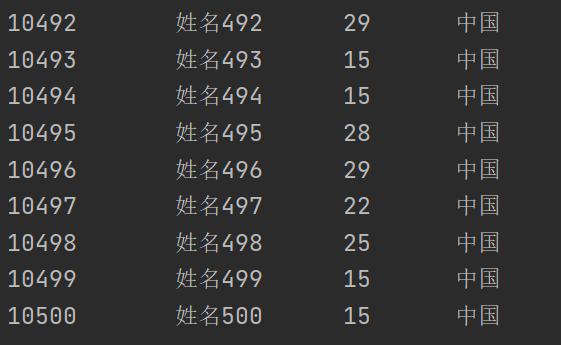
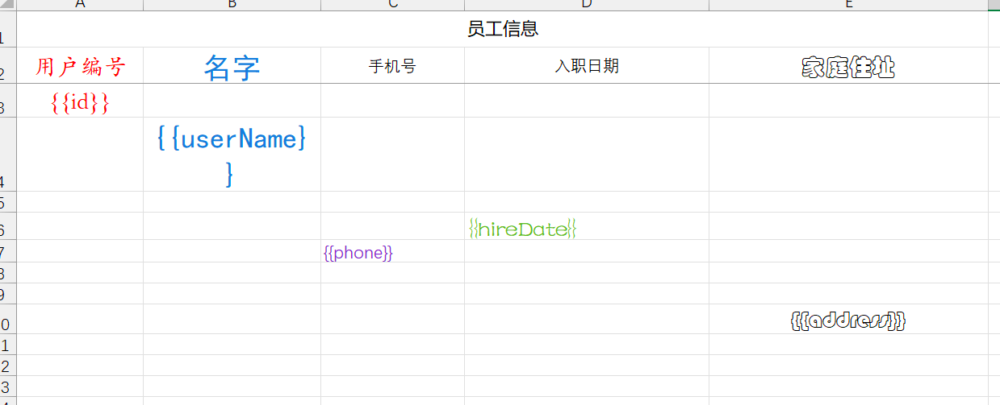

Java报表技术学习笔记
Excel概述版本Excel操作工具JXLPOIJXL导出excelAPI使用第一步：导入依赖第二步：使用API第三步：运行POI操作excel依赖版本区别导出excel导入excel导入数据类型问题web实现导出excelweb实现导入excel格式设置框线合并单元格行高表格的对齐方式字体基于模板导出数据导出带图片的数据导出带公式的数据百万数据导出概述解决方案分析原理分析准备数据实现测试结果百万数据导入概述问题说明解决方案分析步骤分析实现测试结果csv文件概述opencsvAPI导出CSV文件读取CSV文件word概述POI操作Word的API介绍POI导出wordPOI导入wordeasyPOI概述依赖注解方式导出注解方式导入模板方式导出数据导出CSV导出wordPDF概述Word转PDF概述环境准备实现iText导出PDF概述实现Markdown概述优势常用语法java导出Markdown工具类测试1测试2测试3测试4测试5
Excel
概述
在企业级应用开发中，Excel报表是一种最常见的报表需求。Excel报表开发一般分为两种形式：
- 为了方便操作，基于Excel的报表批量上传数据，也就是把Excel中的数据导入到系统中
- 通过java代码生成Excel报表。也就是把系统中的数据导出到Excel中，方便查阅
版本
Excel分为两个大的版本Excel2003和Excel2007及以上两个版本
- Excel2003 是一个特有的二进制格式，其核心结构是复合文档类型的结构，存储数据量较小，后缀名为xls
- Excel2007 的核心结构是 XML 类型的结构，采用的是基于 XML 的压缩方式，使其占用的空间更小，操作效率更高，后缀名为xlsx
Excel操作工具
Java中常见的用来操作Excel的方式一般有2种：
- JXL
- POI
JXL
JXL只能对Excel进行操作,属于比较老的框架，它只支持到Excel 95-2000的版本。现在已经停止更新和维护
POI
POI是apache的项目，可对微软的Word,Excel、PPT进行操作，包括office2003和2007、Excle2003和2007。
poi现在一直有更新。所以现在主流使用POI
Apache POI是Apache软件基金会的开源项目，由Java编写的免费开源的跨平台的 Java API，Apache POI提供API给Java语言操作Microsoft Office的功能
工作簿 ：WorkBook
- 2003版本：HSSFWordBook
- 2007级以上：XSSFWorkBook
工作表 ：Sheet
- 2003版本：HSSFSheet
- 2007级以上：XSSFSheet
行 ：Row
- 2003版本：HSSFRow
- 2007级以上：XSSFRow
单元格 ： Cell
- 2003版本：HSSFCell
- 2007级以上：XSSFCell
JXL导出excel
API
通过WritableWorkbook，WritableSheet，Label这三个对象我们就可以实现Excel文件的导出工作。
1、 创建可写入的Excel工作薄
1WritableWorkbook workbook= Workbook.createWorkbook(输出流);
2、创建工作表
xxxxxxxxxx11WritableSheet sheet= workbook.createSheet(工作表的名称, 工作表的索引值);
3、创建单元格
添加文本类单元格
x1Label labelC = new Label(列索引值, 行索引值, "单元格中的内容");2
3sheet.addCell(labelC);
4、写入到文件
xxxxxxxxxx11workbook.write();// 写入数据
5、释放资源：
xxxxxxxxxx11workbook.close();// 关闭文件
使用
第一步：导入依赖
xxxxxxxxxx51 <dependency>2 <groupId>net.sourceforge.jexcelapi</groupId>3 <artifactId>jxl</artifactId>4 <version>2.6.12</version>5 </dependency>
第二步：使用API
xxxxxxxxxx691package mao;2
3import jxl.Workbook;4import jxl.write.Label;5import jxl.write.WritableSheet;6import jxl.write.WritableWorkbook;7import jxl.write.WriteException;8
9import java.io.FileNotFoundException;10import java.io.FileOutputStream;11import java.io.IOException;12
13/**14 * Project name(项目名称)：java报表_JXL导出excel15 * Package(包名): mao16 * Class(类名): Test117 * Author(作者）: mao18 * Author QQ：129619324519 * GitHub：https://github.com/maomao124/20 * Date(创建日期)： 2023/6/121 * Time(创建时间)： 14:1422 * Version(版本): 1.023 * Description(描述)： JXL导出excel24 */25
26public class Test127{28 /**29 * 得到int随机30 *31 * @param min 最小值32 * @param max 最大值33 * @return int34 */35 public static int getIntRandom(int min, int max)36 {37 if (min > max)38 {39 min = max;40 }41 return min + (int) (Math.random() * (max - min + 1));42 }43
44 public static void main(String[] args) throws IOException, WriteException45 {46 //创建工作簿47 WritableWorkbook writableWorkbook = Workbook.createWorkbook(new FileOutputStream("./student.xls"));48 //创建工作表49 WritableSheet sheet = writableWorkbook.createSheet("学生信息", 0);50 //创建单元格,（列索引值，行索引值，内容）51 sheet.addCell(new Label(0, 0, "学生学号"));52 sheet.addCell(new Label(1, 0, "学生姓名"));53 sheet.addCell(new Label(2, 0, "学生性别"));54 sheet.addCell(new Label(3, 0, "学生年龄"));55
56 for (int i = 1; i < 201; i++)57 {58 //创建单元格59 sheet.addCell(new Label(0, i, 10000 + i + ""));60 sheet.addCell(new Label(1, i, "姓名" + i));61 sheet.addCell(new Label(2, i, getIntRandom(0, 1) == 1 ? "男" : "女"));62 sheet.addCell(new Label(3, i, String.valueOf(getIntRandom(15, 35))));63 }64 //写入65 writableWorkbook.write();66 //关闭67 writableWorkbook.close();68 }69}
第三步：运行

POI操作excel
依赖
xxxxxxxxxx171<dependency>2 <groupId>org.apache.poi</groupId>3 <artifactId>poi</artifactId>4 <version>5.2.2</version>5</dependency>6
7<dependency>8 <groupId>org.apache.poi</groupId>9 <artifactId>poi-ooxml</artifactId>10 <version>5.2.2</version>11</dependency>12
13<dependency>14 <groupId>org.apache.poi</groupId>15 <artifactId>poi-ooxml-schemas</artifactId>16 <version>4.1.2</version>17</dependency>
版本区别
在POI包中有如下几个主要对象和excel的几个对象对应：
| 对应excel名称 | 低版本中的类名 | 高版本中的类名 |
|---|---|---|
| 工作簿 | HSSFWorkbook | XSSFWorkbook |
| 工作表 | HSSFSheet | XSSFSheet |
| 行 | HSSFRow | XSSFRow |
| 单元格 | HSSFCell | XSSFCell |
| 单元格样式 | HSSFCellStyle | XSSFCellStyle |
导出excel
低版本：
xxxxxxxxxx1051package mao;2
3import org.apache.poi.hssf.usermodel.HSSFWorkbook;4import org.apache.poi.ss.usermodel.Cell;5import org.apache.poi.ss.usermodel.Row;6import org.apache.poi.ss.usermodel.Sheet;7import org.apache.poi.ss.usermodel.Workbook;8
9import java.io.FileNotFoundException;10import java.io.FileOutputStream;11import java.io.IOException;12
13/**14 * Project name(项目名称)：java报表_POI导出excel15 * Package(包名): mao16 * Class(类名): Test117 * Author(作者）: mao18 * Author QQ：129619324519 * GitHub：https://github.com/maomao124/20 * Date(创建日期)： 2023/6/121 * Time(创建时间)： 14:4422 * Version(版本): 1.023 * Description(描述)： POI导出-低版本24 */25
26public class Test127{28
29 /**30 * 得到int随机31 *32 * @param min 最小值33 * @param max 最大值34 * @return int35 */36 public static int getIntRandom(int min, int max)37 {38 if (min > max)39 {40 min = max;41 }42 return min + (int) (Math.random() * (max - min + 1));43 }44
45 public static void main(String[] args) throws IOException46 {47 //创建工作簿48 Workbook workbook = new HSSFWorkbook();49 //创建工作表50 Sheet sheet = workbook.createSheet("班级信息");51 //创建行，第0行52 Row row = sheet.createRow(0);53 //创建单元格54 Cell cell = row.createCell(0);55 //填充数据56 cell.setCellValue("班级编号");57 //创建单元格58 cell = row.createCell(1);59 //填充数据60 cell.setCellValue("班级名称");61 //创建单元格62 cell = row.createCell(2);63 //填充数据64 cell.setCellValue("班级人数");65 //创建单元格66 cell = row.createCell(3);67 //填充数据68 cell.setCellValue("所属年级");69 //创建单元格70 cell = row.createCell(4);71 //填充数据72 cell.setCellValue("所属学院");73
74
75 for (int i = 1; i < 20; i++)76 {77 //创建行，第i行78 row = sheet.createRow(i);79 //创建单元格80 cell = row.createCell(0);81 cell.setCellValue(10000 + i);82
83 cell = row.createCell(1);84 cell.setCellValue("计算机科学与技术" + i + "班");85
86 cell = row.createCell(2);87 cell.setCellValue(getIntRandom(20, 70));88
89 cell = row.createCell(3);90 cell.setCellValue(2019);91
92 cell = row.createCell(4);93 cell.setCellValue("计算机学院");94 }95
96 //关闭97 try (FileOutputStream fileOutputStream = new FileOutputStream("class.xls"))98 {99 //写入100 workbook.write(fileOutputStream);101 //关闭102 workbook.close();103 }104 }105}
高版本：
xxxxxxxxxx1041package mao;2
3import org.apache.poi.hssf.usermodel.HSSFWorkbook;4import org.apache.poi.ss.usermodel.Cell;5import org.apache.poi.ss.usermodel.Row;6import org.apache.poi.ss.usermodel.Sheet;7import org.apache.poi.ss.usermodel.Workbook;8import org.apache.poi.xssf.usermodel.XSSFWorkbook;9
10import java.io.FileOutputStream;11import java.io.IOException;12
13/**14 * Project name(项目名称)：java报表_POI导出excel15 * Package(包名): mao16 * Class(类名): Test217 * Author(作者）: mao18 * Author QQ：129619324519 * GitHub：https://github.com/maomao124/20 * Date(创建日期)： 2023/6/121 * Time(创建时间)： 15:0722 * Version(版本): 1.023 * Description(描述)： POI导出-高版本24 */25
26public class Test227{28 /**29 * 得到int随机30 *31 * @param min 最小值32 * @param max 最大值33 * @return int34 */35 public static int getIntRandom(int min, int max)36 {37 if (min > max)38 {39 min = max;40 }41 return min + (int) (Math.random() * (max - min + 1));42 }43
44 public static void main(String[] args) throws IOException45 {46 //创建工作簿47 Workbook workbook = new XSSFWorkbook();48 //创建工作表49 Sheet sheet = workbook.createSheet("班级信息");50 //创建行，第0行51 Row row = sheet.createRow(0);52 //创建单元格53 Cell cell = row.createCell(0);54 //填充数据55 cell.setCellValue("班级编号");56 //创建单元格57 cell = row.createCell(1);58 //填充数据59 cell.setCellValue("班级名称");60 //创建单元格61 cell = row.createCell(2);62 //填充数据63 cell.setCellValue("班级人数");64 //创建单元格65 cell = row.createCell(3);66 //填充数据67 cell.setCellValue("所属年级");68 //创建单元格69 cell = row.createCell(4);70 //填充数据71 cell.setCellValue("所属学院");72
73
74 for (int i = 1; i < 20; i++)75 {76 //创建行，第i行77 row = sheet.createRow(i);78 //创建单元格79 cell = row.createCell(0);80 cell.setCellValue(10000 + i);81
82 cell = row.createCell(1);83 cell.setCellValue("计算机科学与技术" + i + "班");84
85 cell = row.createCell(2);86 cell.setCellValue(getIntRandom(20, 70));87
88 cell = row.createCell(3);89 cell.setCellValue(2019);90
91 cell = row.createCell(4);92 cell.setCellValue("计算机学院");93 }94
95 //关闭96 try (FileOutputStream fileOutputStream = new FileOutputStream("class.xlsx"))97 {98 //写入99 workbook.write(fileOutputStream);100 //关闭101 workbook.close();102 }103 }104}

导入excel
导入上述生成的低版本的xls文件：
xxxxxxxxxx941package mao;2
3import org.apache.poi.hssf.usermodel.HSSFWorkbook;4import org.apache.poi.ss.usermodel.Row;5import org.apache.poi.ss.usermodel.Sheet;6import org.apache.poi.ss.usermodel.Workbook;7
8import java.io.FileInputStream;9
10/**11 * Project name(项目名称)：java报表_POI导入excel12 * Package(包名): mao13 * Class(类名): Test114 * Author(作者）: mao15 * Author QQ：129619324516 * GitHub：https://github.com/maomao124/17 * Date(创建日期)： 2023/6/118 * Time(创建时间)： 21:3019 * Version(版本): 1.020 * Description(描述)： poi 导入excel 低版本21 */22
23public class Test124{25 public static void main(String[] args)26 {27 try (final FileInputStream fileInputStream = new FileInputStream("./class.xls"))28 {29 //加载工作簿30 Workbook workbook = new HSSFWorkbook(fileInputStream);31 //读取第一个工作表32 Sheet sheet = workbook.getSheetAt(0);33 //得到最后一行34 int lastRowNum = sheet.getLastRowNum();35 //得到第0行36 Row row = sheet.getRow(0);37 //校验表头38 String stringCellValue = row.getCell(0).getStringCellValue();39 if (!"班级编号".equals(stringCellValue))40 {41 throw new UnsupportedOperationException("表格格式不支持");42 }43
44 stringCellValue = row.getCell(1).getStringCellValue();45 if (!"班级名称".equals(stringCellValue))46 {47 throw new UnsupportedOperationException("表格格式不支持");48 }49
50 stringCellValue = row.getCell(2).getStringCellValue();51 if (!"班级人数".equals(stringCellValue))52 {53 throw new UnsupportedOperationException("表格格式不支持");54 }55
56 stringCellValue = row.getCell(3).getStringCellValue();57 if (!"所属年级".equals(stringCellValue))58 {59 throw new UnsupportedOperationException("表格格式不支持");60 }61
62 stringCellValue = row.getCell(4).getStringCellValue();63 if (!"所属学院".equals(stringCellValue))64 {65 throw new UnsupportedOperationException("表格格式不支持");66 }67
68 System.out.println("班级编号\t\t班级名称\t\t班级人数\t\t所属年级\t\t所属学院");69
70 //遍历读取数据71 for (int i = 1; i <= lastRowNum; i++)72 {73 //读取第i行74 row = sheet.getRow(i);75 //读取班级编号76 int classNo = ((Double) row.getCell(0).getNumericCellValue()).intValue();77 //读取班级名称78 String className = row.getCell(1).getStringCellValue();79 //读取班级人数80 int classCount = ((Double) row.getCell(2).getNumericCellValue()).intValue();81 //读取所属年级82 int grade = ((Double) row.getCell(3).getNumericCellValue()).intValue();;83 //读取所属学院84 String academy = row.getCell(4).getStringCellValue();85 System.out.println(classNo + "\t\t" + className + "\t\t" + classCount + "\t\t" + grade + "\t\t" + academy);86 }87 }88 catch (Exception e)89 {90 e.printStackTrace();91 }92
93 }94}
导入上述生成的高版本的xlsx文件：
xxxxxxxxxx951package mao;2
3import org.apache.poi.hssf.usermodel.HSSFWorkbook;4import org.apache.poi.ss.usermodel.Row;5import org.apache.poi.ss.usermodel.Sheet;6import org.apache.poi.ss.usermodel.Workbook;7import org.apache.poi.xssf.usermodel.XSSFWorkbook;8
9import java.io.FileInputStream;10
11/**12 * Project name(项目名称)：java报表_POI导入excel13 * Package(包名): mao14 * Class(类名): Test215 * Author(作者）: mao16 * Author QQ：129619324517 * GitHub：https://github.com/maomao124/18 * Date(创建日期)： 2023/6/119 * Time(创建时间)： 21:5420 * Version(版本): 1.021 * Description(描述)： 无22 */23
24public class Test225{26 public static void main(String[] args)27 {28 try (final FileInputStream fileInputStream = new FileInputStream("./class.xlsx"))29 {30 //加载工作簿31 Workbook workbook = new XSSFWorkbook(fileInputStream);32 //读取第一个工作表33 Sheet sheet = workbook.getSheetAt(0);34 //得到最后一行35 int lastRowNum = sheet.getLastRowNum();36 //得到第0行37 Row row = sheet.getRow(0);38 //校验表头39 String stringCellValue = row.getCell(0).getStringCellValue();40 if (!"班级编号".equals(stringCellValue))41 {42 throw new UnsupportedOperationException("表格格式不支持");43 }44
45 stringCellValue = row.getCell(1).getStringCellValue();46 if (!"班级名称".equals(stringCellValue))47 {48 throw new UnsupportedOperationException("表格格式不支持");49 }50
51 stringCellValue = row.getCell(2).getStringCellValue();52 if (!"班级人数".equals(stringCellValue))53 {54 throw new UnsupportedOperationException("表格格式不支持");55 }56
57 stringCellValue = row.getCell(3).getStringCellValue();58 if (!"所属年级".equals(stringCellValue))59 {60 throw new UnsupportedOperationException("表格格式不支持");61 }62
63 stringCellValue = row.getCell(4).getStringCellValue();64 if (!"所属学院".equals(stringCellValue))65 {66 throw new UnsupportedOperationException("表格格式不支持");67 }68
69 System.out.println("班级编号\t\t班级名称\t\t班级人数\t\t所属年级\t\t所属学院");70
71 //遍历读取数据72 for (int i = 1; i <= lastRowNum; i++)73 {74 //读取第i行75 row = sheet.getRow(i);76 //读取班级编号77 int classNo = ((Double) row.getCell(0).getNumericCellValue()).intValue();78 //读取班级名称79 String className = row.getCell(1).getStringCellValue();80 //读取班级人数81 int classCount = ((Double) row.getCell(2).getNumericCellValue()).intValue();82 //读取所属年级83 int grade = ((Double) row.getCell(3).getNumericCellValue()).intValue();;84 //读取所属学院85 String academy = row.getCell(4).getStringCellValue();86 System.out.println(classNo + "\t\t" + className + "\t\t" + classCount + "\t\t" + grade + "\t\t" + academy);87 }88 }89 catch (Exception e)90 {91 e.printStackTrace();92 }93
94 }95}

导入数据类型问题

靠右的单元格为数值类型，靠左的单元格为字符串类型，比如班级编号和班级人数为数值类型，班级名称为字符串类型，如果使用poi导入时数据类型不正确，将会抛出异常
比如以下数据：

可以在抛出异常时处理：
xxxxxxxxxx1121package mao;2
3import org.apache.poi.ss.usermodel.Row;4import org.apache.poi.ss.usermodel.Sheet;5import org.apache.poi.ss.usermodel.Workbook;6import org.apache.poi.xssf.usermodel.XSSFWorkbook;7
8import java.io.FileInputStream;9
10/**11 * Project name(项目名称)：java报表_POI导入excel12 * Package(包名): mao13 * Class(类名): Test314 * Author(作者）: mao15 * Author QQ：129619324516 * GitHub：https://github.com/maomao124/17 * Date(创建日期)： 2023/6/118 * Time(创建时间)： 22:2219 * Version(版本): 1.020 * Description(描述)： 无21 */22
23public class Test324{25
26 public static void main(String[] args)27 {28 try (final FileInputStream fileInputStream = new FileInputStream("./class2.xlsx"))29 {30 //加载工作簿31 Workbook workbook = new XSSFWorkbook(fileInputStream);32 //读取第一个工作表33 Sheet sheet = workbook.getSheetAt(0);34 //得到最后一行35 int lastRowNum = sheet.getLastRowNum();36 //得到第0行37 Row row = sheet.getRow(0);38 //校验表头39 String stringCellValue = row.getCell(0).getStringCellValue();40 if (!"班级编号".equals(stringCellValue))41 {42 throw new UnsupportedOperationException("表格格式不支持");43 }44
45 stringCellValue = row.getCell(1).getStringCellValue();46 if (!"班级名称".equals(stringCellValue))47 {48 throw new UnsupportedOperationException("表格格式不支持");49 }50
51 stringCellValue = row.getCell(2).getStringCellValue();52 if (!"班级人数".equals(stringCellValue))53 {54 throw new UnsupportedOperationException("表格格式不支持");55 }56
57 stringCellValue = row.getCell(3).getStringCellValue();58 if (!"所属年级".equals(stringCellValue))59 {60 throw new UnsupportedOperationException("表格格式不支持");61 }62
63 stringCellValue = row.getCell(4).getStringCellValue();64 if (!"所属学院".equals(stringCellValue))65 {66 throw new UnsupportedOperationException("表格格式不支持");67 }68
69 System.out.println("班级编号\t\t班级名称\t\t班级人数\t\t所属年级\t\t所属学院");70
71 //遍历读取数据72 for (int i = 1; i <= lastRowNum; i++)73 {74 //读取第i行75 row = sheet.getRow(i);76 //读取班级编号77 int classNo = ((Double) row.getCell(0).getNumericCellValue()).intValue();78 String className = null;79 try80 {81 //读取班级名称82 className = String.valueOf(((Double) row.getCell(1).getNumericCellValue()).intValue());83 }84 catch (IllegalStateException e)85 {86 className = row.getCell(1).getStringCellValue();87 }88 //读取班级人数89 int classCount = 0;90 try91 {92 classCount = ((Double) row.getCell(2).getNumericCellValue()).intValue();93 }94 catch (IllegalStateException e)95 {96 classCount = Integer.parseInt(row.getCell(2).getStringCellValue());97 }98 //读取所属年级99 int grade = ((Double) row.getCell(3).getNumericCellValue()).intValue();100 //读取所属学院101 String academy = row.getCell(4).getStringCellValue();102 System.out.println(classNo + "\t\t" + className + "\t\t" + classCount + "\t\t" + grade + "\t\t" + academy);103 }104 }105 catch (Exception e)106 {107 e.printStackTrace();108 }109
110 }111}112

web实现导出excel
创建spring boot 程序，pom文件依赖如下：
xxxxxxxxxx351 <dependency>2 <groupId>org.springframework.boot</groupId>3 <artifactId>spring-boot-starter-web</artifactId>4 </dependency>5
6 <dependency>7 <groupId>org.projectlombok</groupId>8 <artifactId>lombok</artifactId>9 <optional>true</optional>10 </dependency>11
12 <dependency>13 <groupId>org.springframework.boot</groupId>14 <artifactId>spring-boot-starter-test</artifactId>15 <scope>test</scope>16 </dependency>17
18 <!--POI 操作excel 依赖-->19 <dependency>20 <groupId>org.apache.poi</groupId>21 <artifactId>poi</artifactId>22 <version>4.0.1</version>23 </dependency>24
25 <dependency>26 <groupId>org.apache.poi</groupId>27 <artifactId>poi-ooxml</artifactId>28 <version>4.0.1</version>29 </dependency>30
31 <dependency>32 <groupId>org.apache.poi</groupId>33 <artifactId>poi-ooxml-schemas</artifactId>34 <version>4.0.1</version>35 </dependency>
创建service接口
xxxxxxxxxx411package mao.java_report_web_poi_import_and_export_excel.service;2
3import org.springframework.web.multipart.MultipartFile;4
5import javax.servlet.http.HttpServletRequest;6import javax.servlet.http.HttpServletResponse;7
8/**9 * Project name(项目名称)：java_report_web_POI_import_and_export_excel10 * Package(包名): mao.java_report_web_poi_import_and_export_excel.service11 * Interface(接口名): ExcelService12 * Author(作者）: mao13 * Author QQ：129619324514 * GitHub：https://github.com/maomao124/15 * Date(创建日期)： 2023/6/216 * Time(创建时间)： 14:2517 * Version(版本): 1.018 * Description(描述)： 无19 */20
21public interface ExcelService22{23 /**24 * 导出excel25 *26 * @param httpServletRequest http servlet请求27 * @param httpServletResponse http servlet响应28 * @param highVersion 是否为高版本29 */30 void export(HttpServletRequest httpServletRequest, HttpServletResponse httpServletResponse, boolean highVersion);31
32
33 /**34 * 上传excel35 *36 * @param httpServletRequest http servlet请求37 * @param httpServletResponse http servlet响应38 * @param multipartFile 多部分文件39 */40 void upload(MultipartFile multipartFile, HttpServletRequest httpServletRequest, HttpServletResponse httpServletResponse);41}
实现类：
xxxxxxxxxx1391package mao.java_report_web_poi_import_and_export_excel.service.impl;2
3import lombok.SneakyThrows;4import lombok.extern.slf4j.Slf4j;5import mao.java_report_web_poi_import_and_export_excel.service.ExcelService;6import org.apache.poi.hssf.usermodel.HSSFWorkbook;7import org.apache.poi.ss.usermodel.Cell;8import org.apache.poi.ss.usermodel.Row;9import org.apache.poi.ss.usermodel.Sheet;10import org.apache.poi.ss.usermodel.Workbook;11import org.apache.poi.xssf.usermodel.XSSFWorkbook;12import org.springframework.stereotype.Service;13import org.springframework.web.multipart.MultipartFile;14
15import javax.servlet.http.HttpServletRequest;16import javax.servlet.http.HttpServletResponse;17import java.io.FileOutputStream;18
19/**20 * Project name(项目名称)：java_report_web_POI_import_and_export_excel21 * Package(包名): mao.java_report_web_poi_import_and_export_excel.service.impl22 * Class(类名): ExcelServiceImpl23 * Author(作者）: mao24 * Author QQ：129619324525 * GitHub：https://github.com/maomao124/26 * Date(创建日期)： 2023/6/227 * Time(创建时间)： 14:2628 * Version(版本): 1.029 * Description(描述)： 无30 */31
32public class ExcelServiceImpl implements ExcelService35{36
37 /**38 * 得到int随机39 *40 * @param min 最小值41 * @param max 最大值42 * @return int43 */44 public static int getIntRandom(int min, int max)45 {46 if (min > max)47 {48 min = max;49 }50 return min + (int) (Math.random() * (max - min + 1));51 }52
53 54 55 public void export(HttpServletRequest httpServletRequest, HttpServletResponse httpServletResponse, boolean highVersion)56 {57 log.info("开始导出excel");58
59 //创建工作簿60 Workbook workbook = null;61 String fileName = null;62 //判断是否为高版本63 if (highVersion)64 {65 //高版本66 workbook = new XSSFWorkbook();67 fileName = "xxx学校班级信息表.xlsx";68 }69 else70 {71 //低版本72 workbook = new HSSFWorkbook();73 fileName = "xxx学校班级信息表.xls";74 }75 //创建工作表76 Sheet sheet = workbook.createSheet("班级信息");77 //创建行，第0行78 Row row = sheet.createRow(0);79 //创建单元格80 Cell cell = row.createCell(0);81 //填充数据82 cell.setCellValue("班级编号");83 //创建单元格84 cell = row.createCell(1);85 //填充数据86 cell.setCellValue("班级名称");87 //创建单元格88 cell = row.createCell(2);89 //填充数据90 cell.setCellValue("班级人数");91 //创建单元格92 cell = row.createCell(3);93 //填充数据94 cell.setCellValue("所属年级");95 //创建单元格96 cell = row.createCell(4);97 //填充数据98 cell.setCellValue("所属学院");99
100 //500行101 for (int i = 1; i < 500; i++)102 {103 //创建行，第i行104 row = sheet.createRow(i);105 //创建单元格106 cell = row.createCell(0);107 cell.setCellValue(10000 + i);108
109 cell = row.createCell(1);110 cell.setCellValue("计算机科学与技术" + i + "班");111
112 cell = row.createCell(2);113 cell.setCellValue(getIntRandom(20, 70));114
115 cell = row.createCell(3);116 cell.setCellValue(2019);117
118 cell = row.createCell(4);119 cell.setCellValue("计算机学院");120 }121
122 //请求头，设置附件（attachment）形式，设置文件名，并转换编码123 httpServletResponse.setHeader("Content-Disposition", "attachment;filename=" + new String(fileName.getBytes(), "ISO8859-1"));124 //设置请求类型，表格125 httpServletResponse.setContentType("application/vnd.openxmlformats-officedocument.spreadsheetml.sheet");126 //写入127 workbook.write(httpServletResponse.getOutputStream());128 //关闭129 workbook.close();130 log.info("导出完成");131 }132
133 134 public void upload(MultipartFile multipartFile, HttpServletRequest httpServletRequest, HttpServletResponse httpServletResponse)135 {136 log.info("开始导入excel");137 //todo138 }139}
controller
xxxxxxxxxx651package mao.java_report_web_poi_import_and_export_excel.controller;2
3import lombok.extern.slf4j.Slf4j;4import mao.java_report_web_poi_import_and_export_excel.service.ExcelService;5import org.springframework.web.bind.annotation.GetMapping;6import org.springframework.web.bind.annotation.RequestMapping;7import org.springframework.web.bind.annotation.RequestParam;8import org.springframework.web.bind.annotation.RestController;9import org.springframework.web.multipart.MultipartFile;10
11import javax.annotation.Resource;12import javax.servlet.http.HttpServletRequest;13import javax.servlet.http.HttpServletResponse;14
15/**16 * Project name(项目名称)：java_report_web_POI_import_and_export_excel17 * Package(包名): mao.java_report_web_poi_import_and_export_excel.controller18 * Class(类名): ExcelController19 * Author(作者）: mao20 * Author QQ：129619324521 * GitHub：https://github.com/maomao124/22 * Date(创建日期)： 2023/6/223 * Time(创建时间)： 14:2524 * Version(版本): 1.025 * Description(描述)： 无26 */27
28
29("/excel")32public class ExcelController33{34
35 36 private ExcelService excelService;37
38 /**39 * 导出低版本excel40 */41 ("/export/low")42 public void exportLow(HttpServletRequest httpServletRequest, HttpServletResponse httpServletResponse)43 {44 excelService.export(httpServletRequest, httpServletResponse, false);45 }46
47 /**48 * 导出高版本excel49 */50 ("/export/high")51 public void exportHigh(HttpServletRequest httpServletRequest, HttpServletResponse httpServletResponse)52 {53 excelService.export(httpServletRequest, httpServletResponse, true);54 }55
56 /**57 * 上传excel58 */59 ("/upload")60 public void upload(("file") MultipartFile multipartFile, HttpServletRequest httpServletRequest, HttpServletResponse httpServletResponse)61 {62 excelService.upload(multipartFile, httpServletRequest, httpServletResponse);63 }64}65
访问低版本下载地址：
http://localhost:8080/excel/export/low

访问高版本下载地址：
http://localhost:8080/excel/export/high

web实现导入excel
实现upload方法
xxxxxxxxxx2641package mao.java_report_web_poi_import_and_export_excel.service.impl;2
3import lombok.SneakyThrows;4import lombok.extern.slf4j.Slf4j;5import mao.java_report_web_poi_import_and_export_excel.service.ExcelService;6import org.apache.poi.hssf.usermodel.HSSFWorkbook;7import org.apache.poi.ss.usermodel.Cell;8import org.apache.poi.ss.usermodel.Row;9import org.apache.poi.ss.usermodel.Sheet;10import org.apache.poi.ss.usermodel.Workbook;11import org.apache.poi.xssf.usermodel.XSSFWorkbook;12import org.springframework.stereotype.Service;13import org.springframework.web.multipart.MultipartFile;14
15import javax.servlet.http.HttpServletRequest;16import javax.servlet.http.HttpServletResponse;17import java.io.FileOutputStream;18
19/**20 * Project name(项目名称)：java_report_web_POI_import_and_export_excel21 * Package(包名): mao.java_report_web_poi_import_and_export_excel.service.impl22 * Class(类名): ExcelServiceImpl23 * Author(作者）: mao24 * Author QQ：129619324525 * GitHub：https://github.com/maomao124/26 * Date(创建日期)： 2023/6/227 * Time(创建时间)： 14:2628 * Version(版本): 1.029 * Description(描述)： 无30 */31
32public class ExcelServiceImpl implements ExcelService35{36
37 /**38 * 得到int随机39 *40 * @param min 最小值41 * @param max 最大值42 * @return int43 */44 public static int getIntRandom(int min, int max)45 {46 if (min > max)47 {48 min = max;49 }50 return min + (int) (Math.random() * (max - min + 1));51 }52
53 54 55 public void export(HttpServletRequest httpServletRequest, HttpServletResponse httpServletResponse, boolean highVersion)56 {57 log.info("开始导出excel");58
59 //创建工作簿60 Workbook workbook = null;61 String fileName = null;62 //判断是否为高版本63 if (highVersion)64 {65 //高版本66 workbook = new XSSFWorkbook();67 fileName = "xxx学校班级信息表.xlsx";68 }69 else70 {71 //低版本72 workbook = new HSSFWorkbook();73 fileName = "xxx学校班级信息表.xls";74 }75 //创建工作表76 Sheet sheet = workbook.createSheet("班级信息");77 //创建行，第0行78 Row row = sheet.createRow(0);79 //创建单元格80 Cell cell = row.createCell(0);81 //填充数据82 cell.setCellValue("班级编号");83 //创建单元格84 cell = row.createCell(1);85 //填充数据86 cell.setCellValue("班级名称");87 //创建单元格88 cell = row.createCell(2);89 //填充数据90 cell.setCellValue("班级人数");91 //创建单元格92 cell = row.createCell(3);93 //填充数据94 cell.setCellValue("所属年级");95 //创建单元格96 cell = row.createCell(4);97 //填充数据98 cell.setCellValue("所属学院");99
100 //500行101 for (int i = 1; i < 500; i++)102 {103 //创建行，第i行104 row = sheet.createRow(i);105 //创建单元格106 cell = row.createCell(0);107 cell.setCellValue(10000 + i);108
109 cell = row.createCell(1);110 cell.setCellValue("计算机科学与技术" + i + "班");111
112 cell = row.createCell(2);113 cell.setCellValue(getIntRandom(20, 70));114
115 cell = row.createCell(3);116 cell.setCellValue(2019);117
118 cell = row.createCell(4);119 cell.setCellValue("计算机学院");120 }121
122 //请求头，设置附件（attachment）形式，设置文件名，并转换编码123 httpServletResponse.setHeader("Content-Disposition", "attachment;filename=" + new String(fileName.getBytes(), "ISO8859-1"));124 //设置请求类型，表格125 httpServletResponse.setContentType("application/vnd.openxmlformats-officedocument.spreadsheetml.sheet");126 //写入127 workbook.write(httpServletResponse.getOutputStream());128 //关闭129 workbook.close();130 log.info("导出完成");131 }132
133 134 135 public void upload(MultipartFile multipartFile, HttpServletRequest httpServletRequest, HttpServletResponse httpServletResponse)136 {137 //todo：全局异常处理138
139 if (multipartFile == null)140 {141 throw new RuntimeException("请上传文件");142 }143
144 log.info("开始导入excel");145
146 boolean highVersion;147 //得到文件名148 String filename = multipartFile.getOriginalFilename();149 log.info("文件名：" + filename);150 if (filename == null || filename.length() < 1)151 {152 throw new UnsupportedOperationException("无法读取文件名");153 }154 if (filename.endsWith(".xlsx"))155 {156 highVersion = true;157 }158 else if (filename.endsWith(".xls"))159 {160 highVersion = false;161 }162 else163 {164 throw new UnsupportedOperationException("文件后缀名不支持");165 }166
167 log.info("高版本？ " + highVersion);168
169 //加载工作簿170 Workbook workbook = null;171 if (highVersion)172 {173 workbook = new XSSFWorkbook(multipartFile.getInputStream());174 }175 else176 {177 workbook = new HSSFWorkbook(multipartFile.getInputStream());178 }179 //读取第一个工作表180 Sheet sheet = workbook.getSheetAt(0);181 //得到最后一行182 int lastRowNum = sheet.getLastRowNum();183 //得到第0行184 Row row = sheet.getRow(0);185 //校验表头186 String stringCellValue = row.getCell(0).getStringCellValue();187 if (!"班级编号".equals(stringCellValue))188 {189 throw new UnsupportedOperationException("表格格式不支持");190 }191
192 stringCellValue = row.getCell(1).getStringCellValue();193 if (!"班级名称".equals(stringCellValue))194 {195 throw new UnsupportedOperationException("表格格式不支持");196 }197
198 stringCellValue = row.getCell(2).getStringCellValue();199 if (!"班级人数".equals(stringCellValue))200 {201 throw new UnsupportedOperationException("表格格式不支持");202 }203
204 stringCellValue = row.getCell(3).getStringCellValue();205 if (!"所属年级".equals(stringCellValue))206 {207 throw new UnsupportedOperationException("表格格式不支持");208 }209
210 stringCellValue = row.getCell(4).getStringCellValue();211 if (!"所属学院".equals(stringCellValue))212 {213 throw new UnsupportedOperationException("表格格式不支持");214 }215
216 StringBuilder stringBuilder = new StringBuilder();217
218 stringBuilder.append("班级编号\t\t班级名称\t\t班级人数\t\t所属年级\t\t所属学院\n");219
220 //遍历读取数据221 for (int i = 1; i <= lastRowNum; i++)222 {223 //读取第i行224 row = sheet.getRow(i);225 //读取班级编号226 int classNo = ((Double) row.getCell(0).getNumericCellValue()).intValue();227 String className = null;228 try229 {230 //读取班级名称231 className = String.valueOf(((Double) row.getCell(1).getNumericCellValue()).intValue());232 }233 catch (IllegalStateException e)234 {235 className = row.getCell(1).getStringCellValue();236 }237 //读取班级人数238 int classCount = 0;239 try240 {241 classCount = ((Double) row.getCell(2).getNumericCellValue()).intValue();242 }243 catch (IllegalStateException e)244 {245 classCount = Integer.parseInt(row.getCell(2).getStringCellValue());246 }247 //读取所属年级248 int grade = ((Double) row.getCell(3).getNumericCellValue()).intValue();249 //读取所属学院250 String academy = row.getCell(4).getStringCellValue();251 stringBuilder.append(classNo).append("\t\t")252 .append(className).append("\t\t")253 .append(classCount).append("\t\t")254 .append(grade).append("\t\t")255 .append(academy)256 .append('\n');257 }258
259 log.info("\n\n" + stringBuilder + "\t\t");260
261 log.info("导入完成");262 }263}264
upload.html
xxxxxxxxxx121<html lang="en">3<head>4 <meta charset="UTF-8">5 <title>Title</title></head>6<body>7<form action="/excel/upload" method="post" enctype="multipart/form-data">8 <input type="file" name="file" value="请选择文件">9 <input type="submit" value="上传">10</form>11</body>12</html>
访问
http://localhost:8080/upload.html
上传低版本：


上传高版本：


格式设置
框线
xxxxxxxxxx511package mao;2
3import org.apache.poi.hssf.usermodel.HSSFCellStyle;4import org.apache.poi.ss.usermodel.*;5import org.apache.poi.xssf.usermodel.XSSFWorkbook;6
7import java.io.FileOutputStream;8
9/**10 * Project name(项目名称)：java报表_POI格式设置11 * Package(包名): mao12 * Class(类名): Test113 * Author(作者）: mao14 * Author QQ：129619324515 * GitHub：https://github.com/maomao124/16 * Date(创建日期)： 2023/6/217 * Time(创建时间)： 22:1218 * Version(版本): 1.019 * Description(描述)： 无20 */21
22public class Test123{24 public static void main(String[] args)25 {26 Workbook workbook = new XSSFWorkbook();27 CellStyle cellStyle = workbook.createCellStyle();28 cellStyle.setBorderBottom(BorderStyle.DOUBLE);//底线29 cellStyle.setBorderTop(BorderStyle.DOUBLE);//顶部线30 cellStyle.setBorderLeft(BorderStyle.HAIR);//左侧线31 cellStyle.setBorderRight(BorderStyle.NONE);//右侧线32 Sheet sheet = workbook.createSheet("test");33 Row row = sheet.createRow(0);34 Cell cell = row.createCell(0);35 cell.setCellValue("hello");36 cell.setCellStyle(cellStyle);37 row = sheet.createRow(1);38 cell = row.createCell(1);39 cell.setCellValue("world");40 cell.setCellStyle(cellStyle);41 try (FileOutputStream fileOutputStream = new FileOutputStream("./out.xlsx"))42 {43 workbook.write(fileOutputStream);44 workbook.close();45 }46 catch (Exception e)47 {48 e.printStackTrace();49 }50 }51}
合并单元格
xxxxxxxxxx521package mao;2
3import org.apache.poi.ss.usermodel.Cell;4import org.apache.poi.ss.usermodel.Row;5import org.apache.poi.ss.usermodel.Sheet;6import org.apache.poi.ss.usermodel.Workbook;7import org.apache.poi.ss.util.CellRangeAddress;8import org.apache.poi.xssf.usermodel.XSSFWorkbook;9
10import java.io.FileOutputStream;11
12/**13 * Project name(项目名称)：java报表_POI格式设置14 * Package(包名): mao15 * Class(类名): Test216 * Author(作者）: mao17 * Author QQ：129619324518 * GitHub：https://github.com/maomao124/19 * Date(创建日期)： 2023/6/320 * Time(创建时间)： 12:3121 * Version(版本): 1.022 * Description(描述)： 无23 */24
25public class Test226{27 public static void main(String[] args)28 {29 Workbook workbook = new XSSFWorkbook();30 Sheet sheet = workbook.createSheet("test");31 //合并单元格，参数为 起始行, 结束行, 起始列, 结束列 32 sheet.addMergedRegion(new CellRangeAddress(0, 0, 0, 4));33 Row row = sheet.createRow(0);34 Cell cell = row.createCell(0);35 cell.setCellValue("test");36 cell = row.createCell(6);37 cell.setCellValue("test2");38 sheet.addMergedRegion(new CellRangeAddress(2, 6, 2, 4));39 row = sheet.createRow(2);40 cell = row.createCell(2);41 cell.setCellValue("test3");42 try (FileOutputStream fileOutputStream = new FileOutputStream("./out2.xlsx"))43 {44 workbook.write(fileOutputStream);45 workbook.close();46 }47 catch (Exception e)48 {49 e.printStackTrace();50 }51 }52}

行高
xxxxxxxxxx621package mao;2
3import org.apache.poi.ss.usermodel.Cell;4import org.apache.poi.ss.usermodel.Row;5import org.apache.poi.ss.usermodel.Sheet;6import org.apache.poi.ss.usermodel.Workbook;7import org.apache.poi.ss.util.CellRangeAddress;8import org.apache.poi.xssf.usermodel.XSSFWorkbook;9
10import java.io.FileOutputStream;11
12/**13 * Project name(项目名称)：java报表_POI格式设置14 * Package(包名): mao15 * Class(类名): Test316 * Author(作者）: mao17 * Author QQ：129619324518 * GitHub：https://github.com/maomao124/19 * Date(创建日期)： 2023/6/320 * Time(创建时间)： 12:4921 * Version(版本): 1.022 * Description(描述)： 无23 */24
25public class Test326{27 public static void main(String[] args)28 {29 Workbook workbook = new XSSFWorkbook();30 Sheet sheet = workbook.createSheet("test");31
32 Row row = sheet.createRow(0);33 row.createCell(0).setCellValue("test1");34 row.createCell(1).setCellValue("test2");35 //设置行高36 row.setHeight((short) 500);37 row = sheet.createRow(1);38 row.createCell(0).setCellValue("test3");39 row.createCell(1).setCellValue("test4");40 //设置行高41 row.setHeight((short) 200);42 row = sheet.createRow(2);43 row.createCell(0).setCellValue("test5");44 row.createCell(1).setCellValue("test6");45 //设置行高46 row.setHeight((short) 1400);47 row = sheet.createRow(3);48 row.createCell(0).setCellValue("test7");49 row.createCell(1).setCellValue("test8");50
51
52 try (FileOutputStream fileOutputStream = new FileOutputStream("./out3.xlsx"))53 {54 workbook.write(fileOutputStream);55 workbook.close();56 }57 catch (Exception e)58 {59 e.printStackTrace();60 }61 }62}

表格的对齐方式
xxxxxxxxxx701package mao;2
3import org.apache.poi.hssf.usermodel.HSSFCellStyle;4import org.apache.poi.ss.usermodel.*;5import org.apache.poi.xssf.usermodel.XSSFWorkbook;6
7import java.io.FileOutputStream;8
9/**10 * Project name(项目名称)：java报表_POI格式设置11 * Package(包名): mao12 * Class(类名): Test413 * Author(作者）: mao14 * Author QQ：129619324515 * GitHub：https://github.com/maomao124/16 * Date(创建日期)： 2023/6/317 * Time(创建时间)： 12:5518 * Version(版本): 1.019 * Description(描述)： 无20 */21
22public class Test423{24 public static void main(String[] args)25 {26 Workbook workbook = new XSSFWorkbook();27 Sheet sheet = workbook.createSheet("test");28 CellStyle cellStyle = workbook.createCellStyle();29 //水平居中30 cellStyle.setAlignment(HorizontalAlignment.CENTER);31 //垂直居中32 cellStyle.setVerticalAlignment(VerticalAlignment.CENTER);33
34 Row row = sheet.createRow(0);35 Cell cell = row.createCell(0);36 cell.setCellValue("test");37 //居中对齐38 cell.setCellStyle(cellStyle);39 cell = row.createCell(1);40 cell.setCellValue("test");41 //居中对齐42 cell.setCellStyle(cellStyle);43
44 cell = row.createCell(2);45 cell.setCellValue("test");46 //默认47 //cell.setCellStyle(cellStyle);48
49 cellStyle = workbook.createCellStyle();50 //循环填充51 cellStyle.setAlignment(HorizontalAlignment.FILL);52 //垂直居中53 cellStyle.setVerticalAlignment(VerticalAlignment.CENTER);54
55 cell = row.createCell(3);56 cell.setCellValue("test");57 //循环填充58 cell.setCellStyle(cellStyle);59
60 try (FileOutputStream fileOutputStream = new FileOutputStream("./out4.xlsx"))61 {62 workbook.write(fileOutputStream);63 workbook.close();64 }65 catch (Exception e)66 {67 e.printStackTrace();68 }69 }70}

字体
xxxxxxxxxx981package mao;2
3import org.apache.poi.ss.usermodel.*;4import org.apache.poi.xssf.usermodel.XSSFWorkbook;5
6import java.io.FileOutputStream;7
8/**9 * Project name(项目名称)：java报表_POI格式设置10 * Package(包名): mao11 * Class(类名): Test512 * Author(作者）: mao13 * Author QQ：129619324514 * GitHub：https://github.com/maomao124/15 * Date(创建日期)： 2023/6/316 * Time(创建时间)： 13:0617 * Version(版本): 1.018 * Description(描述)： 无19 */20
21public class Test522{23 public static void main(String[] args)24 {25 Workbook workbook = new XSSFWorkbook();26 Sheet sheet = workbook.createSheet("test");27 Font font = workbook.createFont();28 //加粗29 font.setBold(true);30 //字体名称31 font.setFontName("黑体");32 //字体颜色33 font.setColor(Font.COLOR_RED);34 //字体大小35 font.setFontHeightInPoints((short) 20);36 CellStyle cellStyle = workbook.createCellStyle();37 cellStyle.setFont(font);38
39 Row row = sheet.createRow(0);40 Cell cell = row.createCell(0);41 cell.setCellValue("test1");42 cell.setCellStyle(cellStyle);43
44 cell = row.createCell(1);45 cell.setCellValue("test2");46 cell.setCellStyle(cellStyle);47
48 font = workbook.createFont();49 //加粗50 font.setBold(true);51 //字体名称52 font.setFontName("宋体");53 //字体颜色54 font.setColor((short) 11);55 //字体大小56 font.setFontHeightInPoints((short) 25);57 cellStyle = workbook.createCellStyle();58 cellStyle.setFont(font);59
60 cell = row.createCell(2);61 cell.setCellValue("test3");62 cell.setCellStyle(cellStyle);63
64 cell = row.createCell(3);65 cell.setCellValue("test4");66 cell.setCellStyle(cellStyle);67
68 font = workbook.createFont();69 //加粗70 font.setBold(false);71 //字体名称72 font.setFontName("微软雅黑");73 //字体颜色74 font.setColor((short) 12);75 //字体大小76 font.setFontHeightInPoints((short) 12);77 cellStyle = workbook.createCellStyle();78 cellStyle.setFont(font);79
80 cell = row.createCell(4);81 cell.setCellValue("test5");82 cell.setCellStyle(cellStyle);83
84 cell = row.createCell(5);85 cell.setCellValue("test6");86 cell.setCellStyle(cellStyle);87
88 try (FileOutputStream fileOutputStream = new FileOutputStream("./out5.xlsx"))89 {90 workbook.write(fileOutputStream);91 workbook.close();92 }93 catch (Exception e)94 {95 e.printStackTrace();96 }97 }98}

基于模板导出数据
首先准备一个excel模板，这个模板把复杂的样式和固定的内容先准备好并且放入到项目中，然后读取到模板后向里面放入数据
准备模板1

准备模板2

模板1：
xxxxxxxxxx1051package mao;2
3import org.apache.poi.ss.usermodel.*;4import org.apache.poi.xssf.usermodel.XSSFWorkbook;5
6import java.io.FileInputStream;7import java.io.FileOutputStream;8import java.io.IOException;9
10/**11 * Project name(项目名称)：java报表_基于模板导出数据12 * Package(包名): mao13 * Class(类名): Test114 * Author(作者）: mao15 * Author QQ：129619324516 * GitHub：https://github.com/maomao124/17 * Date(创建日期)： 2023/6/418 * Time(创建时间)： 14:0419 * Version(版本): 1.020 * Description(描述)： 基于模板导出数据21 */22
23public class Test124{25 /**26 * 得到int随机27 *28 * @param min 最小值29 * @param max 最大值30 * @return int31 */32 public static int getIntRandom(int min, int max)33 {34 if (min > max)35 {36 min = max;37 }38 return min + (int) (Math.random() * (max - min + 1));39 }40
41 public static void main(String[] args) throws IOException42 {43 Workbook workbook = null;44 try (FileInputStream fileInputStream = new FileInputStream("./class.xlsx"))45 {46 //创建工作簿47 workbook = new XSSFWorkbook(fileInputStream);48 //得到格式信息49 CellStyle cellStyle1 = workbook.getSheetAt(0).getRow(0).getCell(0).getCellStyle();50 CellStyle cellStyle2 = workbook.getSheetAt(0).getRow(0).getCell(1).getCellStyle();51 CellStyle cellStyle3 = workbook.getSheetAt(0).getRow(0).getCell(2).getCellStyle();52 CellStyle cellStyle4 = workbook.getSheetAt(0).getRow(0).getCell(3).getCellStyle();53 CellStyle cellStyle5 = workbook.getSheetAt(0).getRow(0).getCell(4).getCellStyle();54
55 Sheet sheet = workbook.getSheetAt(0);56 Row row = null;57 Cell cell = null;58
59
60 for (int i = 1; i < 20; i++)61 {62 //创建行，第i行63 row = sheet.createRow(i);64 //创建单元格65 cell = row.createCell(0);66 cell.setCellValue(10000 + i);67 cell.setCellStyle(cellStyle1);68
69 cell = row.createCell(1);70 cell.setCellValue("计算机科学与技术" + i + "班");71 cell.setCellStyle(cellStyle2);72
73 cell = row.createCell(2);74 cell.setCellValue(getIntRandom(20, 70));75 cell.setCellStyle(cellStyle3);76
77 cell = row.createCell(3);78 cell.setCellValue(2019);79 cell.setCellStyle(cellStyle4);80
81 cell = row.createCell(4);82 cell.setCellValue("计算机学院");83 cell.setCellStyle(cellStyle5);84 }85 }86 catch (Exception e)87 {88 e.printStackTrace();89 }90
91
92 //关闭93 try (FileOutputStream fileOutputStream = new FileOutputStream("class3.xlsx"))94 {95 //写入96 workbook.write(fileOutputStream);97 //关闭98 workbook.close();99 }100 catch (Exception e)101 {102 e.printStackTrace();103 }104 }105}
模板2

导出带图片的数据
POI主要提供了两个类来处理照片，这两个类是Patriarch和ClientAnchor前者负责在表中创建图片，后者负责设置图片的大小位置
xxxxxxxxxx731package mao;2
3import org.apache.poi.ss.usermodel.*;4import org.apache.poi.xssf.usermodel.XSSFClientAnchor;5import org.apache.poi.xssf.usermodel.XSSFWorkbook;6
7import javax.imageio.ImageIO;8import java.awt.image.BufferedImage;9import java.io.ByteArrayOutputStream;10import java.io.File;11import java.io.FileOutputStream;12import java.io.IOException;13
14/**15 * Project name(项目名称)：java报表_POI导出带图片的数据16 * Package(包名): mao17 * Class(类名): Test118 * Author(作者）: mao19 * Author QQ：129619324520 * GitHub：https://github.com/maomao124/21 * Date(创建日期)： 2023/6/422 * Time(创建时间)： 14:2823 * Version(版本): 1.024 * Description(描述)： 无25 */26
27public class Test128{29 public static void main(String[] args) throws IOException30 {31 Workbook workbook = new XSSFWorkbook();32 Sheet sheet = workbook.createSheet("test");33 Row row = sheet.createRow(0);34 Cell cell = row.createCell(0);35 cell.setCellValue("图片：");36 //创建一个字节输出流37 ByteArrayOutputStream byteArrayOutputStream = new ByteArrayOutputStream();38 //读取图片39 BufferedImage bufferedImage = ImageIO.read(new File("./test.png"));40 //把读取到图像放入到输出流中41 ImageIO.write(bufferedImage, "png", byteArrayOutputStream);42 //创建一个绘图控制类，负责画图43 Drawing<?> drawingPatriarch = sheet.createDrawingPatriarch();44 //指定把图片放到哪个位置45 //dx1 - the x coordinate within the first cell.//定义了图片在第一个cell内的偏移x坐标，既左上角所在cell的偏移x坐标，一般可设046 //dy1 - the y coordinate within the first cell.//定义了图片在第一个cell的偏移y坐标，既左上角所在cell的偏移y坐标，一般可设047 //dx2 - the x coordinate within the second cell.//定义了图片在第二个cell的偏移x坐标，既右下角所在cell的偏移x坐标，一般可设048 //dy2 - the y coordinate within the second cell.//定义了图片在第二个cell的偏移y坐标，既右下角所在cell的偏移y坐标，一般可设049 //col1 - the column (0 based) of the first cell.//第一个cell所在列，既图片左上角所在列50 //row1 - the row (0 based) of the first cell.//图片左上角所在行51 //col2 - the column (0 based) of the second cell.//图片右下角所在列52 //row2 - the row (0 based) of the second cell.//图片右下角所在行53 ClientAnchor clientAnchor = new XSSFClientAnchor(0, 0, 0, 0, 1, 0, 10, 30);54 // 开始把图片写入到sheet指定的位置55 drawingPatriarch.createPicture(clientAnchor, workbook.addPicture(56 byteArrayOutputStream.toByteArray(), Workbook.PICTURE_TYPE_PNG));57
58
59 clientAnchor = new XSSFClientAnchor(0, 0, 0, 0, 11, 2, 15, 8);60 drawingPatriarch.createPicture(clientAnchor, workbook.addPicture(61 byteArrayOutputStream.toByteArray(), Workbook.PICTURE_TYPE_PNG));62
63 try (FileOutputStream fileOutputStream = new FileOutputStream("./test.xlsx"))64 {65 workbook.write(fileOutputStream);66 workbook.close();67 }68 catch (Exception e)69 {70 e.printStackTrace();71 }72 }73}

导出带公式的数据
关于POI支持公式详见官网： https://poi.apache.org/components/spreadsheet/eval-devguide.html
在使用POI导出时使用setCellFormula方法来设置公式：
xxxxxxxxxx11cell.setCellFormula("公式");
百万数据导出
概述
Excel可以分为早期的Excel2003版本（使用POI的HSSF对象操作）和Excel2007版本（使用POI的XSSF操作），两者对百万数据的支持如下：
- Excel 2003：在POI中使用HSSF对象时，excel 2003最多只允许存储65536条数据，一般用来处理较少的数据量。这时对于百万级别数据，Excel肯定容纳不了
- Excel 2007：当POI升级到XSSF对象时，它可以直接支持excel2007以上版本，因为它采用ooxml格式。这时excel可以支持1048576条数据，单个sheet表就支持近百万条数据。但实际运行时还可能存在问题，原因是执行POI报表所产生的行对象，单元格对象，字体对象，他们都不会销毁，这就导致OOM的风险
解决方案分析
对于百万数据量的Excel导入导出，只讨论基于Excel2007的解决方法。在ApachePoi 官方提供了对操作大数据量的导入导出的工具和解决办法，操作Excel2007使用XSSF对象，可以分为三种模式：
- java代码解析xml
- dom4j一次性加载xml文件再解析
- SAX逐行加载，逐行解析
用户模式：用户模式有许多封装好的方法操作简单，但创建太多的对象，非常耗内存（之前使用的方法）
事件模式：基于SAX方式解析XML，SAX全称Simple API for XML，它是一个接口，也是一个软件包。它是一种XML解析的替代方法，不同于DOM解析XML文档时把所有内容一次性加载到内存中的方式，它逐行扫描文档，一边扫描，一边解析。
SXSSF对象：是用来生成海量excel数据文件，主要原理是借助临时存储空间生成excel
导出时使用的是SXSSFWorkBook这个类，一个工作表sheet最多只能放1048576行数据， 当我们的业务数据已超过100万了，一个sheet就不够用了，必须拆分到多个工作表。
导出百万数据时有两个弊端：
- 不能使用模板
- 不能使用太多的样式
原理分析
在实例化SXSSFWorkBook这个对象时，可以指定在内存中所产生的POI导出相关对象的数量（默认100），一旦内存中的对象的个数达到这个指定值时，就将内存中的这些对象的内容写入到磁盘中（XML的文件格式），就可以将这些对象从内存中销毁，以后只要达到这个值，就会以类似的处理方式处理，直至Excel导出完成。
准备数据
sql表结构：
xxxxxxxxxx81CREATE TABLE `user` (2 `id` bigint(20) NOT NULL COMMENT '用户ID',3 `user_name` varchar(100) DEFAULT NULL COMMENT '姓名',4 `phone` varchar(15) DEFAULT NULL COMMENT '手机号',5 `hire_date` datetime DEFAULT NULL COMMENT '入职日期',6 `address` varchar(300) DEFAULT NULL COMMENT '现在住址' 7) ENGINE=InnoDB DEFAULT CHARSET=utf8;8
创建存储过程：
xxxxxxxxxx151DELIMITER $$ -- 重新定义“;”分号2DROP PROCEDURE IF EXISTS test_insert $$ -- 如果有test_insert这个存储过程就删除3CREATE PROCEDURE test_insert() -- 创建存储过程4
5BEGIN6 DECLARE n int DEFAULT 1; -- 定义变量n=17 SET AUTOCOMMIT=0; -- 取消自动提交8 9 while n <= 5000000 do 10 INSERT INTO `user` VALUES ( n, CONCAT('姓名', n), '18800000008','2023-06-04 22:59:21','中国');11 SET n=n+1;12 END while;13 COMMIT;14END $$15
执行：
xxxxxxxxxx11CALL test_insert();
需要的时间比较长
实现
创建spring boot 程序，pom文件依赖如下：
xxxxxxxxxx591 <dependencies>2
3 <dependency>4 <groupId>org.springframework.boot</groupId>5 <artifactId>spring-boot-starter</artifactId>6 </dependency>7
8 <dependency>9 <groupId>org.projectlombok</groupId>10 <artifactId>lombok</artifactId>11 <optional>true</optional>12 </dependency>13 <dependency>14 <groupId>org.springframework.boot</groupId>15 <artifactId>spring-boot-starter-test</artifactId>16 <scope>test</scope>17 </dependency>18
19 <!--POI 操作excel 依赖-->20 <dependency>21 <groupId>org.apache.poi</groupId>22 <artifactId>poi</artifactId>23 <version>4.0.1</version>24 </dependency>25
26 <dependency>27 <groupId>org.apache.poi</groupId>28 <artifactId>poi-ooxml</artifactId>29 <version>4.0.1</version>30 </dependency>31
32 <dependency>33 <groupId>org.apache.poi</groupId>34 <artifactId>poi-ooxml-schemas</artifactId>35 <version>4.0.1</version>36 </dependency>37
38 <!--spring-boot mybatis-plus依赖-->39 <dependency>40 <groupId>com.baomidou</groupId>41 <artifactId>mybatis-plus-boot-starter</artifactId>42 <version>3.5.1</version>43 </dependency>44
45 <!--spring-boot druid连接池依赖-->46 <dependency>47 <groupId>com.alibaba</groupId>48 <artifactId>druid-spring-boot-starter</artifactId>49 <version>1.2.8</version>50 </dependency>51
52 <!--mysql依赖 spring-boot-->53 <dependency>54 <groupId>mysql</groupId>55 <artifactId>mysql-connector-java</artifactId>56 <scope>runtime</scope>57 </dependency>58
59 </dependencies>
实体类：
xxxxxxxxxx371package mao.java_report_poi_million_data_export.entity;2
3import com.baomidou.mybatisplus.annotation.TableField;4import com.baomidou.mybatisplus.annotation.TableId;5import lombok.Data;6
7import java.time.LocalDateTime;8
9/**10 * Project name(项目名称)：java_report_poi_million_data_export11 * Package(包名): mao.java_report_poi_million_data_export.entity12 * Class(类名): User13 * Author(作者）: mao14 * Author QQ：129619324515 * GitHub：https://github.com/maomao124/16 * Date(创建日期)： 2023/6/517 * Time(创建时间)： 13:4218 * Version(版本): 1.019 * Description(描述)： 无20 */21
22
23public class User25{26 27 private Long id;28
29 (value = "user_name")30 private String userName;31
32 private String phone;33
34 private LocalDateTime hireDate;35
36 private String address;37}
mapper接口：
xxxxxxxxxx241package mao.java_report_poi_million_data_export.mapper;2
3import com.baomidou.mybatisplus.core.mapper.BaseMapper;4import mao.java_report_poi_million_data_export.entity.User;5import org.apache.ibatis.annotations.Mapper;6
7/**8 * Project name(项目名称)：java_report_poi_million_data_export9 * Package(包名): mao.java_report_poi_million_data_export.mapper10 * Interface(接口名): UserMapper11 * Author(作者）: mao12 * Author QQ：129619324513 * GitHub：https://github.com/maomao124/14 * Date(创建日期)： 2023/6/515 * Time(创建时间)： 13:4716 * Version(版本): 1.017 * Description(描述)： 无18 */19
20public interface UserMapper extends BaseMapper<User>22{23
24}
配置类：
xxxxxxxxxx371package mao.java_report_poi_million_data_export.config;2
3import com.baomidou.mybatisplus.annotation.DbType;4import com.baomidou.mybatisplus.extension.plugins.MybatisPlusInterceptor;5import com.baomidou.mybatisplus.extension.plugins.inner.PaginationInnerInterceptor;6import org.springframework.context.annotation.Bean;7import org.springframework.context.annotation.Configuration;8
9/**10 * Project name(项目名称)：java_report_poi_million_data_export11 * Package(包名): mao.java_report_poi_million_data_export.config12 * Class(类名): MybatisPlusConfig13 * Author(作者）: mao14 * Author QQ：129619324515 * GitHub：https://github.com/maomao124/16 * Date(创建日期)： 2023/6/517 * Time(创建时间)： 14:2118 * Version(版本): 1.019 * Description(描述)： 无20 */21
22public class MybatisPlusConfig24{25 /**26 * MybatisPlus拦截器27 *28 * @return MybatisPlusInterceptor29 */30 31 public MybatisPlusInterceptor mybatisPlusInterceptor()32 {33 MybatisPlusInterceptor interceptor = new MybatisPlusInterceptor();34 interceptor.addInnerInterceptor(new PaginationInnerInterceptor(DbType.MYSQL));35 return interceptor;36 }37}
xxxxxxxxxx251package mao.java_report_poi_million_data_export.service;2
3import com.baomidou.mybatisplus.extension.service.IService;4import mao.java_report_poi_million_data_export.entity.User;5
6/**7 * Project name(项目名称)：java_report_poi_million_data_export8 * Package(包名): mao.java_report_poi_million_data_export.service9 * Interface(接口名): UserService10 * Author(作者）: mao11 * Author QQ：129619324512 * GitHub：https://github.com/maomao124/13 * Date(创建日期)： 2023/6/514 * Time(创建时间)： 13:5815 * Version(版本): 1.016 * Description(描述)： 无17 */18
19public interface UserService extends IService<User>20{21 /**22 * 导出500万数据到excel23 */24 void downLoadMillion();25}
xxxxxxxxxx1291package mao.java_report_poi_million_data_export.service;2
3import com.baomidou.mybatisplus.core.metadata.IPage;4import com.baomidou.mybatisplus.extension.plugins.pagination.Page;5import com.baomidou.mybatisplus.extension.service.impl.ServiceImpl;6import lombok.extern.slf4j.Slf4j;7import mao.java_report_poi_million_data_export.entity.User;8import mao.java_report_poi_million_data_export.mapper.UserMapper;9import org.apache.poi.ss.usermodel.Cell;10import org.apache.poi.ss.usermodel.Row;11import org.apache.poi.ss.usermodel.Sheet;12import org.apache.poi.ss.usermodel.Workbook;13import org.apache.poi.xssf.streaming.SXSSFWorkbook;14import org.springframework.stereotype.Service;15
16import java.io.FileOutputStream;17import java.util.List;18
19/**20 * Project name(项目名称)：java_report_poi_million_data_export21 * Package(包名): mao.java_report_poi_million_data_export.service22 * Class(类名): UserServiceImpl23 * Author(作者）: mao24 * Author QQ：129619324525 * GitHub：https://github.com/maomao124/26 * Date(创建日期)： 2023/6/527 * Time(创建时间)： 14:0028 * Version(版本): 1.029 * Description(描述)： 无30 */31
32public class UserServiceImpl extends ServiceImpl<UserMapper, User> implements UserService35{36
37 38 public void downLoadMillion()39 {40 log.info("开始导出百万数据");41 //创建一个空的工作薄，SXSSFWorkbook42 Workbook workbook = new SXSSFWorkbook();43
44 //当前页45 int page = 1;46 //页面大小47 int pageSize = 200000;48 //每一个工作页的行数49 int rowIndex = 1;50 //总数据量51 int num = 0;52
53 Row row = null;54 Cell cell = null;55 Sheet sheet = null;56
57 //遍历58 while (true)59 {60 log.info("查询第" + page + "页");61 IPage<User> userPage = new Page<>(page, pageSize);62 //查询数据库63 List<User> userList = this.page(userPage).getRecords();64 //如果查询不到就不再查询了65 if (userList == null || userList.size() == 0)66 {67 break;68 }69 //每100W个就重新创建新的sheet和标题70 if (num % 1000000 == 0)71 {72 rowIndex = 1;73 //创建工作表74 sheet = workbook.createSheet("第" + ((num / 1000000) + 1) + "个工作表");75 //列宽76 sheet.setColumnWidth(0, 8 * 256);77 sheet.setColumnWidth(1, 12 * 256);78 sheet.setColumnWidth(2, 15 * 256);79 sheet.setColumnWidth(3, 15 * 256);80 sheet.setColumnWidth(4, 30 * 256);81 //标题82 String[] titles = new String[]{"编号", "姓名", "手机号", "入职日期", "现住址"};83 Row titleRow = sheet.createRow(0);84
85 for (int i = 0; i < titles.length; i++)86 {87 cell = titleRow.createCell(i);88 cell.setCellValue(titles[i]);89 }90 }91 for (User user : userList)92 {93 row = sheet.createRow(rowIndex);94 cell = row.createCell(0);95 cell.setCellValue(user.getId());96
97 cell = row.createCell(1);98 cell.setCellValue(user.getUserName());99
100 cell = row.createCell(2);101 cell.setCellValue(user.getPhone());102
103 cell = row.createCell(3);104 cell.setCellValue(user.getHireDate().toString());105
106 cell = row.createCell(4);107 cell.setCellValue(user.getAddress());108 //行索引+1109 rowIndex++;110 //总数+1111 num++;112 }113 // 继续查询下一页114 page++;115 }116
117 try (FileOutputStream fileOutputStream = new FileOutputStream("./out.xlsx"))118 {119 workbook.write(fileOutputStream);120 workbook.close();121 }122 catch (Exception e)123 {124 e.printStackTrace();125 }126
127 log.info("导出百万数据完成");128 }129}
启动类：
xxxxxxxxxx261package mao.java_report_poi_million_data_export;2
3import lombok.extern.slf4j.Slf4j;4import mao.java_report_poi_million_data_export.entity.User;5import mao.java_report_poi_million_data_export.mapper.UserMapper;6import mao.java_report_poi_million_data_export.service.UserService;7import org.springframework.boot.SpringApplication;8import org.springframework.boot.autoconfigure.SpringBootApplication;9import org.springframework.context.ConfigurableApplicationContext;10
11import java.util.List;12
13public class JavaReportPoiMillionDataExportApplication16{17
18 public static void main(String[] args)19 {20 ConfigurableApplicationContext applicationContext =21 SpringApplication.run(JavaReportPoiMillionDataExportApplication.class, args);22 UserService userService = applicationContext.getBean(UserService.class);23 userService.downLoadMillion();24 }25
26}
测试结果
xxxxxxxxxx18112023-06-05 14:22:15.736 INFO 34540 --- [ main] m.j.service.UserServiceImpl : 开始导出百万数据22023-06-05 14:22:15.835 INFO 34540 --- [ main] m.j.service.UserServiceImpl : 查询第1页32023-06-05 14:22:16.068 DEBUG 34540 --- [ main] m.j.m.UserMapper.selectPage_mpCount : ==> Preparing: SELECT COUNT(*) AS total FROM user42023-06-05 14:22:16.076 DEBUG 34540 --- [ main] m.j.m.UserMapper.selectPage_mpCount : ==> Parameters: 52023-06-05 14:22:17.469 DEBUG 34540 --- [ main] m.j.m.UserMapper.selectPage_mpCount : <== Total: 162023-06-05 14:22:17.472 DEBUG 34540 --- [ main] m.j.mapper.UserMapper.selectPage : ==> Preparing: SELECT id,user_name,phone,hire_date,address FROM user LIMIT ?72023-06-05 14:22:17.472 DEBUG 34540 --- [ main] m.j.mapper.UserMapper.selectPage : ==> Parameters: 200000(Long)82023-06-05 14:22:18.263 DEBUG 34540 --- [ main] m.j.mapper.UserMapper.selectPage : <== Total: 20000092023-06-05 14:22:19.206 INFO 34540 --- [ main] m.j.service.UserServiceImpl : 查询第2页102023-06-05 14:22:19.207 DEBUG 34540 --- [ main] m.j.m.UserMapper.selectPage_mpCount : ==> Preparing: SELECT COUNT(*) AS total FROM user112023-06-05 14:22:19.207 DEBUG 34540 --- [ main] m.j.m.UserMapper.selectPage_mpCount : ==> Parameters: 122023-06-05 14:22:20.503 DEBUG 34540 --- [ main] m.j.m.UserMapper.selectPage_mpCount : <== Total: 1132023-06-05 14:22:20.504 DEBUG 34540 --- [ main] m.j.mapper.UserMapper.selectPage : ==> Preparing: SELECT id,user_name,phone,hire_date,address FROM user LIMIT ?,?142023-06-05 14:22:20.504 DEBUG 34540 --- [ main] m.j.mapper.UserMapper.selectPage : ==> Parameters: 200000(Long), 200000(Long)152023-06-05 14:22:21.321 DEBUG 34540 --- [ main] m.j.mapper.UserMapper.selectPage : <== Total: 200000162023-06-05 14:22:22.147 INFO 34540 --- [ main] m.j.service.UserServiceImpl : 查询第3页172023-06-05 14:22:22.149 DEBUG 34540 --- [ main] m.j.m.UserMapper.selectPage_mpCount : ==> Preparing: SELECT COUNT(*) AS total FROM user182023-06-05 14:22:22.149 DEBUG 34540 --- [ main] m.j.m.UserMapper.selectPage_mpCount : ==> Parameters: 192023-06-05 14:22:23.378 DEBUG 34540 --- [ main] m.j.m.UserMapper.selectPage_mpCount : <== Total: 1202023-06-05 14:22:23.378 DEBUG 34540 --- [ main] m.j.mapper.UserMapper.selectPage : ==> Preparing: SELECT id,user_name,phone,hire_date,address FROM user LIMIT ?,?212023-06-05 14:22:23.378 DEBUG 34540 --- [ main] m.j.mapper.UserMapper.selectPage : ==> Parameters: 400000(Long), 200000(Long)222023-06-05 14:22:24.271 DEBUG 34540 --- [ main] m.j.mapper.UserMapper.selectPage : <== Total: 200000232023-06-05 14:22:25.105 INFO 34540 --- [ main] m.j.service.UserServiceImpl : 查询第4页242023-06-05 14:22:25.107 DEBUG 34540 --- [ main] m.j.m.UserMapper.selectPage_mpCount : ==> Preparing: SELECT COUNT(*) AS total FROM user252023-06-05 14:22:25.107 DEBUG 34540 --- [ main] m.j.m.UserMapper.selectPage_mpCount : ==> Parameters: 262023-06-05 14:22:26.344 DEBUG 34540 --- [ main] m.j.m.UserMapper.selectPage_mpCount : <== Total: 1272023-06-05 14:22:26.345 DEBUG 34540 --- [ main] m.j.mapper.UserMapper.selectPage : ==> Preparing: SELECT id,user_name,phone,hire_date,address FROM user LIMIT ?,?282023-06-05 14:22:26.345 DEBUG 34540 --- [ main] m.j.mapper.UserMapper.selectPage : ==> Parameters: 600000(Long), 200000(Long)292023-06-05 14:22:27.365 DEBUG 34540 --- [ main] m.j.mapper.UserMapper.selectPage : <== Total: 200000302023-06-05 14:22:28.232 INFO 34540 --- [ main] m.j.service.UserServiceImpl : 查询第5页312023-06-05 14:22:28.234 DEBUG 34540 --- [ main] m.j.m.UserMapper.selectPage_mpCount : ==> Preparing: SELECT COUNT(*) AS total FROM user322023-06-05 14:22:28.234 DEBUG 34540 --- [ main] m.j.m.UserMapper.selectPage_mpCount : ==> Parameters: 332023-06-05 14:22:29.495 DEBUG 34540 --- [ main] m.j.m.UserMapper.selectPage_mpCount : <== Total: 1342023-06-05 14:22:29.495 DEBUG 34540 --- [ main] m.j.mapper.UserMapper.selectPage : ==> Preparing: SELECT id,user_name,phone,hire_date,address FROM user LIMIT ?,?352023-06-05 14:22:29.495 DEBUG 34540 --- [ main] m.j.mapper.UserMapper.selectPage : ==> Parameters: 800000(Long), 200000(Long)362023-06-05 14:22:30.690 DEBUG 34540 --- [ main] m.j.mapper.UserMapper.selectPage : <== Total: 200000372023-06-05 14:22:31.687 INFO 34540 --- [ main] m.j.service.UserServiceImpl : 查询第6页382023-06-05 14:22:31.689 DEBUG 34540 --- [ main] m.j.m.UserMapper.selectPage_mpCount : ==> Preparing: SELECT COUNT(*) AS total FROM user392023-06-05 14:22:31.689 DEBUG 34540 --- [ main] m.j.m.UserMapper.selectPage_mpCount : ==> Parameters: 402023-06-05 14:22:32.894 DEBUG 34540 --- [ main] m.j.m.UserMapper.selectPage_mpCount : <== Total: 1412023-06-05 14:22:32.895 DEBUG 34540 --- [ main] m.j.mapper.UserMapper.selectPage : ==> Preparing: SELECT id,user_name,phone,hire_date,address FROM user LIMIT ?,?422023-06-05 14:22:32.895 DEBUG 34540 --- [ main] m.j.mapper.UserMapper.selectPage : ==> Parameters: 1000000(Long), 200000(Long)432023-06-05 14:22:34.140 DEBUG 34540 --- [ main] m.j.mapper.UserMapper.selectPage : <== Total: 200000442023-06-05 14:22:34.872 INFO 34540 --- [ main] m.j.service.UserServiceImpl : 查询第7页452023-06-05 14:22:34.873 DEBUG 34540 --- [ main] m.j.m.UserMapper.selectPage_mpCount : ==> Preparing: SELECT COUNT(*) AS total FROM user462023-06-05 14:22:34.873 DEBUG 34540 --- [ main] m.j.m.UserMapper.selectPage_mpCount : ==> Parameters: 472023-06-05 14:22:36.150 DEBUG 34540 --- [ main] m.j.m.UserMapper.selectPage_mpCount : <== Total: 1482023-06-05 14:22:36.151 DEBUG 34540 --- [ main] m.j.mapper.UserMapper.selectPage : ==> Preparing: SELECT id,user_name,phone,hire_date,address FROM user LIMIT ?,?492023-06-05 14:22:36.151 DEBUG 34540 --- [ main] m.j.mapper.UserMapper.selectPage : ==> Parameters: 1200000(Long), 200000(Long)502023-06-05 14:22:37.615 DEBUG 34540 --- [ main] m.j.mapper.UserMapper.selectPage : <== Total: 200000512023-06-05 14:22:38.296 INFO 34540 --- [ main] m.j.service.UserServiceImpl : 查询第8页522023-06-05 14:22:38.298 DEBUG 34540 --- [ main] m.j.m.UserMapper.selectPage_mpCount : ==> Preparing: SELECT COUNT(*) AS total FROM user532023-06-05 14:22:38.298 DEBUG 34540 --- [ main] m.j.m.UserMapper.selectPage_mpCount : ==> Parameters: 542023-06-05 14:22:39.661 DEBUG 34540 --- [ main] m.j.m.UserMapper.selectPage_mpCount : <== Total: 1552023-06-05 14:22:39.662 DEBUG 34540 --- [ main] m.j.mapper.UserMapper.selectPage : ==> Preparing: SELECT id,user_name,phone,hire_date,address FROM user LIMIT ?,?562023-06-05 14:22:39.662 DEBUG 34540 --- [ main] m.j.mapper.UserMapper.selectPage : ==> Parameters: 1400000(Long), 200000(Long)572023-06-05 14:22:41.275 DEBUG 34540 --- [ main] m.j.mapper.UserMapper.selectPage : <== Total: 200000582023-06-05 14:22:41.976 INFO 34540 --- [ main] m.j.service.UserServiceImpl : 查询第9页592023-06-05 14:22:41.977 DEBUG 34540 --- [ main] m.j.m.UserMapper.selectPage_mpCount : ==> Preparing: SELECT COUNT(*) AS total FROM user602023-06-05 14:22:41.977 DEBUG 34540 --- [ main] m.j.m.UserMapper.selectPage_mpCount : ==> Parameters: 612023-06-05 14:22:43.402 DEBUG 34540 --- [ main] m.j.m.UserMapper.selectPage_mpCount : <== Total: 1622023-06-05 14:22:43.402 DEBUG 34540 --- [ main] m.j.mapper.UserMapper.selectPage : ==> Preparing: SELECT id,user_name,phone,hire_date,address FROM user LIMIT ?,?632023-06-05 14:22:43.403 DEBUG 34540 --- [ main] m.j.mapper.UserMapper.selectPage : ==> Parameters: 1600000(Long), 200000(Long)642023-06-05 14:22:45.088 DEBUG 34540 --- [ main] m.j.mapper.UserMapper.selectPage : <== Total: 200000652023-06-05 14:22:45.755 INFO 34540 --- [ main] m.j.service.UserServiceImpl : 查询第10页662023-06-05 14:22:45.756 DEBUG 34540 --- [ main] m.j.m.UserMapper.selectPage_mpCount : ==> Preparing: SELECT COUNT(*) AS total FROM user672023-06-05 14:22:45.756 DEBUG 34540 --- [ main] m.j.m.UserMapper.selectPage_mpCount : ==> Parameters: 682023-06-05 14:22:47.095 DEBUG 34540 --- [ main] m.j.m.UserMapper.selectPage_mpCount : <== Total: 1692023-06-05 14:22:47.096 DEBUG 34540 --- [ main] m.j.mapper.UserMapper.selectPage : ==> Preparing: SELECT id,user_name,phone,hire_date,address FROM user LIMIT ?,?702023-06-05 14:22:47.096 DEBUG 34540 --- [ main] m.j.mapper.UserMapper.selectPage : ==> Parameters: 1800000(Long), 200000(Long)712023-06-05 14:22:48.987 DEBUG 34540 --- [ main] m.j.mapper.UserMapper.selectPage : <== Total: 200000722023-06-05 14:22:49.715 INFO 34540 --- [ main] m.j.service.UserServiceImpl : 查询第11页732023-06-05 14:22:49.716 DEBUG 34540 --- [ main] m.j.m.UserMapper.selectPage_mpCount : ==> Preparing: SELECT COUNT(*) AS total FROM user742023-06-05 14:22:49.716 DEBUG 34540 --- [ main] m.j.m.UserMapper.selectPage_mpCount : ==> Parameters: 752023-06-05 14:22:51.059 DEBUG 34540 --- [ main] m.j.m.UserMapper.selectPage_mpCount : <== Total: 1762023-06-05 14:22:51.060 DEBUG 34540 --- [ main] m.j.mapper.UserMapper.selectPage : ==> Preparing: SELECT id,user_name,phone,hire_date,address FROM user LIMIT ?,?772023-06-05 14:22:51.060 DEBUG 34540 --- [ main] m.j.mapper.UserMapper.selectPage : ==> Parameters: 2000000(Long), 200000(Long)782023-06-05 14:22:53.149 DEBUG 34540 --- [ main] m.j.mapper.UserMapper.selectPage : <== Total: 200000792023-06-05 14:22:53.847 INFO 34540 --- [ main] m.j.service.UserServiceImpl : 查询第12页802023-06-05 14:22:53.848 DEBUG 34540 --- [ main] m.j.m.UserMapper.selectPage_mpCount : ==> Preparing: SELECT COUNT(*) AS total FROM user812023-06-05 14:22:53.848 DEBUG 34540 --- [ main] m.j.m.UserMapper.selectPage_mpCount : ==> Parameters: 822023-06-05 14:22:55.146 DEBUG 34540 --- [ main] m.j.m.UserMapper.selectPage_mpCount : <== Total: 1832023-06-05 14:22:55.146 DEBUG 34540 --- [ main] m.j.mapper.UserMapper.selectPage : ==> Preparing: SELECT id,user_name,phone,hire_date,address FROM user LIMIT ?,?842023-06-05 14:22:55.146 DEBUG 34540 --- [ main] m.j.mapper.UserMapper.selectPage : ==> Parameters: 2200000(Long), 200000(Long)852023-06-05 14:22:57.584 DEBUG 34540 --- [ main] m.j.mapper.UserMapper.selectPage : <== Total: 200000862023-06-05 14:22:58.262 INFO 34540 --- [ main] m.j.service.UserServiceImpl : 查询第13页872023-06-05 14:22:58.264 DEBUG 34540 --- [ main] m.j.m.UserMapper.selectPage_mpCount : ==> Preparing: SELECT COUNT(*) AS total FROM user882023-06-05 14:22:58.264 DEBUG 34540 --- [ main] m.j.m.UserMapper.selectPage_mpCount : ==> Parameters: 892023-06-05 14:22:59.723 DEBUG 34540 --- [ main] m.j.m.UserMapper.selectPage_mpCount : <== Total: 1902023-06-05 14:22:59.724 DEBUG 34540 --- [ main] m.j.mapper.UserMapper.selectPage : ==> Preparing: SELECT id,user_name,phone,hire_date,address FROM user LIMIT ?,?912023-06-05 14:22:59.725 DEBUG 34540 --- [ main] m.j.mapper.UserMapper.selectPage : ==> Parameters: 2400000(Long), 200000(Long)922023-06-05 14:23:02.363 DEBUG 34540 --- [ main] m.j.mapper.UserMapper.selectPage : <== Total: 200000932023-06-05 14:23:03.042 INFO 34540 --- [ main] m.j.service.UserServiceImpl : 查询第14页942023-06-05 14:23:03.043 DEBUG 34540 --- [ main] m.j.m.UserMapper.selectPage_mpCount : ==> Preparing: SELECT COUNT(*) AS total FROM user952023-06-05 14:23:03.043 DEBUG 34540 --- [ main] m.j.m.UserMapper.selectPage_mpCount : ==> Parameters: 962023-06-05 14:23:04.413 DEBUG 34540 --- [ main] m.j.m.UserMapper.selectPage_mpCount : <== Total: 1972023-06-05 14:23:04.413 DEBUG 34540 --- [ main] m.j.mapper.UserMapper.selectPage : ==> Preparing: SELECT id,user_name,phone,hire_date,address FROM user LIMIT ?,?982023-06-05 14:23:04.414 DEBUG 34540 --- [ main] m.j.mapper.UserMapper.selectPage : ==> Parameters: 2600000(Long), 200000(Long)992023-06-05 14:23:07.115 DEBUG 34540 --- [ main] m.j.mapper.UserMapper.selectPage : <== Total: 2000001002023-06-05 14:23:07.763 INFO 34540 --- [ main] m.j.service.UserServiceImpl : 查询第15页1012023-06-05 14:23:07.764 DEBUG 34540 --- [ main] m.j.m.UserMapper.selectPage_mpCount : ==> Preparing: SELECT COUNT(*) AS total FROM user1022023-06-05 14:23:07.765 DEBUG 34540 --- [ main] m.j.m.UserMapper.selectPage_mpCount : ==> Parameters: 1032023-06-05 14:23:09.075 DEBUG 34540 --- [ main] m.j.m.UserMapper.selectPage_mpCount : <== Total: 11042023-06-05 14:23:09.075 DEBUG 34540 --- [ main] m.j.mapper.UserMapper.selectPage : ==> Preparing: SELECT id,user_name,phone,hire_date,address FROM user LIMIT ?,?1052023-06-05 14:23:09.075 DEBUG 34540 --- [ main] m.j.mapper.UserMapper.selectPage : ==> Parameters: 2800000(Long), 200000(Long)1062023-06-05 14:23:11.684 DEBUG 34540 --- [ main] m.j.mapper.UserMapper.selectPage : <== Total: 2000001072023-06-05 14:23:12.347 INFO 34540 --- [ main] m.j.service.UserServiceImpl : 查询第16页1082023-06-05 14:23:12.349 DEBUG 34540 --- [ main] m.j.m.UserMapper.selectPage_mpCount : ==> Preparing: SELECT COUNT(*) AS total FROM user1092023-06-05 14:23:12.349 DEBUG 34540 --- [ main] m.j.m.UserMapper.selectPage_mpCount : ==> Parameters: 1102023-06-05 14:23:13.723 DEBUG 34540 --- [ main] m.j.m.UserMapper.selectPage_mpCount : <== Total: 11112023-06-05 14:23:13.723 DEBUG 34540 --- [ main] m.j.mapper.UserMapper.selectPage : ==> Preparing: SELECT id,user_name,phone,hire_date,address FROM user LIMIT ?,?1122023-06-05 14:23:13.724 DEBUG 34540 --- [ main] m.j.mapper.UserMapper.selectPage : ==> Parameters: 3000000(Long), 200000(Long)1132023-06-05 14:23:16.516 DEBUG 34540 --- [ main] m.j.mapper.UserMapper.selectPage : <== Total: 2000001142023-06-05 14:23:17.168 INFO 34540 --- [ main] m.j.service.UserServiceImpl : 查询第17页1152023-06-05 14:23:17.169 DEBUG 34540 --- [ main] m.j.m.UserMapper.selectPage_mpCount : ==> Preparing: SELECT COUNT(*) AS total FROM user1162023-06-05 14:23:17.169 DEBUG 34540 --- [ main] m.j.m.UserMapper.selectPage_mpCount : ==> Parameters: 1172023-06-05 14:23:18.408 DEBUG 34540 --- [ main] m.j.m.UserMapper.selectPage_mpCount : <== Total: 11182023-06-05 14:23:18.408 DEBUG 34540 --- [ main] m.j.mapper.UserMapper.selectPage : ==> Preparing: SELECT id,user_name,phone,hire_date,address FROM user LIMIT ?,?1192023-06-05 14:23:18.408 DEBUG 34540 --- [ main] m.j.mapper.UserMapper.selectPage : ==> Parameters: 3200000(Long), 200000(Long)1202023-06-05 14:23:21.327 DEBUG 34540 --- [ main] m.j.mapper.UserMapper.selectPage : <== Total: 2000001212023-06-05 14:23:21.974 INFO 34540 --- [ main] m.j.service.UserServiceImpl : 查询第18页1222023-06-05 14:23:21.976 DEBUG 34540 --- [ main] m.j.m.UserMapper.selectPage_mpCount : ==> Preparing: SELECT COUNT(*) AS total FROM user1232023-06-05 14:23:21.976 DEBUG 34540 --- [ main] m.j.m.UserMapper.selectPage_mpCount : ==> Parameters: 1242023-06-05 14:23:23.219 DEBUG 34540 --- [ main] m.j.m.UserMapper.selectPage_mpCount : <== Total: 11252023-06-05 14:23:23.219 DEBUG 34540 --- [ main] m.j.mapper.UserMapper.selectPage : ==> Preparing: SELECT id,user_name,phone,hire_date,address FROM user LIMIT ?,?1262023-06-05 14:23:23.220 DEBUG 34540 --- [ main] m.j.mapper.UserMapper.selectPage : ==> Parameters: 3400000(Long), 200000(Long)1272023-06-05 14:23:26.539 DEBUG 34540 --- [ main] m.j.mapper.UserMapper.selectPage : <== Total: 2000001282023-06-05 14:23:27.225 INFO 34540 --- [ main] m.j.service.UserServiceImpl : 查询第19页1292023-06-05 14:23:27.226 DEBUG 34540 --- [ main] m.j.m.UserMapper.selectPage_mpCount : ==> Preparing: SELECT COUNT(*) AS total FROM user1302023-06-05 14:23:27.226 DEBUG 34540 --- [ main] m.j.m.UserMapper.selectPage_mpCount : ==> Parameters: 1312023-06-05 14:23:28.588 DEBUG 34540 --- [ main] m.j.m.UserMapper.selectPage_mpCount : <== Total: 11322023-06-05 14:23:28.589 DEBUG 34540 --- [ main] m.j.mapper.UserMapper.selectPage : ==> Preparing: SELECT id,user_name,phone,hire_date,address FROM user LIMIT ?,?1332023-06-05 14:23:28.589 DEBUG 34540 --- [ main] m.j.mapper.UserMapper.selectPage : ==> Parameters: 3600000(Long), 200000(Long)1342023-06-05 14:23:32.023 DEBUG 34540 --- [ main] m.j.mapper.UserMapper.selectPage : <== Total: 2000001352023-06-05 14:23:32.699 INFO 34540 --- [ main] m.j.service.UserServiceImpl : 查询第20页1362023-06-05 14:23:32.700 DEBUG 34540 --- [ main] m.j.m.UserMapper.selectPage_mpCount : ==> Preparing: SELECT COUNT(*) AS total FROM user1372023-06-05 14:23:32.700 DEBUG 34540 --- [ main] m.j.m.UserMapper.selectPage_mpCount : ==> Parameters: 1382023-06-05 14:23:34.147 DEBUG 34540 --- [ main] m.j.m.UserMapper.selectPage_mpCount : <== Total: 11392023-06-05 14:23:34.147 DEBUG 34540 --- [ main] m.j.mapper.UserMapper.selectPage : ==> Preparing: SELECT id,user_name,phone,hire_date,address FROM user LIMIT ?,?1402023-06-05 14:23:34.147 DEBUG 34540 --- [ main] m.j.mapper.UserMapper.selectPage : ==> Parameters: 3800000(Long), 200000(Long)1412023-06-05 14:23:37.601 DEBUG 34540 --- [ main] m.j.mapper.UserMapper.selectPage : <== Total: 2000001422023-06-05 14:23:38.280 INFO 34540 --- [ main] m.j.service.UserServiceImpl : 查询第21页1432023-06-05 14:23:38.282 DEBUG 34540 --- [ main] m.j.m.UserMapper.selectPage_mpCount : ==> Preparing: SELECT COUNT(*) AS total FROM user1442023-06-05 14:23:38.282 DEBUG 34540 --- [ main] m.j.m.UserMapper.selectPage_mpCount : ==> Parameters: 1452023-06-05 14:23:39.639 DEBUG 34540 --- [ main] m.j.m.UserMapper.selectPage_mpCount : <== Total: 11462023-06-05 14:23:39.640 DEBUG 34540 --- [ main] m.j.mapper.UserMapper.selectPage : ==> Preparing: SELECT id,user_name,phone,hire_date,address FROM user LIMIT ?,?1472023-06-05 14:23:39.640 DEBUG 34540 --- [ main] m.j.mapper.UserMapper.selectPage : ==> Parameters: 4000000(Long), 200000(Long)1482023-06-05 14:23:42.911 DEBUG 34540 --- [ main] m.j.mapper.UserMapper.selectPage : <== Total: 2000001492023-06-05 14:23:43.574 INFO 34540 --- [ main] m.j.service.UserServiceImpl : 查询第22页1502023-06-05 14:23:43.575 DEBUG 34540 --- [ main] m.j.m.UserMapper.selectPage_mpCount : ==> Preparing: SELECT COUNT(*) AS total FROM user1512023-06-05 14:23:43.575 DEBUG 34540 --- [ main] m.j.m.UserMapper.selectPage_mpCount : ==> Parameters: 1522023-06-05 14:23:44.838 DEBUG 34540 --- [ main] m.j.m.UserMapper.selectPage_mpCount : <== Total: 11532023-06-05 14:23:44.839 DEBUG 34540 --- [ main] m.j.mapper.UserMapper.selectPage : ==> Preparing: SELECT id,user_name,phone,hire_date,address FROM user LIMIT ?,?1542023-06-05 14:23:44.839 DEBUG 34540 --- [ main] m.j.mapper.UserMapper.selectPage : ==> Parameters: 4200000(Long), 200000(Long)1552023-06-05 14:23:48.601 DEBUG 34540 --- [ main] m.j.mapper.UserMapper.selectPage : <== Total: 2000001562023-06-05 14:23:49.290 INFO 34540 --- [ main] m.j.service.UserServiceImpl : 查询第23页1572023-06-05 14:23:49.291 DEBUG 34540 --- [ main] m.j.m.UserMapper.selectPage_mpCount : ==> Preparing: SELECT COUNT(*) AS total FROM user1582023-06-05 14:23:49.291 DEBUG 34540 --- [ main] m.j.m.UserMapper.selectPage_mpCount : ==> Parameters: 1592023-06-05 14:23:50.668 DEBUG 34540 --- [ main] m.j.m.UserMapper.selectPage_mpCount : <== Total: 11602023-06-05 14:23:50.668 DEBUG 34540 --- [ main] m.j.mapper.UserMapper.selectPage : ==> Preparing: SELECT id,user_name,phone,hire_date,address FROM user LIMIT ?,?1612023-06-05 14:23:50.668 DEBUG 34540 --- [ main] m.j.mapper.UserMapper.selectPage : ==> Parameters: 4400000(Long), 200000(Long)1622023-06-05 14:23:54.569 DEBUG 34540 --- [ main] m.j.mapper.UserMapper.selectPage : <== Total: 2000001632023-06-05 14:23:55.221 INFO 34540 --- [ main] m.j.service.UserServiceImpl : 查询第24页1642023-06-05 14:23:55.222 DEBUG 34540 --- [ main] m.j.m.UserMapper.selectPage_mpCount : ==> Preparing: SELECT COUNT(*) AS total FROM user1652023-06-05 14:23:55.222 DEBUG 34540 --- [ main] m.j.m.UserMapper.selectPage_mpCount : ==> Parameters: 1662023-06-05 14:23:56.426 DEBUG 34540 --- [ main] m.j.m.UserMapper.selectPage_mpCount : <== Total: 11672023-06-05 14:23:56.427 DEBUG 34540 --- [ main] m.j.mapper.UserMapper.selectPage : ==> Preparing: SELECT id,user_name,phone,hire_date,address FROM user LIMIT ?,?1682023-06-05 14:23:56.427 DEBUG 34540 --- [ main] m.j.mapper.UserMapper.selectPage : ==> Parameters: 4600000(Long), 200000(Long)1692023-06-05 14:24:00.319 DEBUG 34540 --- [ main] m.j.mapper.UserMapper.selectPage : <== Total: 2000001702023-06-05 14:24:00.984 INFO 34540 --- [ main] m.j.service.UserServiceImpl : 查询第25页1712023-06-05 14:24:00.985 DEBUG 34540 --- [ main] m.j.m.UserMapper.selectPage_mpCount : ==> Preparing: SELECT COUNT(*) AS total FROM user1722023-06-05 14:24:00.985 DEBUG 34540 --- [ main] m.j.m.UserMapper.selectPage_mpCount : ==> Parameters: 1732023-06-05 14:24:02.236 DEBUG 34540 --- [ main] m.j.m.UserMapper.selectPage_mpCount : <== Total: 11742023-06-05 14:24:02.236 DEBUG 34540 --- [ main] m.j.mapper.UserMapper.selectPage : ==> Preparing: SELECT id,user_name,phone,hire_date,address FROM user LIMIT ?,?1752023-06-05 14:24:02.236 DEBUG 34540 --- [ main] m.j.mapper.UserMapper.selectPage : ==> Parameters: 4800000(Long), 200000(Long)1762023-06-05 14:24:05.595 DEBUG 34540 --- [ main] m.j.mapper.UserMapper.selectPage : <== Total: 2000001772023-06-05 14:24:06.256 INFO 34540 --- [ main] m.j.service.UserServiceImpl : 查询第26页1782023-06-05 14:24:06.257 DEBUG 34540 --- [ main] m.j.m.UserMapper.selectPage_mpCount : ==> Preparing: SELECT COUNT(*) AS total FROM user1792023-06-05 14:24:06.257 DEBUG 34540 --- [ main] m.j.m.UserMapper.selectPage_mpCount : ==> Parameters: 1802023-06-05 14:24:07.647 DEBUG 34540 --- [ main] m.j.m.UserMapper.selectPage_mpCount : <== Total: 11812023-06-05 14:24:16.242 INFO 34540 --- [ main] m.j.service.UserServiceImpl : 导出百万数据完成
从14:22:15.736 到14:24:16.242，耗时大约两分钟，120秒，文件大小为115M

百万数据导入
概述
使用POI基于事件模式解析案例提供的Excel文件
问题说明
用户模式：使用用户模式加载并读取Excel时，是通过一次性的将所有数据加载到内存中再去解析每个单元格内容。当Excel数据量较大时，由于不同的运行环境可能会造成内存不足甚至OOM异常。
xxxxxxxxxx281package mao;2
3import org.apache.poi.xssf.usermodel.XSSFSheet;4import org.apache.poi.xssf.usermodel.XSSFWorkbook;5
6import java.io.IOException;7
8/**9 * Project name(项目名称)：java报表_poi百万数据导入10 * Package(包名): mao11 * Class(类名): Test112 * Author(作者）: mao13 * Author QQ：129619324514 * GitHub：https://github.com/maomao124/15 * Date(创建日期)： 2023/6/516 * Time(创建时间)： 23:5417 * Version(版本): 1.018 * Description(描述)： 用户模式导入19 */20
21public class Test122{23 public static void main(String[] args) throws IOException24 {25 XSSFWorkbook workbook = new XSSFWorkbook("./out.xlsx");26 XSSFSheet sheet = workbook.getSheetAt(0);27 }28}
会直接报内存溢出的错误：
xxxxxxxxxx171Exception in thread "main" java.lang.OutOfMemoryError: Java heap space2 at java.util.Arrays.copyOf(Arrays.java:3181)3 at java.util.ArrayList.grow(ArrayList.java:267)4 at java.util.ArrayList.ensureExplicitCapacity(ArrayList.java:241)5 at java.util.ArrayList.ensureCapacityInternal(ArrayList.java:233)6 at java.util.ArrayList.add(ArrayList.java:464)7 at org.apache.xmlbeans.impl.store.Xobj.find_all_element_users(Xobj.java:2098)8 at org.openxmlformats.schemas.spreadsheetml.x2006.main.impl.CTSheetDataImpl.getRowArray(Unknown Source)9 at org.apache.poi.xssf.usermodel.XSSFSheet.initRows(XSSFSheet.java:269)10 at org.apache.poi.xssf.usermodel.XSSFSheet.read(XSSFSheet.java:233)11 at org.apache.poi.xssf.usermodel.XSSFSheet.onDocumentRead(XSSFSheet.java:220)12 at org.apache.poi.xssf.usermodel.XSSFWorkbook.parseSheet(XSSFWorkbook.java:452)13 at org.apache.poi.xssf.usermodel.XSSFWorkbook.onDocumentRead(XSSFWorkbook.java:417)14 at org.apache.poi.ooxml.POIXMLDocument.load(POIXMLDocument.java:184)15 at org.apache.poi.xssf.usermodel.XSSFWorkbook.<init>(XSSFWorkbook.java:286)16 at org.apache.poi.xssf.usermodel.XSSFWorkbook.<init>(XSSFWorkbook.java:340)17 at mao.Test1.main(Test1.java:25)
解决方案分析
可以使用事件模式
事件模式：它逐行扫描文档，一边扫描一边解析。由于应用程序只是在读取数据时检查数据，因此不需要将数据存储在内存中，这对于大型文档的解析是个巨大优势。
步骤分析
设置POI的事件模式
- 根据Excel获取文件流
- 根据文件流创建OPCPackage 用来组合读取到的xml 组合出来的数据占用的空间更小
- 创建XSSFReader对象
Sax解析
- 自定义Sheet处理器
- 创建Sax的XmlReader对象
- 设置Sheet的事件处理器
- 逐行读取
实现
SheetHandler
xxxxxxxxxx1101package mao.handler;2
3import mao.entity.User;4import org.apache.poi.xssf.eventusermodel.XSSFSheetXMLHandler;5import org.apache.poi.xssf.usermodel.XSSFComment;6
7import java.time.LocalDateTime;8
9/**10 * Project name(项目名称)：java报表_poi百万数据导入11 * Package(包名): mao.handler12 * Class(类名): SheetHandler13 * Author(作者）: mao14 * Author QQ：129619324515 * GitHub：https://github.com/maomao124/16 * Date(创建日期)： 2023/6/617 * Time(创建时间)： 0:0818 * Version(版本): 1.019 * Description(描述)： 无20 */21
22public class SheetHandler implements XSSFSheetXMLHandler.SheetContentsHandler23{24
25 private long rowIndex = 1;26
27 /**28 * 用户对象，线程安全29 */30 private User user = null;31
32 /**33 * 开始行34 *35 * @param i 行号36 */37 38 public void startRow(int i)39 {40 if (i == 0)41 {42 user = null;43 }44 else45 {46 user = new User();47 }48 }49
50 /**51 * 结束行52 *53 * @param i 行号54 */55 56 public void endRow(int i)57 {58 if (i != 0)59 {60 //打印user61 //todo：62 System.out.println("第" + rowIndex + "行 " + user);63 rowIndex++;64 }65 }66
67 /**68 * 单元格69 *70 * @param s String ,单元格名称,例如 A B C71 * @param s1 String ， 单元格的值72 * @param xssfComment xssf评论73 */74 75 public void cell(String s, String s1, XSSFComment xssfComment)76 {77 if (user != null)78 {79 String letter = s.substring(0, 1);80 switch (letter)81 {82 case "A":83 {84 user.setId(Long.parseLong(s1));85 break;86 }87 case "B":88 {89 user.setUserName(s1);90 break;91 }92 case "C":93 {94 user.setPhone(s1);95 break;96 }97 case "D":98 {99 user.setHireDate(LocalDateTime.parse(s1));100 break;101 }102 case "E":103 {104 user.setAddress(s1);105 break;106 }107 }108 }109 }110}
xxxxxxxxxx721package mao;2
3import mao.handler.SheetHandler;4import org.apache.poi.openxml4j.exceptions.InvalidFormatException;5import org.apache.poi.openxml4j.exceptions.OpenXML4JException;6import org.apache.poi.openxml4j.opc.OPCPackage;7import org.apache.poi.openxml4j.opc.PackageAccess;8import org.apache.poi.xssf.eventusermodel.XSSFReader;9import org.apache.poi.xssf.eventusermodel.XSSFSheetXMLHandler;10import org.apache.poi.xssf.model.SharedStringsTable;11import org.apache.poi.xssf.model.StylesTable;12import org.xml.sax.InputSource;13import org.xml.sax.SAXException;14import org.xml.sax.XMLReader;15import org.xml.sax.helpers.XMLReaderFactory;16
17import java.io.IOException;18import java.io.InputStream;19
20/**21 * Project name(项目名称)：java报表_poi百万数据导入22 * Package(包名): mao23 * Class(类名): Test224 * Author(作者）: mao25 * Author QQ：129619324526 * GitHub：https://github.com/maomao124/27 * Date(创建日期)： 2023/6/628 * Time(创建时间)： 0:0629 * Version(版本): 1.030 * Description(描述)： 无31 */32
33public class Test234{35 public static void main(String[] args) throws OpenXML4JException, IOException, SAXException36 {37 //开始时间38 long start = System.currentTimeMillis();39 //根据Excel获取OPCPackage对象40 OPCPackage opcPackage = OPCPackage.open("./out.xlsx", PackageAccess.READ);41 //创建XSSFReader对象42 XSSFReader xssfReader = new XSSFReader(opcPackage);43 //获取SharedStringsTable对象44 SharedStringsTable sharedStringsTable = xssfReader.getSharedStringsTable();45 //获取StylesTable对象46 StylesTable stylesTable = xssfReader.getStylesTable();47 //创建XMLReader48 XMLReader xmlReader = XMLReaderFactory.createXMLReader();49 xmlReader.setContentHandler(new XSSFSheetXMLHandler(stylesTable, sharedStringsTable, new SheetHandler(), false));50 XSSFReader.SheetIterator sheets = (XSSFReader.SheetIterator) xssfReader.getSheetsData();51 while (sheets.hasNext())52 {53 //读取数据54 InputStream inputStream = sheets.next();55 InputSource sheetSource = new InputSource(inputStream);56 try57 {58 //解析59 xmlReader.parse(sheetSource);60 }61 finally62 {63 inputStream.close();64 }65 }66 //关闭67 opcPackage.close();68 long end = System.currentTimeMillis();69 //打印语句加了悲观锁，会影响性能70 System.out.println("耗时：" + (end - start) + "毫秒");71 }72}
测试结果
csv文件
概述
CSV文件：Comma-Separated Values，中文叫逗号分隔值或者字符分割值，其文件以纯文本的形式存储表格数据。该文件是一个字符序列，可以由任意数目的记录组成，记录间以某种换行符分割。每条记录由字段组成，字段间的分隔符是其他字符或者字符串。所有的记录都有完全相同的字段序列，相当于一个结构化表的纯文本形式。用文本文件、excel或者类似与文本文件的编辑器都可以打开CSV文件。
opencsv
我们可以使用opencsv类库来导出csv文件
依赖如下：
xxxxxxxxxx61 <!--opencsv 依赖-->2 <dependency>3 <groupId>com.opencsv</groupId>4 <artifactId>opencsv</artifactId>5 <version>5.7.1</version>6 </dependency>
API
写入到csv文件会用到CSVWriter对象，创建此对象常见API如下
xxxxxxxxxx241 /**2 * Constructs CSVWriter using a comma for the separator.3 *4 * @param writer The writer to an underlying CSV source.5 */6 public CSVWriter(Writer writer) {7 this(writer, DEFAULT_SEPARATOR, DEFAULT_QUOTE_CHARACTER, DEFAULT_ESCAPE_CHARACTER, DEFAULT_LINE_END);8 }9
10 /**11 * Constructs CSVWriter with supplied separator, quote char, escape char and line ending.12 *13 * @param writer The writer to an underlying CSV source.14 * @param separator The delimiter to use for separating entries15 * @param quotechar The character to use for quoted elements16 * @param escapechar The character to use for escaping quotechars or escapechars17 * @param lineEnd The line feed terminator to use18 */19 public CSVWriter(Writer writer, char separator, char quotechar, char escapechar, String lineEnd) {20 super(writer, lineEnd);21 this.escapechar = escapechar;22 this.quotechar = quotechar;23 this.separator = separator;24 }
- writer：CSV source
- separator：用于分隔条目的分隔符
- quotechar：用于带引号元素的字符
- escapechar：用于转义引号或转义字符的字符
- lineEnd：要使用的换行终止符
使用CSVWriter对象写入数据常用的方法如下：

读取csv文件会用到CSVReader对象，创建此对象常见API如下：
xxxxxxxxxx581/**2 * Constructs CSVReader using defaults for all parameters.3 *4 * @param reader The reader to an underlying CSV source.5 */6public CSVReader(Reader reader) {7 this(reader, DEFAULT_SKIP_LINES,8 new CSVParser(ICSVParser.DEFAULT_SEPARATOR,9 ICSVParser.DEFAULT_QUOTE_CHARACTER,10 ICSVParser.DEFAULT_ESCAPE_CHARACTER,11 ICSVParser.DEFAULT_STRICT_QUOTES,12 ICSVParser.DEFAULT_IGNORE_LEADING_WHITESPACE,13 ICSVParser.DEFAULT_IGNORE_QUOTATIONS,14 ICSVParser.DEFAULT_NULL_FIELD_INDICATOR,15 Locale.getDefault()),16 DEFAULT_KEEP_CR,17 DEFAULT_VERIFY_READER,18 DEFAULT_MULTILINE_LIMIT,19 Locale.getDefault(),20 new LineValidatorAggregator(),21 new RowValidatorAggregator(),22 null);23}24
25/**26 * Constructs CSVReader with supplied CSVParser.27 * <p>This constructor sets all necessary parameters for CSVReader, and28 * intentionally has package access so only the builder can use it.</p>29 *30 * @param reader The reader to an underlying CSV source31 * @param line The number of lines to skip before reading32 * @param icsvParser The parser to use to parse input33 * @param keepCR True to keep carriage returns in data read, false otherwise34 * @param verifyReader True to verify reader before each read, false otherwise35 * @param multilineLimit Allow the user to define the limit to the number of lines in a multiline record. Less than one means no limit.36 * @param errorLocale Set the locale for error messages. If null, the default locale is used.37 * @param lineValidatorAggregator contains all the custom defined line validators.38 * @param rowValidatorAggregator contains all the custom defined row validators.39 * @param rowProcessor Custom row processor to run on all columns on a csv record.40 */41CSVReader(Reader reader, int line, ICSVParser icsvParser, boolean keepCR, boolean verifyReader, int multilineLimit,42 Locale errorLocale, LineValidatorAggregator lineValidatorAggregator, RowValidatorAggregator rowValidatorAggregator,43 RowProcessor rowProcessor) {44 this.br =45 (reader instanceof BufferedReader ?46 (BufferedReader) reader :47 new BufferedReader(reader));48 this.lineReader = new LineReader(br, keepCR);49 this.skipLines = line;50 this.parser = icsvParser;51 this.keepCR = keepCR;52 this.verifyReader = verifyReader;53 this.multilineLimit = multilineLimit;54 this.errorLocale = ObjectUtils.defaultIfNull(errorLocale, Locale.getDefault());55 this.lineValidatorAggregator = lineValidatorAggregator;56 this.rowValidatorAggregator = rowValidatorAggregator;57 this.rowProcessor = rowProcessor;58}
read方法：
导出CSV文件
xxxxxxxxxx641package mao;2
3import com.opencsv.CSVReader;4import com.opencsv.CSVWriter;5
6import java.io.FileOutputStream;7import java.io.OutputStreamWriter;8import java.util.Random;9
10/**11 * Project name(项目名称)：java报表_opencsv导出CSV文件12 * Package(包名): mao13 * Class(类名): Test114 * Author(作者）: mao15 * Author QQ：129619324516 * GitHub：https://github.com/maomao124/17 * Date(创建日期)： 2023/6/618 * Time(创建时间)： 14:1419 * Version(版本): 1.020 * Description(描述)： 无21 */22
23public class Test124{25 /**26 * 得到int随机27 *28 * @param min 最小值29 * @param max 最大值30 * @return int31 */32 public static int getIntRandom(int min, int max)33 {34 if (min > max)35 {36 min = max;37 }38 return min + (int) (Math.random() * (max - min + 1));39 }40
41 public static void main(String[] args)42 {43 try (FileOutputStream fileOutputStream = new FileOutputStream("./out.csv");44 OutputStreamWriter outputStreamWriter = new OutputStreamWriter(fileOutputStream))45 {46 //创建47 CSVWriter csvWriter = new CSVWriter(outputStreamWriter);48 csvWriter.writeNext(new String[]{"编号", "姓名", "年龄", "地址"});49
50 //写入51 for (int i = 1; i <= 500; i++)52 {53 csvWriter.writeNext(new String[]{String.valueOf(10000 + i), "姓名" + i,54 String.valueOf(getIntRandom(15, 30)), "中国"});55 }56 csvWriter.flush();57 csvWriter.close();58 }59 catch (Exception e)60 {61 e.printStackTrace();62 }63 }64}


读取CSV文件
xxxxxxxxxx631package mao;2
3import com.opencsv.CSVReader;4import com.opencsv.CSVWriter;5
6import java.io.BufferedReader;7import java.io.FileInputStream;8import java.io.InputStreamReader;9import java.io.OutputStreamWriter;10import java.nio.charset.StandardCharsets;11
12/**13 * Project name(项目名称)：java报表_opencsv导入CSV文件14 * Package(包名): mao15 * Class(类名): Test116 * Author(作者）: mao17 * Author QQ：129619324518 * GitHub：https://github.com/maomao124/19 * Date(创建日期)： 2023/6/620 * Time(创建时间)： 14:4421 * Version(版本): 1.022 * Description(描述)： 无23 */24
25public class Test126{27 public static void main(String[] args)28 {29 try (FileInputStream fileInputStream = new FileInputStream("./out.csv");30 InputStreamReader inputStreamReader = new InputStreamReader(fileInputStream, StandardCharsets.UTF_8))31 {32 CSVReader csvReader = new CSVReader(inputStreamReader);33 //标题34 final String[] title = csvReader.readNext();35 for (String s : title)36 {37 System.out.print(s + "\t\t");38 }39 System.out.println();40
41 //读取内容42 while (true)43 {44 String[] readNext = csvReader.readNext();45 if (readNext == null)46 {47 break;48 }49 //读取行数据50 for (String s : readNext)51 {52 System.out.print(s + "\t\t");53 }54 System.out.println();55 }56 csvReader.close();57 }58 catch (Exception e)59 {60 e.printStackTrace();61 }62 }63}

word
概述
Microsoft Office Word是微软公司的一个文字处理器应用程序。
它最初是由Richard Brodie为了运行DOS的IBM计算机而在1983年编写的。随后的版本可运行于Apple Macintosh (1984年)、SCO UNIX和Microsoft Windows (1989年)，并成为了Microsoft Office的一部分。
Word给用户提供了用于创建专业而优雅的文档工具，帮助用户节省时间，并得到优雅美观的结果。
一直以来，Microsoft Office Word 都是最流行的文字处理程序。
作为 Office 套件的核心程序， Word 提供了许多易于使用的文档创建工具，同时也提供了丰富的功能集供创建复杂的文档使用。哪怕只使用 Word 应用一点文本格式化操作或图片处理，简单的文档变得比只使用纯文本更具吸引力。
POI操作Word的API介绍
poi操作word正文：
XWPFDocument代表一个docx文档，其可以用来读docx文档，也可以用来写docx文档
构造方法如下：
xxxxxxxxxx181public XWPFDocument(OPCPackage pkg) throws IOException {2 super(pkg);3
4 //build a tree of POIXMLDocumentParts, this document being the root5 load(XWPFFactory.getInstance());6 }7
8 public XWPFDocument(InputStream is) throws IOException {9 super(PackageHelper.open(is));10
11 //build a tree of POIXMLDocumentParts, this workbook being the root12 load(XWPFFactory.getInstance());13 }14
15 public XWPFDocument() {16 super(newPackage());17 onDocumentCreate();18 }
一个文档包含多个段落，一个段落包含多个Runs文本，一个Runs包含多个Run，Run是文档的最小单元
获取所有段落：
xxxxxxxxxx11List<XWPFParagraph> paragraphs = word.getParagraphs();
获取一个段落中的所有片段Runs：
xxxxxxxxxx11List<XWPFRun> xwpfRuns = xwpfParagraph.getRuns();
获取一个Runs中的一个Run：
xxxxxxxxxx11XWPFRun run = xwpfRuns.get(index);
poi操作word中的表格：
一个文档包含多个表格，一个表格包含多行，一行包含多列单元格
获取所有表格：
xxxxxxxxxx11List<XWPFTable> xwpfTables = doc.getTables();
获取一个表格中的所有行：
xxxxxxxxxx11List<XWPFTableRow> xwpfTableRows = xwpfTable.getRows();
获取一行中的所有列：
xxxxxxxxxx11List<XWPFTableCell> xwpfTableCells = xwpfTableRow.getTableCells();
获取一格里的内容：
xxxxxxxxxx11List<XWPFParagraph> paragraphs = xwpfTableCell.getParagraphs();
POI导出word
导出文字：
xxxxxxxxxx961package mao;2
3import org.apache.poi.xwpf.usermodel.XWPFDocument;4import org.apache.poi.xwpf.usermodel.XWPFParagraph;5import org.apache.poi.xwpf.usermodel.XWPFRun;6
7import java.io.FileOutputStream;8
9/**10 * Project name(项目名称)：java报表_POI导出word11 * Package(包名): mao12 * Class(类名): Test113 * Author(作者）: mao14 * Author QQ：129619324515 * GitHub：https://github.com/maomao124/16 * Date(创建日期)： 2023/6/617 * Time(创建时间)： 20:5318 * Version(版本): 1.019 * Description(描述)： 无20 */21
22public class Test123{24 public static void main(String[] args)25 {26 XWPFDocument xwpfDocument = new XWPFDocument();27 //创建一个段落28 XWPFParagraph paragraph = xwpfDocument.createParagraph();29 //创建一个片段30 XWPFRun run = paragraph.createRun();31 //设置颜色32 run.setColor("00ff00");33 //大小34 run.setFontSize(18);35 //加粗36 run.setBold(true);37 //文本38 run.setText("Microsoft Office Word是微软公司的一个文字处理器应用程序。");39 //创建一个片段40 run = paragraph.createRun();41 //设置颜色42 run.setColor("0000ff");43 //大小44 run.setFontSize(12);45 //加粗46 run.setBold(false);47 //文本48 run.setText("它最初是由Richard Brodie为了运行DOS的IBM计算机而在1983年编写的。" +49 "随后的版本可运行于Apple Macintosh (1984年)、" +50 "SCO UNIX和Microsoft Windows (1989年)，并成为了Microsoft Office的一部分。" +51 "Word给用户提供了用于创建专业而优雅的文档工具，帮助用户节省时间，并得到优雅美观的结果。");52
53 //创建一个段落54 paragraph = xwpfDocument.createParagraph();55 //创建一个片段56 run = paragraph.createRun();57 //设置颜色58 run.setColor("ff0000");59 //大小60 run.setFontSize(15);61 //加粗62 run.setBold(true);63 //字体64 run.setFontFamily("宋体");65 //文本66 run.setText("一直以来，Microsoft Office Word 都是最流行的文字处理程序。");67 //创建一个片段68 run = paragraph.createRun();69 //设置颜色70 run.setColor("00ffcc");71 //大小72 run.setFontSize(15);73 //加粗74 run.setBold(true);75 //字体76 run.setFontFamily("黑体");77 //文本78 run.setText("作为 Office 套件的核心程序， Word 提供了许多易于使用的文档创建工具，" +79 "同时也提供了丰富的功能集供创建复杂的文档使用。哪怕只使用 Word 应用一点文本格式化操作或图片处理，" +80 "简单的文档变得比只使用纯文本更具吸引力。\n" +81 "\n");82
83 84
85 try (FileOutputStream fileOutputStream = new FileOutputStream("./out.docx"))86 {87 xwpfDocument.write(fileOutputStream);88 xwpfDocument.close();89 }90 catch (Exception e)91 {92 e.printStackTrace();93 }94 }95}96
导出表格：
xxxxxxxxxx1161package mao;2
3import org.apache.poi.xwpf.usermodel.XWPFDocument;4import org.apache.poi.xwpf.usermodel.XWPFTable;5import org.apache.poi.xwpf.usermodel.XWPFTableCell;6import org.apache.poi.xwpf.usermodel.XWPFTableRow;7
8import java.io.FileOutputStream;9
10/**11 * Project name(项目名称)：java报表_POI导出word12 * Package(包名): mao13 * Class(类名): Test214 * Author(作者）: mao15 * Author QQ：129619324516 * GitHub：https://github.com/maomao124/17 * Date(创建日期)： 2023/6/618 * Time(创建时间)： 21:1419 * Version(版本): 1.020 * Description(描述)： 无21 */22
23public class Test224{25
26 /**27 * 得到int随机28 *29 * @param min 最小值30 * @param max 最大值31 * @return int32 */33 public static int getIntRandom(int min, int max)34 {35 if (min > max)36 {37 min = max;38 }39 return min + (int) (Math.random() * (max - min + 1));40 }41
42 public static void main(String[] args)43 {44 XWPFDocument xwpfDocument = new XWPFDocument();45
46 createTable(xwpfDocument);47
48 xwpfDocument.createParagraph().createRun().setText("");49
50 createTable(xwpfDocument);51
52 try (FileOutputStream fileOutputStream = new FileOutputStream("./out2.docx"))53 {54 xwpfDocument.write(fileOutputStream);55 xwpfDocument.close();56 }57 catch (Exception e)58 {59 e.printStackTrace();60 }61 }62
63 /**64 * 创建表格65 *66 * @param xwpfDocument xwpf文档67 */68 private static void createTable(XWPFDocument xwpfDocument)69 {70 //创建表格71 XWPFTable table = xwpfDocument.createTable(11, 4);72 table.setWidth(5000);73 //创建行74 XWPFTableRow row = table.getRow(0);75 //创建单元格76 XWPFTableCell cell = row.getCell(0);77 //文本78 cell.setText("编号");79 //创建单元格80 cell = row.getCell(1);81 //文本82 cell.setText("姓名");83 //创建单元格84 cell = row.getCell(2);85 //文本86 cell.setText("年龄");87 //创建单元格88 cell = row.getCell(3);89 //文本90 cell.setText("地址");91
92 for (int i = 1; i < 11; i++)93 {94 //创建行95 row = table.getRow(i);96 //创建单元格97 cell = row.getCell(0);98 //宽度99 //cell.setWidth("12");100 //文本101 cell.setText(String.valueOf(10000 + i));102 //创建单元格103 cell = row.getCell(1);104 //文本105 cell.setText("姓名" + i);106 //创建单元格107 cell = row.getCell(2);108 //文本109 cell.setText(String.valueOf(getIntRandom(15, 30)));110 //创建单元格111 cell = row.getCell(3);112 //文本113 cell.setText("中国");114 }115 }116}

POI导入word
使用之前生成的文件导入
读取文本：
xxxxxxxxxx551package mao;2
3import org.apache.poi.xwpf.usermodel.XWPFDocument;4import org.apache.poi.xwpf.usermodel.XWPFParagraph;5import org.apache.poi.xwpf.usermodel.XWPFRun;6
7import java.io.FileInputStream;8import java.util.List;9
10/**11 * Project name(项目名称)：java报表_POI导入word12 * Package(包名): mao13 * Class(类名): Test114 * Author(作者）: mao15 * Author QQ：129619324516 * GitHub：https://github.com/maomao124/17 * Date(创建日期)： 2023/6/618 * Time(创建时间)： 21:4319 * Version(版本): 1.020 * Description(描述)： 无21 */22
23public class Test124{25 public static void main(String[] args)26 {27 try (FileInputStream fileInputStream = new FileInputStream("./out.docx"))28 {29 XWPFDocument xwpfDocument = new XWPFDocument(fileInputStream);30
31 //读取所有段落32 List<XWPFParagraph> paragraphs = xwpfDocument.getParagraphs();33 for (XWPFParagraph paragraph : paragraphs)34 {35 System.out.println("---------段落开始-----------");36
37 //得到所有端38 List<XWPFRun> runs = paragraph.getRuns();39 System.out.println("句子数量：" + runs.size());40 for (XWPFRun run : runs)41 {42 System.out.print(run);43 }44
45 System.out.println();46 System.out.println("---------段落结束-----------");47 }48 }49 catch (Exception e)50 {51 e.printStackTrace();52 }53
54 }55}
结果：
xxxxxxxxxx101---------段落开始-----------2句子数量：23Microsoft Office Word是微软公司的一个文字处理器应用程序。它最初是由Richard Brodie为了运行DOS的IBM计算机而在1983年编写的。随后的版本可运行于Apple Macintosh (1984年)、SCO UNIX和Microsoft Windows (1989年)，并成为了Microsoft Office的一部分。Word给用户提供了用于创建专业而优雅的文档工具，帮助用户节省时间，并得到优雅美观的结果。4---------段落结束-----------5---------段落开始-----------6句子数量：27一直以来，Microsoft Office Word 都是最流行的文字处理程序。作为 Office 套件的核心程序， Word 提供了许多易于使用的文档创建工具，同时也提供了丰富的功能集供创建复杂的文档使用。哪怕只使用 Word 应用一点文本格式化操作或图片处理，简单的文档变得比只使用纯文本更具吸引力。8
9
10---------段落结束-----------
读取表格：
xxxxxxxxxx611package mao;2
3import org.apache.poi.xwpf.usermodel.*;4
5import java.io.FileInputStream;6import java.util.List;7
8/**9 * Project name(项目名称)：java报表_POI导入word10 * Package(包名): mao11 * Class(类名): Test212 * Author(作者）: mao13 * Author QQ：129619324514 * GitHub：https://github.com/maomao124/15 * Date(创建日期)： 2023/6/616 * Time(创建时间)： 22:0017 * Version(版本): 1.018 * Description(描述)： 无19 */20
21public class Test222{23 public static void main(String[] args)24 {25 try (FileInputStream fileInputStream = new FileInputStream("./out2.docx"))26 {27 XWPFDocument xwpfDocument = new XWPFDocument(fileInputStream);28
29 //得到所有表格30 List<XWPFTable> tables = xwpfDocument.getTables();31 System.out.println("表格数量：" + tables.size());32
33 int tableIndex = 1;34 //遍历表格35 for (XWPFTable table : tables)36 {37 System.out.println("第" + tableIndex + "张表格");38 tableIndex++;39 //得到行数据40 List<XWPFTableRow> rows = table.getRows();41 //遍历行42 for (XWPFTableRow row : rows)43 {44 //得到单元格45 List<XWPFTableCell> cells = row.getTableCells();46 //遍历单元格47 for (XWPFTableCell cell : cells)48 {49 System.out.print(cell.getText() + "\t\t");50 }51 System.out.println();52 }53 System.out.println("\n\n");54 }55 }56 catch (Exception e)57 {58 e.printStackTrace();59 }60 }61}
xxxxxxxxxx291表格数量：22第1张表格3编号 姓名 年龄 地址 410001 姓名1 18 中国 510002 姓名2 30 中国 610003 姓名3 23 中国 710004 姓名4 29 中国 810005 姓名5 22 中国 910006 姓名6 27 中国 1010007 姓名7 23 中国 1110008 姓名8 28 中国 1210009 姓名9 15 中国 1310010 姓名10 29 中国 14
15
16
17第2张表格18编号 姓名 年龄 地址 1910001 姓名1 20 中国 2010002 姓名2 20 中国 2110003 姓名3 15 中国 2210004 姓名4 22 中国 2310005 姓名5 26 中国 2410006 姓名6 27 中国 2510007 姓名7 24 中国 2610008 姓名8 28 中国 2710009 姓名9 27 中国 2810010 姓名10 28 中国 29
easyPOI
概述
以上在导出导出excel、导出csv、word时代码有点过于繁琐，好消息是近两年在开发市场上流行一种简化POI开发的类库：easyPOI。从名称上就能发现就是为了简化开发。
Excel的快速导入导出、Excel模板导出、Word模板导出，可以仅仅5行代码就可以完成Excel的导入导出，修改导出格式简单粗暴，快速有效
Easypoi的目标不是替代poi,而是让一个不懂导入导出的快速使用poi完成Excel和word的各种操作,而不是看很多api才可以完成这样工作
依赖
xxxxxxxxxx151<dependency>2 <groupId>cn.afterturn</groupId>3 <artifactId>easypoi-base</artifactId>4 <version>4.4.0</version>5</dependency>6<dependency>7 <groupId>cn.afterturn</groupId>8 <artifactId>easypoi-web</artifactId>9 <version>4.4.0</version>10</dependency>11<dependency>12 <groupId>cn.afterturn</groupId>13 <artifactId>easypoi-annotation</artifactId>14 <version>4.4.0</version>15</dependency>
spring boot 依赖：
xxxxxxxxxx51<dependency>2 <groupId>cn.afterturn</groupId>3 <artifactId>easypoi-spring-boot-starter</artifactId>4 <version>4.4.0</version>5</dependency>
注解方式导出
主要用到的注解是@Excel注解，注解的属性说明如下：
| 属性 | 类型 | 类型 | 说明 |
|---|---|---|---|
| name | String | null | 列名 |
| needMerge | boolean | fasle | 纵向合并单元格 |
| orderNum | String | "0" | 列的排序,支持name_id |
| replace | String[] | {} | 值得替换 导出是{a_id,b_id} 导入反过来 |
| savePath | String | "upload" | 导入文件保存路径 |
| type | int | 1 | 导出类型 1 是文本 2 是图片,3 是函数,10 是数字 默认是文本 |
| width | double | 10 | 列宽 |
| height | double | 10 | 列高,后期打算统一使用@ExcelTarget的height,这个会被废弃,注意 |
| isStatistics | boolean | fasle | 自动统计数据,在追加一行统计,把所有数据都和输出这个处理会吞没异常,请注意这一点 |
| isHyperlink | boolean | false | 超链接,如果是需要实现接口返回对象 |
| isImportField | boolean | true | 校验字段,看看这个字段是不是导入的Excel中有,如果没有说明是错误的Excel,读取失败,支持name_id |
| exportFormat | String | "" | 导出的时间格式,以这个是否为空来判断是否需要格式化日期 |
| importFormat | String | "" | 导入的时间格式,以这个是否为空来判断是否需要格式化日期 |
| format | String | "" | 时间格式,相当于同时设置了exportFormat 和 importFormat |
| databaseFormat | String | "yyyyMMddHHmmss" | 导出时间设置,如果字段是Date类型则不需要设置 数据库如果是string类型,这个需要设置这个数据库格式,用以转换时间格式输出 |
| numFormat | String | "" | 数字格式化,参数是Pattern,使用的对象是DecimalFormat |
| imageType | int | 1 | 导出类型 1 从file读取 2 是从数据库中读取 默认是文件 同样导入也是一样的 |
| suffix | String | "" | 文字后缀,如% 90 变成90% |
| isWrap | boolean | true | 是否换行 即支持\n |
| mergeRely | int[] | {} | 合并单元格依赖关系,比如第二列合并是基于第一列 则{1}就可以了 |
| mergeVertical | boolean | fasle | 纵向合并内容相同的单元格 |
创建spring boot程序，依赖如下：
xxxxxxxxxx651<dependencies>2 <dependency>3 <groupId>org.springframework.boot</groupId>4 <artifactId>spring-boot-starter</artifactId>5 </dependency>6
7 <dependency>8 <groupId>org.projectlombok</groupId>9 <artifactId>lombok</artifactId>10 <optional>true</optional>11 </dependency>12
13 <dependency>14 <groupId>org.springframework.boot</groupId>15 <artifactId>spring-boot-starter-test</artifactId>16 <scope>test</scope>17 </dependency>18
19 <!--easypoi spring boot 依赖 需要web环境-->20 <!--<dependency>21 <groupId>cn.afterturn</groupId>22 <artifactId>easypoi-spring-boot-starter</artifactId>23 <version>4.4.0</version>24 </dependency>-->25
26
27 <!--easypoi 依赖-->28 <dependency>29 <groupId>cn.afterturn</groupId>30 <artifactId>easypoi-base</artifactId>31 <version>4.4.0</version>32 </dependency>33 <dependency>34 <groupId>cn.afterturn</groupId>35 <artifactId>easypoi-web</artifactId>36 <version>4.4.0</version>37 </dependency>38 <dependency>39 <groupId>cn.afterturn</groupId>40 <artifactId>easypoi-annotation</artifactId>41 <version>4.4.0</version>42 </dependency>43
44 <!--spring-boot mybatis-plus依赖-->45 <dependency>46 <groupId>com.baomidou</groupId>47 <artifactId>mybatis-plus-boot-starter</artifactId>48 <version>3.5.1</version>49 </dependency>50
51 <!--spring-boot druid连接池依赖-->52 <dependency>53 <groupId>com.alibaba</groupId>54 <artifactId>druid-spring-boot-starter</artifactId>55 <version>1.2.8</version>56 </dependency>57
58 <!--mysql依赖 spring-boot-->59 <dependency>60 <groupId>mysql</groupId>61 <artifactId>mysql-connector-java</artifactId>62 <scope>runtime</scope>63 </dependency>64
65 </dependencies>
用户实体类：
xxxxxxxxxx431package mao.java_report_easypoi_import_and_export_excel.entity;2
3import cn.afterturn.easypoi.excel.annotation.Excel;4import com.baomidou.mybatisplus.annotation.TableField;5import com.baomidou.mybatisplus.annotation.TableId;6import lombok.Data;7
8import java.time.LocalDateTime;9
10/**11 * Project name(项目名称)：java_report_poi_million_data_export12 * Package(包名): mao.java_report_poi_million_data_export.entity13 * Class(类名): User14 * Author(作者）: mao15 * Author QQ：129619324516 * GitHub：https://github.com/maomao124/17 * Date(创建日期)： 2023/6/518 * Time(创建时间)： 13:4219 * Version(版本): 1.020 * Description(描述)： 无21 */22
23
24public class User26{27 28 (name = "用户编号", orderNum = "0", width = 9, type = 10)29 private Long id;30
31 (value = "user_name")32 (name = "名字", orderNum = "1", width = 20, type = 1)33 private String userName;34
35 (name = "手机号", orderNum = "2", width = 15, type = 10)36 private String phone;37
38 (name = "入职日期", format = "yyyy-MM-dd", orderNum = "3", width = 15)39 private LocalDateTime hireDate;40
41 (name = "家庭住址", orderNum = "4", width = 30, type = 1)42 private String address;43}
xxxxxxxxxx251package mao.java_report_easypoi_import_and_export_excel.service;2
3import com.baomidou.mybatisplus.extension.service.IService;4import mao.java_report_easypoi_import_and_export_excel.entity.User;5
6/**7 * Project name(项目名称)：java_report_easypoi_import_and_export_excel8 * Package(包名): mao.java_report_easypoi_import_and_export_excel.service9 * Interface(接口名): UserService10 * Author(作者）: mao11 * Author QQ：129619324512 * GitHub：https://github.com/maomao124/13 * Date(创建日期)： 2023/6/614 * Time(创建时间)： 22:3015 * Version(版本): 1.016 * Description(描述)： 无17 */18
19public interface UserService extends IService<User>20{21 /**22 * 下载excel23 */24 void download();25}
xxxxxxxxxx591package mao.java_report_easypoi_import_and_export_excel.service.impl;2
3import cn.afterturn.easypoi.excel.ExcelExportUtil;4import cn.afterturn.easypoi.excel.entity.ExportParams;5import cn.afterturn.easypoi.excel.entity.enmus.ExcelType;6import com.baomidou.mybatisplus.core.metadata.IPage;7import com.baomidou.mybatisplus.extension.plugins.pagination.Page;8import com.baomidou.mybatisplus.extension.service.impl.ServiceImpl;9import lombok.extern.slf4j.Slf4j;10import mao.java_report_easypoi_import_and_export_excel.entity.User;11import mao.java_report_easypoi_import_and_export_excel.mapper.UserMapper;12import mao.java_report_easypoi_import_and_export_excel.service.UserService;13import org.apache.poi.ss.usermodel.Workbook;14import org.springframework.stereotype.Service;15
16import java.io.FileOutputStream;17import java.util.List;18
19/**20 * Project name(项目名称)：java_report_easypoi_import_and_export_excel21 * Package(包名): mao.java_report_easypoi_import_and_export_excel.service.impl22 * Class(类名): UserServiceImpl23 * Author(作者）: mao24 * Author QQ：129619324525 * GitHub：https://github.com/maomao124/26 * Date(创建日期)： 2023/6/627 * Time(创建时间)： 22:3028 * Version(版本): 1.029 * Description(描述)： 无30 */31
32public class UserServiceImpl extends ServiceImpl<UserMapper, User> implements UserService35{36
37 38 public void download()39 {40 log.info("开始导出");41 //只导出前5万条42 IPage<User> page = new Page<>(0, 50000);43 List<User> userList = this.page(page).getRecords();44 //指定导出的格式是高版本的格式45 ExportParams exportParams = new ExportParams("员工信息", "数据", ExcelType.XSSF);46 //直接使用EasyPOI提供的方法47 Workbook workbook = ExcelExportUtil.exportExcel(exportParams, User.class, userList);48 try (FileOutputStream fileOutputStream = new FileOutputStream("./out.xlsx"))49 {50 workbook.write(fileOutputStream);51 workbook.close();52 log.info("导出完成");53 }54 catch (Exception e)55 {56 e.printStackTrace();57 }58 }59}
启动类：
xxxxxxxxxx191package mao.java_report_easypoi_import_and_export_excel;2
3import mao.java_report_easypoi_import_and_export_excel.service.UserService;4import org.springframework.boot.SpringApplication;5import org.springframework.boot.autoconfigure.SpringBootApplication;6import org.springframework.context.ConfigurableApplicationContext;7
8public class JavaReportEasypoiImportAndExportExcelApplication10{11
12 public static void main(String[] args)13 {14 ConfigurableApplicationContext context = SpringApplication.run(JavaReportEasypoiImportAndExportExcelApplication.class, args);15 UserService userService = context.getBean(UserService.class);16 userService.download();17 }18
19}
运行：
xxxxxxxxxx511 . ____ _ __ _ _2 /\\ / ___'_ __ _ _(_)_ __ __ _ \ \ \ \3( ( )\___ | '_ | '_| | '_ \/ _` | \ \ \ \4 \\/ ___)| |_)| | | | | || (_| | ) ) ) )5 ' |____| .__|_| |_|_| |_\__, | / / / /6 =========|_|==============|___/=/_/_/_/7 :: Spring Boot :: (v2.7.1)8
9 _____ _____ _______10 /\ \ /\ \ /::\ \11 /::\____\ /::\ \ /::::\ \12 /::::| | /::::\ \ /::::::\ \13 /:::::| | /::::::\ \ /::::::::\ \14 /::::::| | /:::/\:::\ \ /:::/~~\:::\ \15 /:::/|::| | /:::/__\:::\ \ /:::/ \:::\ \16 /:::/ |::| | /::::\ \:::\ \ /:::/ / \:::\ \17 /:::/ |::|___|______ /::::::\ \:::\ \ /:::/____/ \:::\____\18 /:::/ |::::::::\ \ /:::/\:::\ \:::\ \ |:::| | |:::| |19/:::/ |:::::::::\____\/:::/ \:::\ \:::\____\|:::|____| |:::| |20\::/ / ~~~~~/:::/ /\::/ \:::\ /:::/ / \:::\ \ /:::/ /21 \/____/ /:::/ / \/____/ \:::\/:::/ / \:::\ \ /:::/ /22 /:::/ / \::::::/ / \:::\ /:::/ /23 /:::/ / \::::/ / \:::\__/:::/ /24 /:::/ / /:::/ / \::::::::/ /25 /:::/ / /:::/ / \::::::/ /26 /:::/ / /:::/ / \::::/ /27 /:::/ / /:::/ / \::/____/28 \::/ / \::/ / ~~29 \/____/ \/____/30 :: Github (https://github.com/maomao124) ::31
322023-06-06 22:46:27.380 INFO 8368 --- [ main] rtEasypoiImportAndExportExcelApplication : Starting JavaReportEasypoiImportAndExportExcelApplication using Java 1.8.0_332 on mao with PID 8368 (D:\程序\大四下期\java_report_easypoi_import_and_export_excel\target\classes started by mao in D:\程序\大四下期\java_report_easypoi_import_and_export_excel)332023-06-06 22:46:27.381 DEBUG 8368 --- [ main] rtEasypoiImportAndExportExcelApplication : Running with Spring Boot v2.7.1, Spring v5.3.21342023-06-06 22:46:27.381 INFO 8368 --- [ main] rtEasypoiImportAndExportExcelApplication : No active profile set, falling back to 1 default profile: "default"352023-06-06 22:46:27.714 INFO 8368 --- [ main] c.a.d.s.b.a.DruidDataSourceAutoConfigure : Init DruidDataSource362023-06-06 22:46:27.758 INFO 8368 --- [ main] com.alibaba.druid.pool.DruidDataSource : {dataSource-1} inited37 _ _ |_ _ _|_. ___ _ | _ 38| | |\/|_)(_| | |_\ |_)||_|_\ 39 / | 40 3.5.1 412023-06-06 22:46:28.241 INFO 8368 --- [ main] rtEasypoiImportAndExportExcelApplication : Started JavaReportEasypoiImportAndExportExcelApplication in 1.035 seconds (JVM running for 1.474)422023-06-06 22:46:28.248 INFO 8368 --- [ main] m.j.service.impl.UserServiceImpl : 开始导出432023-06-06 22:46:28.441 DEBUG 8368 --- [ main] m.j.m.UserMapper.selectPage_mpCount : ==> Preparing: SELECT COUNT(*) AS total FROM user442023-06-06 22:46:28.450 DEBUG 8368 --- [ main] m.j.m.UserMapper.selectPage_mpCount : ==> Parameters: 452023-06-06 22:46:30.405 DEBUG 8368 --- [ main] m.j.m.UserMapper.selectPage_mpCount : <== Total: 1462023-06-06 22:46:30.408 DEBUG 8368 --- [ main] m.j.mapper.UserMapper.selectPage : ==> Preparing: SELECT id,user_name,phone,hire_date,address FROM user LIMIT ?472023-06-06 22:46:30.408 DEBUG 8368 --- [ main] m.j.mapper.UserMapper.selectPage : ==> Parameters: 50000(Long)482023-06-06 22:46:30.624 DEBUG 8368 --- [ main] m.j.mapper.UserMapper.selectPage : <== Total: 50000492023-06-06 22:46:33.272 INFO 8368 --- [ main] m.j.service.impl.UserServiceImpl : 导出完成502023-06-06 22:46:33.274 INFO 8368 --- [ionShutdownHook] com.alibaba.druid.pool.DruidDataSource : {dataSource-1} closing ...512023-06-06 22:46:33.276 INFO 8368 --- [ionShutdownHook] com.alibaba.druid.pool.DruidDataSource : {dataSource-1} closed


注解方式导入
Excel导入时需要的参数类ImportParams常用设置说明
- 读取指定的sheet 比如要读取上传得第二个sheet 那么需要把startSheetIndex = 1 就可以了
- 读取几个sheet 比如读取前2个sheet,那么 sheetNum=2 就可以了
- 读取第二个到第五个sheet 设置 startSheetIndex = 1 然后sheetNum = 4
- 读取全部的sheet sheetNum 设置大点就可以了
- 保存Excel 设置 needVerfiy = true,默认保存的路径为upload/excelUpload/Test/yyyyMMddHHmss 保存名称上传时间五位随机数 如果自定义路径 修改下saveUrl 就可以了,同时saveUrl也是图片上传时候的保存的路径
- 判断一个Excel是不是合法的Excel importFields 设置下值,就是表示表头必须至少包含的字段,如果缺一个就是不合法的excel,不导入
- 图片的导入
有图片的导出就有图片的导入,导入的配置和导出是一样的,但是需要设置保存路径 1.设置保存路径saveUrl 默认为"upload/excelUpload" 可以手动修改 ImportParams 修改下就可以了
xxxxxxxxxx301package mao.java_report_easypoi_import_and_export_excel.service;2
3import com.baomidou.mybatisplus.extension.service.IService;4import mao.java_report_easypoi_import_and_export_excel.entity.User;5
6/**7 * Project name(项目名称)：java_report_easypoi_import_and_export_excel8 * Package(包名): mao.java_report_easypoi_import_and_export_excel.service9 * Interface(接口名): UserService10 * Author(作者）: mao11 * Author QQ：129619324512 * GitHub：https://github.com/maomao124/13 * Date(创建日期)： 2023/6/614 * Time(创建时间)： 22:3015 * Version(版本): 1.016 * Description(描述)： 无17 */18
19public interface UserService extends IService<User>20{21 /**22 * 下载excel23 */24 void download();25
26 /**27 * 导入excel28 */29 void importExcel();30}
xxxxxxxxxx861package mao.java_report_easypoi_import_and_export_excel.service.impl;2
3import cn.afterturn.easypoi.excel.ExcelExportUtil;4import cn.afterturn.easypoi.excel.ExcelImportUtil;5import cn.afterturn.easypoi.excel.entity.ExportParams;6import cn.afterturn.easypoi.excel.entity.ImportParams;7import cn.afterturn.easypoi.excel.entity.enmus.ExcelType;8import com.baomidou.mybatisplus.core.metadata.IPage;9import com.baomidou.mybatisplus.extension.plugins.pagination.Page;10import com.baomidou.mybatisplus.extension.service.impl.ServiceImpl;11import lombok.extern.slf4j.Slf4j;12import mao.java_report_easypoi_import_and_export_excel.entity.User;13import mao.java_report_easypoi_import_and_export_excel.mapper.UserMapper;14import mao.java_report_easypoi_import_and_export_excel.service.UserService;15import org.apache.poi.ss.usermodel.Workbook;16import org.springframework.stereotype.Service;17
18import java.io.FileInputStream;19import java.io.FileOutputStream;20import java.util.List;21import java.util.function.Consumer;22
23/**24 * Project name(项目名称)：java_report_easypoi_import_and_export_excel25 * Package(包名): mao.java_report_easypoi_import_and_export_excel.service.impl26 * Class(类名): UserServiceImpl27 * Author(作者）: mao28 * Author QQ：129619324529 * GitHub：https://github.com/maomao124/30 * Date(创建日期)： 2023/6/631 * Time(创建时间)： 22:3032 * Version(版本): 1.033 * Description(描述)： 无34 */35
36public class UserServiceImpl extends ServiceImpl<UserMapper, User> implements UserService39{40
41 42 public void download()43 {44 log.info("开始导出");45 //只导出前5万条46 IPage<User> page = new Page<>(0, 50000);47 List<User> userList = this.page(page).getRecords();48 //指定导出的格式是高版本的格式49 ExportParams exportParams = new ExportParams("员工信息", "数据", ExcelType.XSSF);50 //直接使用EasyPOI提供的方法51 Workbook workbook = ExcelExportUtil.exportExcel(exportParams, User.class, userList);52 try (FileOutputStream fileOutputStream = new FileOutputStream("./out.xlsx"))53 {54 workbook.write(fileOutputStream);55 workbook.close();56 log.info("导出完成");57 }58 catch (Exception e)59 {60 e.printStackTrace();61 }62 }63
64 65 public void importExcel()66 {67 log.info("开始导入excel");68 try (FileInputStream fileInputStream = new FileInputStream("./out.xlsx"))69 {70 ImportParams importParams = new ImportParams();71 //有多少行的标题72 importParams.setTitleRows(1);73 //有多少行的头74 importParams.setHeadRows(1);75 //导入76 List<User> userList = ExcelImportUtil.importExcel(fileInputStream, User.class, importParams);77 //打印78 userList.forEach(user -> log.info(user.toString()));79 log.info("导入完成");80 }81 catch (Exception e)82 {83 e.printStackTrace();84 }85 }86}
启动类：
xxxxxxxxxx201package mao.java_report_easypoi_import_and_export_excel;2
3import mao.java_report_easypoi_import_and_export_excel.service.UserService;4import org.springframework.boot.SpringApplication;5import org.springframework.boot.autoconfigure.SpringBootApplication;6import org.springframework.context.ConfigurableApplicationContext;7
8public class JavaReportEasypoiImportAndExportExcelApplication10{11
12 public static void main(String[] args)13 {14 ConfigurableApplicationContext context = SpringApplication.run(JavaReportEasypoiImportAndExportExcelApplication.class, args);15 UserService userService = context.getBean(UserService.class);16 userService.download();17 userService.importExcel();18 }19
20}
模板方式导出数据
模板是处理复杂Excel的简单方法，复杂的Excel样式，可以用Excel直接编辑，完美的避开了代码编写样式的雷区，同时指令的支持
模板方式采用的写法是{{}}代表表达式，然后根据表达式里面的数据取值，easypoi不会改变excel原有的样式
模板如下：

xxxxxxxxxx351package mao.java_report_easypoi_import_and_export_excel.service;2
3import com.baomidou.mybatisplus.extension.service.IService;4import mao.java_report_easypoi_import_and_export_excel.entity.User;5
6/**7 * Project name(项目名称)：java_report_easypoi_import_and_export_excel8 * Package(包名): mao.java_report_easypoi_import_and_export_excel.service9 * Interface(接口名): UserService10 * Author(作者）: mao11 * Author QQ：129619324512 * GitHub：https://github.com/maomao124/13 * Date(创建日期)： 2023/6/614 * Time(创建时间)： 22:3015 * Version(版本): 1.016 * Description(描述)： 无17 */18
19public interface UserService extends IService<User>20{21 /**22 * 下载excel23 */24 void download();25
26 /**27 * 导入excel28 */29 void importExcel();30
31 /**32 * 通过模板导出excel33 */34 void downLoadWithTemplate();35}
xxxxxxxxxx1151package mao.java_report_easypoi_import_and_export_excel.service.impl;2
3import cn.afterturn.easypoi.excel.ExcelExportUtil;4import cn.afterturn.easypoi.excel.ExcelImportUtil;5import cn.afterturn.easypoi.excel.entity.ExportParams;6import cn.afterturn.easypoi.excel.entity.ImportParams;7import cn.afterturn.easypoi.excel.entity.TemplateExportParams;8import cn.afterturn.easypoi.excel.entity.enmus.ExcelType;9import cn.hutool.core.bean.BeanUtil;10import com.baomidou.mybatisplus.core.metadata.IPage;11import com.baomidou.mybatisplus.extension.plugins.pagination.Page;12import com.baomidou.mybatisplus.extension.service.impl.ServiceImpl;13import lombok.extern.slf4j.Slf4j;14import mao.java_report_easypoi_import_and_export_excel.entity.User;15import mao.java_report_easypoi_import_and_export_excel.mapper.UserMapper;16import mao.java_report_easypoi_import_and_export_excel.service.UserService;17import org.apache.poi.ss.usermodel.Workbook;18import org.springframework.beans.BeanUtils;19import org.springframework.stereotype.Service;20
21import java.io.FileInputStream;22import java.io.FileOutputStream;23import java.util.List;24import java.util.Map;25import java.util.function.Consumer;26
27/**28 * Project name(项目名称)：java_report_easypoi_import_and_export_excel29 * Package(包名): mao.java_report_easypoi_import_and_export_excel.service.impl30 * Class(类名): UserServiceImpl31 * Author(作者）: mao32 * Author QQ：129619324533 * GitHub：https://github.com/maomao124/34 * Date(创建日期)： 2023/6/635 * Time(创建时间)： 22:3036 * Version(版本): 1.037 * Description(描述)： 无38 */39
40public class UserServiceImpl extends ServiceImpl<UserMapper, User> implements UserService43{44
45 46 public void download()47 {48 log.info("开始导出");49 //只导出前5万条50 IPage<User> page = new Page<>(0, 50000);51 List<User> userList = this.page(page).getRecords();52 //指定导出的格式是高版本的格式53 ExportParams exportParams = new ExportParams("员工信息", "数据", ExcelType.XSSF);54 //直接使用EasyPOI提供的方法55 Workbook workbook = ExcelExportUtil.exportExcel(exportParams, User.class, userList);56 try (FileOutputStream fileOutputStream = new FileOutputStream("./out.xlsx"))57 {58 workbook.write(fileOutputStream);59 workbook.close();60 log.info("导出完成");61 }62 catch (Exception e)63 {64 e.printStackTrace();65 }66 }67
68 69 public void importExcel()70 {71 log.info("开始导入excel");72 try (FileInputStream fileInputStream = new FileInputStream("./out.xlsx"))73 {74 ImportParams importParams = new ImportParams();75 //有多少行的标题76 importParams.setTitleRows(1);77 //有多少行的头78 importParams.setHeadRows(1);79 //导入80 List<User> userList = ExcelImportUtil.importExcel(fileInputStream, User.class, importParams);81 //打印82 userList.forEach(user -> log.info(user.toString()));83 log.info("导入完成");84 }85 catch (Exception e)86 {87 e.printStackTrace();88 }89 }90
91
92 93 public void downLoadWithTemplate()94 {95 log.info("开始导出");96
97 try (FileOutputStream fileOutputStream = new FileOutputStream("./out3.xlsx"))98 {99 TemplateExportParams params = new TemplateExportParams("./template.xlsx", true);100
101 User user = this.getById(1);102 //hutools工具类103 Map<String, Object> map = BeanUtil.beanToMap(user);104 //转换105 Workbook workbook = ExcelExportUtil.exportExcel(params, map);106 workbook.write(fileOutputStream);107 workbook.close();108 log.info("导出完成");109 }110 catch (Exception e)111 {112 e.printStackTrace();113 }114 }115}
xxxxxxxxxx211package mao.java_report_easypoi_import_and_export_excel;2
3import mao.java_report_easypoi_import_and_export_excel.service.UserService;4import org.springframework.boot.SpringApplication;5import org.springframework.boot.autoconfigure.SpringBootApplication;6import org.springframework.context.ConfigurableApplicationContext;7
8public class JavaReportEasypoiImportAndExportExcelApplication10{11
12 public static void main(String[] args)13 {14 ConfigurableApplicationContext context = SpringApplication.run(JavaReportEasypoiImportAndExportExcelApplication.class, args);15 UserService userService = context.getBean(UserService.class);16 userService.download();17 userService.importExcel();18 userService.downLoadWithTemplate();19 }20
21}
效果：
导出CSV
csv的导出基本上和excel的导出一致，大体参数也是一致的
CsvExportParams 的参数描述如下：
| 属性 | 类型 | 默认值 | 功能 |
|---|---|---|---|
| encoding | String | UTF8 | 文件编码 |
| spiltMark | String | , | 分隔符 |
| textMark | String | “ | 字符串识别,可以去掉,需要前后一致 |
| titleRows | int | 0 | 表格头,忽略 |
| headRows | int | 1 | 标题 |
| exclusions | String[] | 0 | 忽略的字段 |
xxxxxxxxxx251package mao.java_report_easypoi_export_csv.service;2
3import com.baomidou.mybatisplus.extension.service.IService;4import mao.java_report_easypoi_export_csv.entity.User;5
6/**7 * Project name(项目名称)：java_report_easypoi_export_csv8 * Package(包名): mao.java_report_easypoi_export_csv.service9 * Interface(接口名): UserService10 * Author(作者）: mao11 * Author QQ：129619324512 * GitHub：https://github.com/maomao124/13 * Date(创建日期)： 2023/6/714 * Time(创建时间)： 14:3215 * Version(版本): 1.016 * Description(描述)： 无17 */18
19public interface UserService extends IService<User>20{21 /**22 * 下载csv23 */24 void downloadCSV();25}
xxxxxxxxxx541package mao.java_report_easypoi_export_csv.service.impl;2
3import cn.afterturn.easypoi.csv.CsvExportUtil;4import cn.afterturn.easypoi.csv.entity.CsvExportParams;5import com.baomidou.mybatisplus.extension.plugins.pagination.Page;6import com.baomidou.mybatisplus.extension.service.impl.ServiceImpl;7import lombok.extern.slf4j.Slf4j;8import mao.java_report_easypoi_export_csv.entity.User;9import mao.java_report_easypoi_export_csv.mapper.UserMapper;10import mao.java_report_easypoi_export_csv.service.UserService;11import org.springframework.stereotype.Service;12
13import java.io.FileOutputStream;14import java.util.List;15
16/**17 * Project name(项目名称)：java_report_easypoi_export_csv18 * Package(包名): mao.java_report_easypoi_export_csv.service.impl19 * Class(类名): UserServiceImpl20 * Author(作者）: mao21 * Author QQ：129619324522 * GitHub：https://github.com/maomao124/23 * Date(创建日期)： 2023/6/724 * Time(创建时间)： 14:3225 * Version(版本): 1.026 * Description(描述)： 无27 */28
29public class UserServiceImpl extends ServiceImpl<UserMapper, User> implements UserService32{33
34 35 public void downloadCSV()36 {37 log.info("开始导出csv文件");38 try (FileOutputStream fileOutputStream = new FileOutputStream("./out4.csv"))39 {40 //查询41 List<User> userList = this.page(new Page<>(0, 10000)).getRecords();42 CsvExportParams params = new CsvExportParams();43 params.setEncoding(CsvExportParams.UTF8);44 //表头45 //params.setExclusions(new String[]{"编号", "姓名", "手机号", "入职日期", "地址"});46 CsvExportUtil.exportCsv(params, User.class, userList, fileOutputStream);47 log.info("csv文件导出完成");48 }49 catch (Exception e)50 {51 e.printStackTrace();52 }53 }54}
xxxxxxxxxx201package mao.java_report_easypoi_export_csv;2
3import mao.java_report_easypoi_export_csv.service.UserService;4import org.springframework.boot.SpringApplication;5import org.springframework.boot.autoconfigure.SpringBootApplication;6import org.springframework.context.ConfigurableApplicationContext;7
8public class JavaReportEasypoiExportCsvApplication10{11
12 public static void main(String[] args)13 {14 ConfigurableApplicationContext applicationContext =15 SpringApplication.run(JavaReportEasypoiExportCsvApplication.class, args);16 UserService userService = applicationContext.getBean(UserService.class);17 userService.downloadCSV();18 }19
20}
效果：


如果需要导出几百万数据时不可能全部加载到一个List中的，所以easyPOI的方式导出csv是支持不了太大的数据量的，如果导出几百万条数据还是得选择OpenCSV方式导出
导出word
使用easyPOI方式导出word文档，Word模板和Excel模板用法基本一致，支持的标签也是一致的，仅仅支持07版本的word也是只能生成后缀是docx的文档，poi对doc支持不好所以easyPOI中就没有支持doc
EasyPoi支持的指令以及作用：
xxxxxxxxxx161三元运算 {{test ? obj:obj2}}2n: 表示 这个cell是数值类型 {{n:}}3le: 代表长度{{le:()}} 在if/else 运用{{le:() > 8 ? obj1 : obj2}}4fd: 格式化时间 {{fd:(obj;yyyy-MM-dd)}}5fn: 格式化数字 {{fn:(obj;###.00)}}6fe: 遍历数据,创建row7!fe: 遍历数据不创建row8$fe: 下移插入,把当前行,下面的行全部下移.size()行,然后插入9#fe: 横向遍历10v_fe: 横向遍历值11!if: 删除当前列 {{!if:(test)}}12单引号表示常量值 ‘’ 比如’1’ 那么输出的就是 113&NULL& 空格14&INDEX& 表示循环中的序号,自动添加15]] 换行符 多行遍历导出16sum： 统计数据
准备一个模板：


编写代码：
xxxxxxxxxx681package mao;2
3import cn.afterturn.easypoi.word.WordExportUtil;4import org.apache.poi.xwpf.usermodel.XWPFDocument;5
6import java.io.FileOutputStream;7import java.time.LocalDate;8import java.util.HashMap;9import java.util.Map;10
11/**12 * Project name(项目名称)：java报表_EasyPOI导出word13 * Package(包名): mao14 * Class(类名): Test115 * Author(作者）: mao16 * Author QQ：129619324517 * GitHub：https://github.com/maomao124/18 * Date(创建日期)： 2023/6/719 * Time(创建时间)： 15:1520 * Version(版本): 1.021 * Description(描述)： 无22 */23
24public class Test125{26 public static void main(String[] args) throws Exception27 {28 //数据29 Map<String, Object> params = new HashMap<>();30 params.put("name", "复杂模型计算机的设计");31 params.put("class", "计算机科学与技术1班");32 params.put("student_no", "123454678945");33 params.put("student_name", "mao");34 params.put("teacher_name", "张三");35 params.put("date_year", LocalDate.now().getYear());36 params.put("date_month", LocalDate.now().getMonthValue());37 params.put("date_day", LocalDate.now().getDayOfMonth());38 params.put("title_1", "课题的主要功能");39 params.put("content_1", "本课题是.........");40 params.put("title_2", "总体设计方案");41 params.put("title_3", "数据格式和寻址方式的设计");42 params.put("title_4", "指令和微程序的设计");43 params.put("title_5", "线路连接图");44 params.put("title_6", "微程序流程及说明");45 params.put("title_7", "课程设计的收获及体会");46 params.put("content_7", "计算机的教学是让学生学习电脑的使用方法，了解电脑对于我们学习和工作的重要性，" +47 "以及利用不同的软件达到我们初始的目的。这其实也让我们通过不同的教学方式，不同的教学思维让学生对于电脑学习的兴趣，" +48 "尤其是使用电脑并不仅仅只是来查资料或者是打游戏，还有其他很多很多的东西可以学习，" +49 "我们要正确引导学生对于计算机的学习，让他们明白更多的学习方法以及计算机知识。\n" +50 "\n" +51 " 计算机能够做的东西有很多，我们要用到的地方也很多，在这样的情况下，给同学们上好课，" +52 "引起他们的兴趣，第一堂课很重要。第一次讲述计算机相关的内容，应该提前备好课，将文字和图片有机的结合到一起，" +53 "将学习的内容尽可能的让其生动起来，勾起学生对计算机学习的兴趣。因为书本的上面的知识到底和计算机上面的画面不一样，" +54 "学生对于动静结合的画面更加感兴趣一点，同时对于这样的知识也更加容易吸收一点，因此在之后的学习上也更加的期待。");55 params.put("title_8", "参考资料");56 params.put("content_8", "暂时无参考资料");57
58 params.put("score", "100");59
60 //写入61 XWPFDocument xwpfDocument = WordExportUtil.exportWord07("./template.docx", params);62 FileOutputStream fileOutputStream = new FileOutputStream("out.docx");63 xwpfDocument.write(fileOutputStream);64 xwpfDocument.close();65 xwpfDocument.close();66
67 }68}
运行：


准备一个表格模板：

代码：
xxxxxxxxxx771package mao;2
3import cn.afterturn.easypoi.word.WordExportUtil;4import org.apache.poi.xwpf.usermodel.XWPFDocument;5
6import java.io.FileOutputStream;7import java.time.LocalDate;8import java.util.ArrayList;9import java.util.HashMap;10import java.util.List;11import java.util.Map;12
13/**14 * Project name(项目名称)：java报表_EasyPOI导出word15 * Package(包名): mao16 * Class(类名): Test217 * Author(作者）: mao18 * Author QQ：129619324519 * GitHub：https://github.com/maomao124/20 * Date(创建日期)： 2023/6/721 * Time(创建时间)： 16:1422 * Version(版本): 1.023 * Description(描述)： 无24 */25
26public class Test227{28 /**29 * 得到int随机30 *31 * @param min 最小值32 * @param max 最大值33 * @return int34 */35 public static int getIntRandom(int min, int max)36 {37 if (min > max)38 {39 min = max;40 }41 return min + (int) (Math.random() * (max - min + 1));42 }43
44 public static void main(String[] args) throws Exception45 {46 //数据47 Map<String, Object> params = new HashMap<>();48 params.put("name", "员工信息表");49
50 //下面是表格中需要的数据51 List<Map<String, Object>> mapList = new ArrayList<>();52 Map<String, Object> map = null;53 for (int i = 1; i <= 180; i++)54 {55 map = new HashMap<>();56 map.put("id", i);57 map.put("name", "姓名" + i);58 map.put("age", getIntRandom(15, 30));59 map.put("address", "中国");60 mapList.add(map);61 }62 //把组建好的表格需要的数据放到大map中63 params.put("mapList", mapList);64
65 params.put("date_year", LocalDate.now().getYear());66 params.put("date_month", LocalDate.now().getMonthValue());67 params.put("date_day", LocalDate.now().getDayOfMonth());68
69 //写入70 XWPFDocument xwpfDocument = WordExportUtil.exportWord07("./template2.docx", params);71 FileOutputStream fileOutputStream = new FileOutputStream("out2.docx");72 xwpfDocument.write(fileOutputStream);73 xwpfDocument.close();74 xwpfDocument.close();75
76 }77}
效果：


概述
PDF（Portable Document Format的简称，意为“便携式文件格式”）是由Adobe Systems在1993年用于文件交换所发展出的文件格式。
PDF格式的文档的使用有如下好处：
- 跨平台：PDF文件格式与操作系统平台无关，也就是说，PDF文件不管是在Windows，Unix还是在苹果公司的Mac OS操作系统中都是通用的。不受平台的限制。越来越多的电子图书、产品说明、公司文告、网络资料、电子邮件开始使用PDF格式文件。
- 安全性高，不易修改：PDF是一种通用文件格式，不管创建源文档时使用的是哪些应用程序和平台，它均可以保留任何源文档的字体、图像、图形和版面设置。已成为世界上安全可靠地分发和交换电子文档及电子表单的实际标准
- 阅读性能高，阅读舒适性好
- 相比Word格式的文档，PDF文件格式更为正式：而WORD文档在跨平台使用方面不如PDF方便，而且WORD文档是可以进行编辑修改的，在安全性和可靠性上不如PDF，而且往往很难反映出用其它编辑软件排版的版面信息，使用上有一定的局限性
Word转PDF
概述
把Word转成PDF目前最简单的方式就是调用office的方法，本质上就是打开Word后另存为成pdf
可以使用 jacob来实现，Word中的原样式也不会丢失。
环境准备
最基本的环境：
- 本机上安装了2007以上的office软件
- dk1.6以上的版本
第一步：从github上下载资料
https://github.com/freemansoft/jacob-project/releases
或者直接下載：https://github.com/freemansoft/jacob-project/releases/download/Root_B-1_20/jacob-1.20.zip
下载解压后的目录结构如下：

xxxxxxxxxx161PS D:\程序\大四下期\java报表_Word转PDF\jacob-1.20> ls2
3
4 目录: D:\程序\大四下期\java报表_Word转PDF\jacob-1.205
6
7Mode LastWriteTime Length Name8---- ------------- ------ ----9d----- 2020/9/24 23:21 docs10------ 2020/9/25 6:16 226816 jacob-1.20-x64.dll11------ 2020/9/25 6:16 189440 jacob-1.20-x86.dll12------ 2020/9/25 6:15 49913 jacob.jar13------ 2020/9/24 23:21 26440 LICENSE.TXT14
15
16PS D:\程序\大四下期\java报表_Word转PDF\jacob-1.20>
把下载的资料中的jar放入到本地仓库
这个jar从中央仓库中没有找到，需要我们自己打到本地仓库中
进入到jar所在的目录执行以下命令：
xxxxxxxxxx11mvn install:install-file -DgroupId="com.jacob" -DartifactId="jacob" -Dversion=1.20 -Dfile=".\jacob.jar" -Dpackaging=jar
添加依赖：
xxxxxxxxxx51<dependency>2 <groupId>com.jacob</groupId>3 <artifactId>jacob</artifactId>4 <version>1.20</version>5</dependency>
或者下载源码，然后将源码拷贝到项目里：
https://github.com/freemansoft/jacob-project/releases/download/Root_B-1_20/jacob-1.20_src.zip
将动态链接库放入jre的bin目录，放项目根目录也可以：
实现
使用之前生成的两个docx文件测试
xxxxxxxxxx1001package mao;2
3import com.jacob.activeX.ActiveXComponent;4import com.jacob.com.Dispatch;5
6import java.awt.*;7import java.io.File;8
9/**10 * Project name(项目名称)：java报表_Word转PDF11 * Package(包名): mao12 * Class(类名): Test113 * Author(作者）: mao14 * Author QQ：129619324515 * GitHub：https://github.com/maomao124/16 * Date(创建日期)： 2023/6/717 * Time(创建时间)： 17:4718 * Version(版本): 1.019 * Description(描述)： 无20 */21
22public class Test123{24 public static void main(String[] args)25 {26 docxToPdf("./out.docx");27 docxToPdf("./out2.docx");28 }29
30
31 /**32 * 将docx文件转换成pdf文件33 *34 * @param docxFileName docx文件名35 */36 public static void docxToPdf(String docxFileName, String pdfFileName)37 {38 if (docxFileName == null)39 {40 throw new IllegalArgumentException("请输入正确的文件名");41 }42 if (!docxFileName.endsWith(".docx"))43 {44 throw new IllegalArgumentException("文件的后缀名不正确");45 }46 if (pdfFileName == null)47 {48 pdfFileName = docxFileName.substring(0, docxFileName.length() - 4) + "pdf";49 System.out.println(pdfFileName);50 }51 else52 {53 if (!pdfFileName.endsWith(".pdf"))54 {55 throw new IllegalArgumentException("文件的后缀名不正确");56 }57 }58
59 //注意：这里调用了动态链接库，工作路径已经不是查询当前路径了，使用相对路径可能会出现找不到的问题60 ActiveXComponent app = null;61 try62 {63 //调用window中的程序64 app = new ActiveXComponent("Word.Application");65 //调用的时候不显示窗口66 app.setProperty("Visible", false);67 //获得所有打开的文档68 Dispatch docs = app.getProperty("Documents").toDispatch();69 Dispatch doc = Dispatch.call(docs, "Open", new File(docxFileName).getAbsolutePath()).toDispatch();70 System.out.println(docxFileName + " ---> " + pdfFileName);71 System.out.println("输出路径：" + new File(pdfFileName).getAbsolutePath());72 //另存为，将文档保存为pdf，其中Word保存为pdf的格式宏的值是1773 Dispatch.call(doc, "SaveAs", new File(pdfFileName).getAbsolutePath(), 17);74 Dispatch.call(doc, "Close");75 }76 catch (Exception e)77 {78 Toolkit.getDefaultToolkit().beep();79 e.printStackTrace();80 }81 finally82 {83 //关闭office84 if (app != null)85 {86 app.invoke("Quit", 0);87 }88 }89 }90
91 /**92 * 将docx文件转换成pdf文件93 *94 * @param docxFileName docx文件名95 */96 public static void docxToPdf(String docxFileName)97 {98 docxToPdf(docxFileName, null);99 }100}


控制台输入文件名或者转换当前路径下的所有docx文件
xxxxxxxxxx581package mao;2
3import java.io.File;4import java.util.ArrayList;5import java.util.List;6import java.util.Scanner;7
8/**9 * Project name(项目名称)：java报表_Word转PDF10 * Package(包名): mao11 * Class(类名): Test212 * Author(作者）: mao13 * Author QQ：129619324514 * GitHub：https://github.com/maomao124/15 * Date(创建日期)： 2023/6/716 * Time(创建时间)： 20:5617 * Version(版本): 1.018 * Description(描述)： 无19 */20
21public class Test222{23 public static void main(String[] args)24 {25 System.out.println("提示：输入“-1”转换当前路径下的所有docx文件");26 System.out.print("请输入docx文件名：");27 Scanner input = new Scanner(System.in);28 String fileName = input.nextLine();29 if (!fileName.equals("-1"))30 {31 Test1.docxToPdf(fileName);32 }33 else34 {35 //转换当前路径下的所有docx文件36 List<String> fileList = new ArrayList<>();37 File[] files = new File("./").listFiles();38 if (files == null || files.length == 0)39 {40 return;41 }42 System.out.println("---");43 for (File file : files)44 {45 if (file.getName().endsWith(".docx"))46 {47 System.out.println("即将转换的文件：" + file.getName());48 fileList.add(file.getName());49 }50 }51 System.out.println("---");52 for (String docxFile : fileList)53 {54 Test1.docxToPdf(docxFile);55 }56 }57 }58}

项目地址：https://github.com/maomao124/java_report_Word_to_PDF.git/
iText导出PDF
概述
iText是著名的开放项目，是用于生成PDF文档的一个java类库。通过iText不仅可以生成PDF或rtf的文档，而且可以将XML、Html文件转化为PDF文件。 代码编写太复杂
如果直接使用iText导出一个较为复杂的PDF的时候，代码量是非常大的，不推荐使用这种方式
依赖：
xxxxxxxxxx61 <!--itext 生成PDF 依赖-->2 <dependency>3 <groupId>com.lowagie</groupId>4 <artifactId>itext</artifactId>5 <version>2.1.7</version>6 </dependency>
实现
段落：
xxxxxxxxxx421package mao;2
3
4
5import com.itextpdf.text.Document;6import com.itextpdf.text.DocumentException;7import com.itextpdf.text.Paragraph;8import com.itextpdf.text.pdf.PdfWriter;9
10import java.io.FileNotFoundException;11import java.io.FileOutputStream;12
13/**14 * Project name(项目名称)：java报表_iText导出PDF15 * Package(包名): mao16 * Class(类名): Test117 * Author(作者）: mao18 * Author QQ：129619324519 * GitHub：https://github.com/maomao124/20 * Date(创建日期)： 2023/6/721 * Time(创建时间)： 21:1822 * Version(版本): 1.023 * Description(描述)： 无24 */25
26public class Test127{28 public static void main(String[] args) throws FileNotFoundException, DocumentException29 {30 //建立Document对象的实例。31 Document document = new Document();32 //建立一个书写器(Writer)与document对象关联，通过书写器(Writer)可以将文档写入到磁盘中。33 PdfWriter.getInstance(document, new FileOutputStream("test.pdf"));34 //打开文档。35 document.open();36 //向文档中添加内容。37 document.add(new Paragraph("Hello World"));38 document.add(new Paragraph("1234567"));39 //关闭文档。40 document.close();41 }42}

表格：
xxxxxxxxxx661package mao;2
3
4import com.lowagie.text.*;5import com.lowagie.text.pdf.PdfWriter;6
7import java.awt.*;8import java.io.FileNotFoundException;9import java.io.FileOutputStream;10
11/**12 * Project name(项目名称)：java报表_iText导出PDF13 * Package(包名): mao14 * Class(类名): Test215 * Author(作者）: mao16 * Author QQ：129619324517 * GitHub：https://github.com/maomao124/18 * Date(创建日期)： 2023/6/719 * Time(创建时间)： 21:4720 * Version(版本): 1.021 * Description(描述)： 无22 */23
24public class Test225{26 public static void main(String[] args) throws FileNotFoundException, DocumentException27 {28 //建立Document对象的实例。29 Document document = new Document();30 //建立一个书写器(Writer)与document对象关联，通过书写器(Writer)可以将文档写入到磁盘中。31 PdfWriter.getInstance(document, new FileOutputStream("test2.pdf"));32 //打开文档。33 document.open();34 //向文档中添加内容35
36 Table table = new Table(3);37 table.setBorderWidth(1);38 table.setBorderColor(new Color(0, 0, 255));39 table.setPadding(5);40 table.setSpacing(5);41 Cell cell = new Cell("header");42 cell.setHeader(true);43 cell.setColspan(3);44 table.addCell(cell);45 table.endHeaders();46 cell = new Cell("example cell with colspan 1 and rowspan 2");47 cell.setRowspan(2);48 cell.setBorderColor(new Color(255, 0, 0));49 table.addCell(cell);50 table.addCell("1.1");51 table.addCell("2.1");52 table.addCell("1.2");53 table.addCell("2.2");54 table.addCell("cell test1");55 cell = new Cell("big cell");56 cell.setRowspan(2);57 cell.setColspan(2);58 table.addCell(cell);59 table.addCell("cell test2");60
61 document.add(table);62
63 //关闭文档。64 document.close();65 }66}

Markdown
概述
Markdown 是一种轻量级标记语言，创始人为约翰·格鲁伯（John Gruber）。 它允许人们使用易读易写的纯文本格式编写文档，然后转换成有效的 XHTML（或者HTML）文档。这种语言吸收了很多在电子邮件中已有的纯文本标记的特性。 由于 Markdown 的轻量化、易读易写特性，并且对于图片，图表、数学式都有支持，许多网站都广泛使用 Markdown 来撰写帮助文档或是用于论坛上发表消息。 如 GitHub、Reddit、Diaspora、Stack Exchange、OpenStreetMap 、SourceForge、简书等，甚至还能被使用来撰写电子书。
优势
- 世界上最流行的博客平台WordPress和大型CMS如Joomla、Drupal都能很好的支持Markdown。完全采用Markdown编辑器的博客平台有Ghost和Typecho等。
- 用于编写说明文档，以“README.md”的文件名保存在软件的目录下面。
- Markdown可以快速转化为演讲PPT、Word产品文档甚至是用非常少量的代码完成最小可用原型。
常用语法
| Markdown语法 | 详解 | 效果 |
|---|---|---|
| *斜体* | 无 | 斜体 |
| **粗体** | 无 | 粗体 |
| # 一级标题 | "#"后需加空格 | 无 |
| ## 二级标题 | 以此类推三级标题为三个“#” | 无 |
| 链接 | “[ ]”间为显示的超文本 | 链接 |

|
“[ ]”间为图片名 |  |
| “ ＞ ”引用 | “ ＞ ”后需加空格 | 无 |
| * 无序列表 | 无 | 无 |
| 1. 有序列表 | 无 | 无 |
| --- | 水平分割线 | ———— |
| `内联代码` 的使用 | 无 | 无 |
| ```代码块``` | 无 | 无 |
| 颜色代码 | 无 | 无 |
| 斜体+粗体 | 无 | *斜体+粗体* |
| 居中格式 | 文字 | 文字 |
| 自动换行 | 例：1234567890 | 1234567890 |
| 输入框 | 例：1234 | 输入框内的1234 |
| 颜色第二种 | 文字 | 无 |
| 文字大小 | 文字 | 无 |
| 字体 | 无 | 无 |
java导出Markdown
工具类
xxxxxxxxxx15581package mao.utils;2
3import java.io.FileOutputStream;4import java.io.OutputStreamWriter;5import java.nio.charset.StandardCharsets;6import java.util.*;7
8/**9 * Project name(项目名称)：java报表_java导出Markdown10 * Package(包名): mao.utils11 * Class(类名): MarkdownUtils12 * Author(作者）: mao13 * Author QQ：129619324514 * GitHub：https://github.com/maomao124/15 * Date(创建日期)： 2023/6/816 * Time(创建时间)： 13:0917 * Version(版本): 1.018 * Description(描述)： 无19 */20
21public class MarkdownUtils22{23
24 /**25 * @return {@link SectionBuilder}26 */27 public static SectionBuilder of()28 {29 return new SectionBuilder(new Section(Section.Type.NORMAL, null, null, null, 0));30 }31
32 /**33 * 风格34 *35 * @date 2023/06/0836 */37 public enum Style38 {39 /**40 * 正常41 */42 NORMAL("normal"),43 /**44 * 大胆45 */46 BOLD("bold"),47 /**48 * 斜体49 */50 ITALIC("italic"),51 /**52 * 红色53 */54 RED("red"),55 /**56 * 绿色57 */58 GREEN("green"),59 /**60 * 灰色61 */62 GRAY("gray"),63 /**64 * 黄色65 */66 YELLOW("gold"),67 /**68 * 蓝色69 */70 BLUE("blue");71
72 /**73 * 名字74 */75 private final String name;76
77 /**78 * 风格79 *80 * @param name 名字81 */82 Style(String name)83 {84 this.name = name;85 }86
87 /**88 * 得到名字89 *90 * @return {@link String}91 */92 public String getName()93 {94 return name;95 }96 }97
98 /**99 * 字体100 *101 * @author mao102 * @date 2023/06/08103 */104 public static class Fonts105 {106 /**107 * 空108 */109 public static final Fonts EMPTY = Fonts.of("");110 /**111 * 文本112 */113 private final String text;114
115 /**116 * 风格117 */118 private Set<Style> styles = Collections.emptySet();119
120 /**121 * 字体122 *123 * @param text 文本124 * @param style 风格125 */126 private Fonts(String text, Style... style)127 {128 this.text = text != null ? text : "";129 if (style != null)130 {131 this.styles = new HashSet<>(Arrays.asList(style));132 }133 }134
135
136 /**137 * @param text 文本138 * @return {@link Fonts}139 */140 public static Fonts of(String text)141 {142 return new Fonts(text, Style.NORMAL);143 }144
145 /**146 * @param text 文本147 * @param style 风格148 * @return {@link Fonts}149 */150 public static Fonts of(String text, Style... style)151 {152 return new Fonts(text, style);153 }154
155 /**156 * 是空157 *158 * @return boolean159 */160 public boolean isEmpty()161 {162 return this.text == null || this.text.isEmpty();163 }164
165 /**166 * 字符串167 *168 * @return {@link String}169 */170 171 public String toString()172 {173 if (styles.contains(Style.NORMAL))174 {175 return text;176 }177 String last = text;178 for (Style style : styles)179 {180 last = parseStyle(last, style);181 }182 return last;183 }184
185 /**186 * 解析风格187 *188 * @param text 文本189 * @param style 风格190 * @return {@link String}191 */192 private String parseStyle(String text, Style style)193 {194 if (text == null || style == null)195 {196 return text;197 }198 switch (style)199 {200 case NORMAL:201 break;202 case BOLD:203 return "**" + text + "**";204 case ITALIC:205 return "*" + text + "*";206 case RED:207 case GREEN:208 case BLUE:209 case YELLOW:210 return "<font color='" + style.getName() + "'>" + text + "</font>";211 }212 return text;213 }214 }215
216 /**217 * 代表一行，可以是一个普通文本或一个K-V(s)数据218 */219 public static class MetaData220 {221
222 /**223 * 默认分隔符224 */225 public static final String DEFAULT_SEPARATOR = "：";226 /**227 * 默认值分隔符228 */229 public static final String DEFAULT_VALUE_SEPARATOR = " | ";230 /**231 * 链接模板232 */233 public static final String LINK_TEMPLATE = "[%s](%s)";234
235 /**236 * 图片模板237 */238 public static final String PHOTO_TEMPLATE = "";239
240
241 /**242 * 类型243 */244 private final Type type;245 /**246 * 文本247 */248 private final Fonts text;249 /**250 * 值251 */252 private final Collection<Fonts> values;253 /**254 * 分隔符255 */256 private final String separator = DEFAULT_SEPARATOR;257 /**258 * 值分隔符259 */260 private final String valueSeparator = DEFAULT_VALUE_SEPARATOR;261
262 /**263 * 元数据264 *265 * @param text 文本266 */267 public MetaData(Fonts text)268 {269 this(text, null);270 }271
272 /**273 * 元数据274 *275 * @param type 类型276 */277 public MetaData(Type type)278 {279 this(type, null, null);280 }281
282 /**283 * 元数据284 *285 * @param text 文本286 * @param values 值287 */288 public MetaData(Fonts text, Collection<Fonts> values)289 {290 this(Type.NORMAL, text, values);291 }292
293 /**294 * 元数据295 *296 * @param type 类型297 * @param text 文本298 * @param values 值299 */300 public MetaData(Type type, Fonts text, Collection<Fonts> values)301 {302 this.type = type;303 this.text = text;304 this.values = values;305 }306
307 /**308 * 字符串309 *310 * @return {@link String}311 */312 313 public String toString()314 {315 return generateString(this.valueSeparator);316 }317
318 /**319 * 生成字符串320 * generate one line321 *322 * @param valueSeparator 值分隔符323 * @return {@link String}324 */325 private String generateString(String valueSeparator)326 {327 boolean hasValues = values != null && !values.isEmpty();328 boolean hasText = text != null && !text.isEmpty();329 StringJoiner joiner = new StringJoiner(valueSeparator);330 String ret = "";331 switch (type)332 {333 case NORMAL:334 if (hasText && hasValues)335 {336 values.forEach(v -> joiner.add(v.toString()));337 ret = text + separator + joiner;338 }339 else if (!hasText && hasValues)340 {341 values.forEach(v -> joiner.add(v.toString()));342 ret = joiner.toString();343 }344 else if (hasText)345 {346 ret = text.toString();347 }348 break;349 case LINK:350 if (hasText && hasValues)351 {352 Fonts fonts = values.stream().findFirst().orElse(null);353 if (fonts == null)354 {355 break;356 }357 ret = String.format(LINK_TEMPLATE, text, fonts);358 }359 else if (!hasText && hasValues)360 {361 Fonts url = values.stream().findFirst().orElse(null);362 if (url == null)363 {364 break;365 }366 ret = String.format(LINK_TEMPLATE, url, url);367 }368 else if (hasText)369 {370 ret = String.format(LINK_TEMPLATE, text, text);371 }372 break;373 case LINK_LIST:374 if (hasText && hasValues)375 {376 ret = text + separator + generateLinkList(values);377 }378 else if (!hasText && hasValues)379 {380 ret = generateLinkList(values);381 }382 else if (hasText)383 {384 ret = String.format(LINK_TEMPLATE, text, text);385 }386 break;387 case PHOTO:388 if (hasText && hasValues)389 {390 Fonts fonts = values.stream().findFirst().orElse(null);391 if (fonts == null)392 {393 break;394 }395 ret = String.format(PHOTO_TEMPLATE, text, fonts);396 }397 else if (!hasText && hasValues)398 {399 Fonts url = values.stream().findFirst().orElse(null);400 if (url == null)401 {402 break;403 }404 ret = String.format(PHOTO_TEMPLATE, url, url);405 }406 else if (hasText)407 {408 ret = String.format(PHOTO_TEMPLATE, text, text);409 }410 break;411 case BR:412 ret = "\n<br>";413 }414 return ret;415 }416
417
418 /**419 * 生成链接列表420 *421 * @param values 值422 * @return {@link String}423 */424 private String generateLinkList(Collection<Fonts> values)425 {426 if (values == null || values.isEmpty())427 {428 return "";429 }430 Object[] valueArr = values.toArray();431 StringJoiner linkList = new StringJoiner(valueSeparator);432 for (int i = 0; i + 1 < valueArr.length; i += 2)433 {434 linkList.add(String.format(LINK_TEMPLATE, valueArr[i], valueArr[i + 1]));435 }436 boolean isPairNum = (valueArr.length % 2) == 0;437 if (!isPairNum)438 {439 String lastUrl = valueArr[valueArr.length - 1].toString();440 linkList.add(String.format(LINK_TEMPLATE, lastUrl, lastUrl));441 }442 return linkList.toString();443 }444
445 private enum Type446 {447 /**448 * 正常449 */450 NORMAL,451 /**452 * 链接453 */454 LINK,455
456 /**457 * 照片458 */459 PHOTO,460 /**461 * 链接列表462 */463 LINK_LIST,464 /**465 * br466 */467 BR,468 }469 }470
471
472 private static class Section473 {474 /**475 * 深度476 */477 private final int depth;478 /**479 * 类型480 */481 private Type type;482 /**483 * 数据484 */485 private Object data;486 /**487 * 父488 */489 private Section parent;490 /**491 * 孩子们492 */493 private List<Section> children;494
495
496 /**497 * 语言类型,java,c++,c,python等498 */499 private String languageType = "";500
501 /**502 * 部分503 *504 * @param type 类型505 * @param data 数据506 * @param parent 父507 * @param children 孩子们508 * @param depth 深度509 */510 private Section(Type type, Object data, Section parent, List<Section> children, int depth)511 {512 this.type = type;513 this.data = data;514 this.parent = parent;515 this.children = children;516 this.depth = depth;517 }518
519 /**520 * 设置语言类型521 *522 * @param languageType 语言类型523 * @return {@link Section}524 */525 public Section setLanguageType(String languageType)526 {527 this.languageType = languageType;528 return this;529 }530
531 /**532 * 添加孩子533 *534 * @param child 孩子535 */536 public void addChild(Section child)537 {538 lazyInitChildren();539 children.add(child);540 }541
542 /**543 * 孩子是空544 *545 * @return boolean546 */547 public boolean childIsEmpty()548 {549 return children == null || children.isEmpty();550 }551
552
553 /**554 * 解析555 *556 * @param latestData 最新数据557 * @return {@link StringBuilder}558 */559 private StringBuilder parse(StringBuilder latestData)560 {561 switch (type)562 {563 case LINK:564 case NORMAL:565 latestData.append('\n').append(parseData(""));566 return latestData;567 case BIG_TITLE:568 latestData.append('\n').append(parseData("## "));569 return latestData;570 case TITLE:571 latestData.append('\n').append(parseData("### "));572 return latestData;573 case SUBTITLE:574 latestData.append('\n').append(parseData("#### "));575 return latestData;576 case REF:577 return parseRefSection(latestData);578 case CODE:579 StringBuilder codeBlock = new StringBuilder(latestData.length() + 10);580 codeBlock.append("\n```").append(languageType).append(latestData).append("\n```");581 return codeBlock;582 case ORDER_LIST:583 return parseOrderListSection(latestData);584 case UN_ORDER_LIST:585 return parseUnOrderListSection(latestData);586 case TABLE:587 return parseTableSection(latestData);588 case BR:589 return latestData.append(parseData(""));590 }591 return latestData;592 }593
594 /**595 * 解析数据596 *597 * @param prefix 前缀598 * @return {@link String}599 */600 private String parseData(String prefix)601 {602 if (data == null)603 {604 return "";605 }606 return prefix + data;607 }608
609 /**610 * 解析参考部分611 *612 * @param latestData 最新数据613 * @return {@link StringBuilder}614 */615 private StringBuilder parseRefSection(StringBuilder latestData)616 {617 char[] chars = latestData.toString().toCharArray();618 if (chars.length <= 0)619 {620 return latestData;621 }622 StringBuilder data = new StringBuilder(chars.length * 2);623 if (chars[0] != '\n')624 {625 data.append("> ");626 }627 char last = 0;628 for (char c : chars)629 {630 if (last == '\n')631 {632 data.append("> ");633 }634 data.append(c);635 last = c;636 }637 return data;638 }639
640 /**641 * 解析顺序列表部分642 *643 * @param latestData 最新数据644 * @return {@link StringBuilder}645 */646 private StringBuilder parseOrderListSection(StringBuilder latestData)647 {648 char[] chars = latestData.toString().toCharArray();649 if (chars.length <= 0)650 {651 return latestData;652 }653 StringBuilder data = new StringBuilder(chars.length * 2);654 String padding = String.join("", Collections.nCopies(depth * 4, " "));655 int order = 1;656 if (chars[0] != '\n')657 {658 data.append(padding).append(order++).append(". ");659 }660 char last = 0;661 for (char c : chars)662 {663 if (last == '\n' && c != '\n' && c != ' ')664 {665 data.append(padding).append(order++).append(". ");666 }667 data.append(c);668 last = c;669 }670 return data;671 }672
673 /**674 * 解析联合国订单列表部分675 *676 * @param latestData 最新数据677 * @return {@link StringBuilder}678 */679 private StringBuilder parseUnOrderListSection(StringBuilder latestData)680 {681 char[] chars = latestData.toString().toCharArray();682 if (chars.length <= 0)683 {684 return latestData;685 }686 StringBuilder data = new StringBuilder(chars.length * 2);687 String padding = String.join("", Collections.nCopies(depth * 4, " "));688 if (chars[0] != '\n')689 {690 data.append(padding).append("- ");691 }692 char last = 0;693 for (char c : chars)694 {695 if (last == '\n' && c != '\n' && c != ' ')696 {697 data.append(padding).append("- ");698 }699 data.append(c);700 last = c;701 }702 return data;703 }704
705 /**706 * 解析表部分707 *708 * @param latestData 最新数据709 * @return {@link StringBuilder}710 */711 private StringBuilder parseTableSection(StringBuilder latestData)712 {713 if (data != null)714 {715 Object[][] tableData = (Object[][]) data;716 if (tableData.length > 0 && tableData[0].length > 0)717 {718 StringJoiner titles = new StringJoiner(" | "), extras = new StringJoiner(" | ");719 titles.add("");720 for (Object t : tableData[0])721 {722 titles.add(t != null ? t.toString() : "");723 extras.add("----");724 }725 titles.add("");726 latestData.append("\n\n").append(titles).append("\n| ").append(extras).append(" |");727 for (int i = 1; i < tableData.length; i++)728 {729 StringJoiner dataJoiner = new StringJoiner(" | ");730 for (int j = 0; j < tableData[i].length; j++)731 {732 dataJoiner.add(tableData[i][j] != null ? tableData[i][j].toString() : "");733 }734 latestData.append('\n').append("| ").append(dataJoiner).append(" |");735 }736 }737 }738 return latestData.append('\n');739 }740
741 /**742 * 延迟初始化孩子743 */744 private void lazyInitChildren()745 {746 if (children == null)747 {748 children = new ArrayList<>();749 }750 }751
752
753 /**754 * 得到类型755 *756 * @return {@link Type}757 */758 public Type getType()759 {760 return type;761 }762
763 /**764 * 设置类型765 *766 * @param type 类型767 */768 public void setType(Type type)769 {770 this.type = type;771 }772
773 /**774 * 得到数据775 *776 * @return {@link Object}777 */778 public Object getData()779 {780 return data;781 }782
783 /**784 * 设置数据785 *786 * @param data 数据787 */788 public void setData(Object data)789 {790 this.data = data;791 }792
793 /**794 * 得到父795 *796 * @return {@link Section}797 */798 public Section getParent()799 {800 return parent;801 }802
803 /**804 * 设置父805 *806 * @param parent 父807 */808 public void setParent(Section parent)809 {810 this.parent = parent;811 }812
813 /**814 * 得到孩子们815 *816 * @return {@link List}<{@link Section}>817 */818 public List<Section> getChildren()819 {820 return children;821 }822
823 /**824 * 设置孩子们825 *826 * @param children 孩子们827 */828 public void setChildren(List<Section> children)829 {830 this.children = children;831 }832
833 /**834 * 得到深度835 *836 * @return int837 */838 public int getDepth()839 {840 return depth;841 }842
843 private enum Type844 {845 /**846 * 正常847 */848 NORMAL,849
850 /**851 * 大标题852 */853 BIG_TITLE,854
855 /**856 * 标题857 */858 TITLE,859
860 /**861 * 副标题862 */863 SUBTITLE,864
865 /**866 * 裁判867 */868 REF,869
870 /**871 * 代码872 */873 CODE,874
875 /**876 * 表877 */878 TABLE,879
880 /**881 * 订单列表882 */883 ORDER_LIST,884
885 /**886 * 联合国订单列表887 */888 UN_ORDER_LIST,889
890 /**891 * 链接892 */893 LINK,894
895 /**896 * br897 */898 BR899 }900 }901
902 public static class SectionBuilder903 {904 /**905 * 解析器906 */907 private static final MdParser parser = new MdParser();908 /**909 * 坏蛋交会910 */911 private final Section curSec;912 /**913 * 父母交会914 */915 private Section parentSec;916 /**917 * 父母建设者918 */919 private SectionBuilder parentBuilder;920
921 /**922 * 部分施工923 *924 * @param curSec 坏蛋交会925 */926 private SectionBuilder(Section curSec)927 {928 this.curSec = curSec;929 }930
931 /**932 * 部分施工933 *934 * @param curSec 坏蛋交会935 * @param parentSec 父母交会936 * @param parentBuilder 父母建设者937 */938 private SectionBuilder(Section curSec, Section parentSec, SectionBuilder parentBuilder)939 {940 this.curSec = curSec;941 this.parentSec = parentSec;942 this.parentBuilder = parentBuilder;943 }944
945
946 /**947 * 文本948 *949 * @param text 文本950 * @return {@link SectionBuilder}951 */952 public SectionBuilder text(String text)953 {954 return text(text, (String) null);955 }956
957 /**958 * 文本959 *960 * @param name 名字961 * @param value 价值962 * @return {@link SectionBuilder}963 */964 public SectionBuilder text(String name, String value)965 {966 if (name != null)967 {968 Collection<Fonts> values969 = value != null ? Collections.singletonList(Fonts.of(value)) : Collections.emptyList();970 curSec.addChild(new Section(Section.Type.NORMAL,971 new MetaData(MetaData.Type.NORMAL, Fonts.of(name, (Style) null), values),972 curSec, null, curSec.getDepth()));973 }974 return this;975 }976
977 /**978 * 文本979 *980 * @param text 文本981 * @param style 风格982 * @return {@link SectionBuilder}983 */984 public SectionBuilder text(String text, Style... style)985 {986 if (text != null)987 {988 curSec.addChild(new Section(Section.Type.NORMAL, new MetaData(Fonts.of(text, style)), curSec,989 null, curSec.getDepth()));990 }991 return this;992 }993
994 /**995 * 文本996 *997 * @param values 值998 * @return {@link SectionBuilder}999 */1000 public SectionBuilder text(Collection<String> values)1001 {1002 if (values != null && !values.isEmpty())1003 {1004 text(null, values);1005 }1006 return this;1007 }1008
1009 /**1010 * 文本1011 *1012 * @param name 名字1013 * @param values 值1014 * @return {@link SectionBuilder}1015 */1016 public SectionBuilder text(String name, Collection<String> values)1017 {1018 if (values == null || values.size() <= 0)1019 {1020 return text(name);1021 }1022 return text(name, null, values);1023 }1024
1025 /**1026 * 文本1027 *1028 * @param name 名字1029 * @param valueStyle 价值风格1030 * @param values 值1031 * @return {@link SectionBuilder}1032 */1033 public SectionBuilder text(String name, Style valueStyle, Collection<String> values)1034 {1035 if (values == null || values.size() <= 0)1036 {1037 return text(name);1038 }1039 if (valueStyle == null)1040 {1041 valueStyle = Style.NORMAL;1042 }1043 List<Fonts> ele = new ArrayList<>(values.size());1044 for (String value : values)1045 {1046 ele.add(Fonts.of(value, valueStyle));1047 }1048 curSec.addChild(new Section(Section.Type.NORMAL, new MetaData(Fonts.of(name), ele), curSec, null,1049 curSec.getDepth()));1050 return this;1051 }1052
1053 /**1054 * 大标题1055 *1056 * @param title 标题1057 * @return {@link SectionBuilder}1058 */1059 public SectionBuilder bigTitle(String title)1060 {1061 if (title != null && title.length() != 0)1062 {1063 curSec.addChild(new Section(Section.Type.BIG_TITLE, new MetaData(Fonts.of(title)), curSec,1064 null, curSec.getDepth()));1065 }1066 return this;1067 }1068
1069 /**1070 * 标题1071 *1072 * @param title 标题1073 * @return {@link SectionBuilder}1074 */1075 public SectionBuilder title(String title)1076 {1077 return title(title, Style.NORMAL);1078 }1079
1080 /**1081 * 标题1082 *1083 * @param title 标题1084 * @param color 颜色1085 * @return {@link SectionBuilder}1086 */1087 public SectionBuilder title(String title, Style color)1088 {1089 if (title != null && title.length() != 0)1090 {1091 curSec.addChild(new Section(Section.Type.TITLE, new MetaData(Fonts.of(title, color)),1092 curSec, null, curSec.getDepth()));1093 }1094 return this;1095 }1096
1097 /**1098 * 标题1099 *1100 * @param title 标题1101 * @param label 标签1102 * @return {@link SectionBuilder}1103 */1104 public SectionBuilder title(String title, Fonts... label)1105 {1106 return title(title, null, label);1107 }1108
1109 /**1110 * 标题1111 *1112 * @param title 标题1113 * @param titleColor 标题颜色1114 * @param label 标签1115 * @return {@link SectionBuilder}1116 */1117 public SectionBuilder title(String title, Style titleColor, Fonts... label)1118 {1119 if (title != null && title.length() != 0)1120 {1121 if (titleColor == null)1122 {1123 titleColor = Style.NORMAL;1124 }1125 List<Fonts> labelList = label != null ? Arrays.asList(label) : Collections.emptyList();1126 curSec.addChild(new Section(Section.Type.TITLE, new MetaData(Fonts.of(title, titleColor), labelList),1127 curSec, null, curSec.getDepth()));1128 }1129 return this;1130 }1131
1132 /**1133 * 子标题1134 *1135 * @param title 标题1136 * @return {@link SectionBuilder}1137 */1138 public SectionBuilder subTitle(String title)1139 {1140 if (title != null && title.length() != 0)1141 {1142 curSec.addChild(new Section(Section.Type.SUBTITLE, new MetaData(Fonts.of(title)),1143 curSec, null, curSec.getDepth()));1144 }1145 return this;1146 }1147
1148 /**1149 * 裁判1150 *1151 * @return {@link SectionBuilder}1152 */1153 public SectionBuilder ref()1154 {1155 Section refSection = new Section(Section.Type.REF, null, curSec, new ArrayList<>(), curSec.getDepth());1156 curSec.addChild(refSection);1157 return new SectionBuilder(refSection, curSec, this);1158 }1159
1160 /**1161 * 最终裁判1162 *1163 * @return {@link SectionBuilder}1164 */1165 public SectionBuilder endRef()1166 {1167 return this.parentBuilder != null ? this.parentBuilder : this;1168 }1169
1170 /**1171 * 表1172 *1173 * @return {@link TableDataBuilder}1174 */1175 public TableDataBuilder table()1176 {1177 return new TableDataBuilder(curSec, this);1178 }1179
1180 /**1181 * 链接1182 *1183 * @param url url1184 * @return {@link SectionBuilder}1185 */1186 public SectionBuilder link(String url)1187 {1188 return link(null, url);1189 }1190
1191 /**1192 * 链接1193 *1194 * @param name 名字1195 * @param url url1196 * @return {@link SectionBuilder}1197 */1198 public SectionBuilder link(String name, String url)1199 {1200 if (name == null || name.length() == 0)1201 {1202 name = url;1203 }1204 if (url != null && url.length() != 0)1205 {1206 MetaData links = new MetaData(MetaData.Type.LINK, Fonts.of(name),1207 Collections.singletonList(Fonts.of(url)));1208 curSec.addChild(new Section(Section.Type.NORMAL, links, curSec, null, curSec.getDepth()));1209 }1210 return this;1211 }1212
1213 /**1214 * 链接1215 *1216 * @param urlMappings url映射1217 * @return {@link SectionBuilder}1218 */1219 public SectionBuilder links(Map<String, String> urlMappings)1220 {1221 return links(null, urlMappings);1222 }1223
1224 /**1225 * 链接1226 *1227 * @param name 名字1228 * @param urlMappings url映射1229 * @return {@link SectionBuilder}1230 */1231 public SectionBuilder links(String name, Map<String, String> urlMappings)1232 {1233 if (urlMappings != null && !urlMappings.isEmpty())1234 {1235 List<Fonts> serialUrlInfos = new ArrayList<>();1236 for (Map.Entry<String, String> entry : urlMappings.entrySet())1237 {1238 String key = entry.getKey();1239 String value = entry.getValue();1240 serialUrlInfos.add(Fonts.of(key != null ? key : ""));1241 serialUrlInfos.add(Fonts.of(value != null ? value : ""));1242 }1243 Fonts wrappedName = name != null && name.length() != 0 ? Fonts.of(name) : Fonts.EMPTY;1244 MetaData linksGroup = new MetaData(MetaData.Type.LINK_LIST, wrappedName, serialUrlInfos);1245 curSec.addChild(new Section(Section.Type.NORMAL, linksGroup, curSec, null, curSec.getDepth()));1246 }1247 return this;1248 }1249
1250 /**1251 * 照片1252 *1253 * @param name 名字1254 * @param url url1255 * @return {@link SectionBuilder}1256 */1257 public SectionBuilder photo(String name, String url)1258 {1259 if (name == null || name.length() == 0)1260 {1261 name = url;1262 }1263 if (url != null && url.length() != 0)1264 {1265 MetaData links = new MetaData(MetaData.Type.PHOTO, Fonts.of(name),1266 Collections.singletonList(Fonts.of(url)));1267 curSec.addChild(new Section(Section.Type.NORMAL, links, curSec, null, curSec.getDepth()));1268 }1269 return this;1270 }1271
1272 /**1273 * 照片1274 *1275 * @param url url1276 * @return {@link SectionBuilder}1277 */1278 public SectionBuilder photo(String url)1279 {1280 return photo(null, url);1281 }1282
1283
1284 /**1285 * ol1286 *1287 * @return {@link SectionBuilder}1288 */1289 public SectionBuilder ol()1290 {1291 int depth = (curSec.getType() == Section.Type.ORDER_LIST || curSec.getType() == Section.Type.UN_ORDER_LIST)1292 ? curSec.getDepth() + 11293 : curSec.getDepth();1294 Section OrderListSec = new Section(Section.Type.ORDER_LIST, null, curSec, new ArrayList<>(), depth);1295 curSec.addChild(OrderListSec);1296 return new SectionBuilder(OrderListSec, curSec, this);1297 }1298
1299 /**1300 * ol结束1301 *1302 * @return {@link SectionBuilder}1303 */1304 public SectionBuilder endOl()1305 {1306 return this.parentBuilder != null ? this.parentBuilder : this;1307 }1308
1309 /**1310 * ul1311 *1312 * @return {@link SectionBuilder}1313 */1314 public SectionBuilder ul()1315 {1316 int depth = (curSec.getType() == Section.Type.ORDER_LIST || curSec.getType() == Section.Type.UN_ORDER_LIST)1317 ? curSec.getDepth() + 11318 : curSec.getDepth();1319 Section unOrderListSec = new Section(Section.Type.UN_ORDER_LIST, null, curSec, new ArrayList<>(), depth);1320 curSec.addChild(unOrderListSec);1321 return new SectionBuilder(unOrderListSec, curSec, this);1322 }1323
1324 /**1325 * ul结束1326 *1327 * @return {@link SectionBuilder}1328 */1329 public SectionBuilder endUl()1330 {1331 return this.parentBuilder != null ? this.parentBuilder : this;1332 }1333
1334 /**1335 * 代码1336 *1337 * @return {@link SectionBuilder}1338 */1339 public SectionBuilder code()1340 {1341 Section codeSec = new Section(Section.Type.CODE, null, curSec, new ArrayList<>(), curSec.getDepth());1342 curSec.addChild(codeSec);1343 return new SectionBuilder(codeSec, curSec, this);1344 }1345
1346 /**1347 * 代码1348 *1349 * @param languageType 语言类型1350 * @return {@link SectionBuilder}1351 */1352 public SectionBuilder code(String languageType)1353 {1354 if (languageType == null)1355 {1356 languageType = "";1357 }1358 Section codeSec = new Section(Section.Type.CODE, null, curSec, new ArrayList<>(), curSec.getDepth());1359 codeSec.setLanguageType(languageType);1360 curSec.addChild(codeSec);1361 return new SectionBuilder(codeSec, curSec, this);1362 }1363
1364 /**1365 * 最终代码1366 *1367 * @return {@link SectionBuilder}1368 */1369 public SectionBuilder endCode()1370 {1371 return this.parentBuilder != null ? this.parentBuilder : this;1372 }1373
1374 /**1375 * br1376 *1377 * @return {@link SectionBuilder}1378 */1379 public SectionBuilder br()1380 {1381 curSec.addChild(new Section(Section.Type.BR, new MetaData(MetaData.Type.BR), parentSec, null,1382 curSec.getDepth()));1383 return this;1384 }1385
1386 /**1387 * 构建1388 *1389 * @return {@link String}1390 */1391 public String build()1392 {1393 return parser.parse(curSec);1394 }1395 }1396
1397 public static class TableDataBuilder1398 {1399 /**1400 * 父母交会1401 */1402 private final Section parentSec;1403 /**1404 * 父母建设者1405 */1406 private final SectionBuilder parentBuilder;1407 /**1408 * 表数据1409 */1410 private Object[][] tableData;1411
1412 /**1413 * 表数据生成器1414 *1415 * @param parentSec 父母交会1416 * @param parentBuilder 父母建设者1417 */1418 private TableDataBuilder(Section parentSec, SectionBuilder parentBuilder)1419 {1420 this.parentSec = parentSec;1421 this.parentBuilder = parentBuilder;1422 }1423
1424
1425 /**1426 * 数据1427 *1428 * @param table 表1429 * @return {@link TableDataBuilder}1430 */1431 public TableDataBuilder data(Object[][] table)1432 {1433 if (table != null && table.length > 0 && table[0].length > 0)1434 {1435 tableData = table;1436 }1437 return this;1438 }1439
1440 /**1441 * 数据1442 *1443 * @param title 标题1444 * @param data 数据1445 * @return {@link TableDataBuilder}1446 */1447 public TableDataBuilder data(Object[] title, Object[][] data)1448 {1449 if (title == null && data != null)1450 {1451 return data(data);1452 }1453 if (data != null && data.length > 0 && data[0].length > 0)1454 {1455 int minCol = Math.min(title.length, data[0].length);1456 tableData = new Object[data.length + 1][minCol];1457 tableData[0] = Arrays.copyOfRange(title, 0, minCol);1458 for (int i = 0; i < data.length; i++)1459 {1460 tableData[i + 1] = Arrays.copyOfRange(data[i], 0, minCol);1461 }1462 }1463 return this;1464 }1465
1466 /**1467 * 表格结束1468 *1469 * @return {@link SectionBuilder}1470 */1471 public SectionBuilder endTable()1472 {1473 parentSec.addChild(new Section(Section.Type.TABLE, tableData, parentSec, null, parentSec.getDepth()));1474 return parentBuilder;1475 }1476 }1477
1478 private static class MdParser1479 {1480
1481 /**1482 * 解析1483 *1484 * @param sec 证券交易委员会1485 * @return {@link String}1486 */1487 public String parse(Section sec)1488 {1489 Section root = findRoot(sec);1490 return doParse(root, root).toString().trim();1491 }1492
1493 /**1494 * 找到根源1495 *1496 * @param sec 证券交易委员会1497 * @return {@link Section}1498 */1499 private Section findRoot(Section sec)1500 {1501 if (sec.getParent() == null)1502 {1503 return sec;1504 }1505 return findRoot(sec.getParent());1506 }1507
1508 /**1509 * 做解析1510 *1511 * @param cur 坏蛋1512 * @param root 根1513 * @return {@link StringBuilder}1514 */1515 private StringBuilder doParse(Section cur, Section root)1516 {1517 if (cur == null)1518 {1519 return null;1520 }1521 if (cur.childIsEmpty())1522 {1523 return cur.parse(new StringBuilder());1524 }1525 StringBuilder childData = new StringBuilder();1526 for (Section child : cur.getChildren())1527 {1528 StringBuilder part = doParse(child, root);1529 if (part != null)1530 {1531 childData.append(part);1532 }1533 }1534 return cur.parse(childData).append(cur.getParent() == root ? '\n' : "");1535 }1536 }1537
1538
1539 /**1540 * 写入到磁盘1541 *1542 * @param str str1543 * @param path 路径1544 */1545 public static void write(String str, String path)1546 {1547 try (FileOutputStream fileOutputStream = new FileOutputStream(path);1548 OutputStreamWriter outputStreamWriter = new OutputStreamWriter(fileOutputStream, StandardCharsets.UTF_8))1549 {1550 outputStreamWriter.write(str);1551 outputStreamWriter.flush();1552 }1553 catch (Exception e)1554 {1555 throw new RuntimeException(e);1556 }1557 }1558}
测试1
xxxxxxxxxx351package mao;2
3import mao.utils.MarkdownUtils;4
5/**6 * Project name(项目名称)：java报表_java导出Markdown7 * Package(包名): mao8 * Class(类名): Test19 * Author(作者）: mao10 * Author QQ：129619324511 * GitHub：https://github.com/maomao124/12 * Date(创建日期)： 2023/6/813 * Time(创建时间)： 13:0914 * Version(版本): 1.015 * Description(描述)： 无16 */17
18public class Test119{20 public static void main(String[] args)21 {22 String s = MarkdownUtils.of()23 .bigTitle("hello")24 .title("hello")25 .title("hello", MarkdownUtils.Style.BLUE)26 .subTitle("hello")27 .title("hello")28 .code()29 .text("hello12")30 .endCode()31 .text("hello").build();32 System.out.println(s);33 MarkdownUtils.write(s,"./test.md");34 }35}


测试2
xxxxxxxxxx521package mao;2
3import mao.utils.MarkdownUtils;4
5/**6 * Project name(项目名称)：java报表_java导出Markdown7 * Package(包名): mao8 * Class(类名): Test29 * Author(作者）: mao10 * Author QQ：129619324511 * GitHub：https://github.com/maomao124/12 * Date(创建日期)： 2023/6/813 * Time(创建时间)： 13:3314 * Version(版本): 1.015 * Description(描述)： 无16 */17
18public class Test219{20 public static void main(String[] args)21 {22 String s = MarkdownUtils.of()23 .ul()24 .text("hello1")25 .text("hello2")26 .text("hello3")27 .text("hello4")28 .text("hello5")29 .endUl()30 .br()31 .br()32 .ol()33 .text("hello1")34 .text("hello2")35 .text("hello3")36 .text("hello4")37 .text("hello5")38 .endOl()39 .br()40 .br()41 .ref()42 .text("hello1")43 .text("hello2")44 .text("hello3")45 .text("hello4")46 .text("hello5")47 .endRef()48 .build();49 System.out.println(s);50 MarkdownUtils.write(s, "test2.md");51 }52}

测试3
xxxxxxxxxx341package mao;2
3import mao.utils.MarkdownUtils;4
5/**6 * Project name(项目名称)：java报表_java导出Markdown7 * Package(包名): mao8 * Class(类名): Test39 * Author(作者）: mao10 * Author QQ：129619324511 * GitHub：https://github.com/maomao124/12 * Date(创建日期)： 2023/6/813 * Time(创建时间)： 13:3914 * Version(版本): 1.015 * Description(描述)： 无16 */17
18public class Test319{20 public static void main(String[] args)21 {22 String s = MarkdownUtils.of()23 .photo("图片", "https://bkimg.cdn.bcebos.com/pic/d009b3de9c82d158ccbf98bc1b430ed8bc3e" +24 "b135e42e?x-bce-process=image/resize,m_lfit,w_440,limit_1")25 .photo("图片2", "https://pics0.baidu.com/feed/0ff41bd5ad6eddc49b0e4e404d077cfa50663380.jpeg@" +26 "f_auto?token=a369c5afb4356baf7c521ae972f7e983&s=19C3336E2D621719085AD210020050C9")27 .br()28 .link("github", "https://github.com/maomao124")29 .link("b站", "https://www.bilibili.com/")30 .build();31 System.out.println(s);32 MarkdownUtils.write(s, "test3.md");33 }34}


测试4
xxxxxxxxxx391package mao;2
3import mao.utils.MarkdownUtils;4
5/**6 * Project name(项目名称)：java报表_java导出Markdown7 * Package(包名): mao8 * Class(类名): Test49 * Author(作者）: mao10 * Author QQ：129619324511 * GitHub：https://github.com/maomao124/12 * Date(创建日期)： 2023/6/813 * Time(创建时间)： 13:5714 * Version(版本): 1.015 * Description(描述)： 无16 */17
18public class Test419{20 public static void main(String[] args)21 {22 Object[] objects1 = new Object[]{"10001", "张三", "男", "18"};23 Object[] objects2 = new Object[]{"10002", "张三2", "男", "16"};24 Object[] objects3 = new Object[]{"10003", "张三3", "男", "17"};25 Object[] objects4 = new Object[]{"10004", "张三4", "男", "15"};26 Object[] objects5 = new Object[]{"10005", "张三5", "女", "12"};27 Object[] objects6 = new Object[]{"10006", "张三6", "男", "17"};28
29 String s = MarkdownUtils.of()30
31 .table()32 .data(new String[]{"编号", "姓名", "性别", "年龄"},33 new Object[][]{objects1, objects2, objects3, objects4, objects5, objects6})34 .endTable()35 .build();36 System.out.println(s);37 MarkdownUtils.write(s, "test4.md");38 }39}
测试5
xxxxxxxxxx1861package mao;2
3import mao.utils.MarkdownUtils;4
5/**6 * Project name(项目名称)：java报表_java导出Markdown7 * Package(包名): mao8 * Class(类名): Test59 * Author(作者）: mao10 * Author QQ：129619324511 * GitHub：https://github.com/maomao124/12 * Date(创建日期)： 2023/6/813 * Time(创建时间)： 14:2214 * Version(版本): 1.015 * Description(描述)： 无16 */17
18public class Test519{20 public static void main(String[] args)21 {22 String s = MarkdownUtils.of()23 .code("java")24 .text("/**\n" +25 " * 数据\n" +26 " *\n" +27 " * @param title 标题\n" +28 " * @param data 数据\n" +29 " * @return {@link TableDataBuilder}\n" +30 " */\n" +31 " public TableDataBuilder data(Object[] title, Object[][] data)\n" +32 " {\n" +33 " if (title == null && data != null)\n" +34 " {\n" +35 " return data(data);\n" +36 " }\n" +37 " if (data != null && data.length > 0 && data[0].length > 0)\n" +38 " {\n" +39 " int minCol = Math.min(title.length, data[0].length);\n" +40 " tableData = new Object[data.length + 1][minCol];\n" +41 " tableData[0] = Arrays.copyOfRange(title, 0, minCol);\n" +42 " for (int i = 0; i < data.length; i++)\n" +43 " {\n" +44 " tableData[i + 1] = Arrays.copyOfRange(data[i], 0, minCol);\n" +45 " }\n" +46 " }\n" +47 " return this;\n" +48 " }")49 .endCode()50
51 .br()52
53 .code("c++")54 .text("void ShellSort(int* slist, int length)\n" +55 "{\n" +56 " int temp;\n" +57 " //gap为增量，一般取长度的一般\n" +58 " int gap = length / 2;\n" +59 " //当增量小于1时结束排序\n" +60 " while (gap >= 1)\n" +61 " {\n" +62 " //最多分为gap个列表\n" +63 " for (int i = 0; i < gap; i++)\n" +64 " {\n" +65 " //下面的代码为一个简单的插入排序，只是插入排序的数组下标每次移动的不是1而是gap\n" +66 " for (int j = i+gap; j < length; j = j + gap)\n" +67 " {\n" +68 " if (slist[j] < slist[j-gap])\n" +69 " {\n" +70 " int k = j - gap;\n" +71 " int temp = slist[j];\n" +72 " while (k >= 0 && slist[k] > temp)\n" +73 " {\n" +74 " slist[k + gap] = slist[k];\n" +75 " k = k - gap;\n" +76 " }\n" +77 " slist[k+gap] = temp;\n" +78 " }\n" +79 " }\n" +80 " }\n" +81 " //增量递减\n" +82 " gap = gap/ 2;\n" +83 " }\n" +84 "}\n")85 .endCode()86
87 .br()88
89 .code("sql")90 .text("SET NAMES utf8mb4;\n" +91 "SET FOREIGN_KEY_CHECKS = 0;\n" +92 "\n" +93 "-- ----------------------------\n" +94 "-- Table structure for pay_order\n" +95 "-- ----------------------------\n" +96 "DROP TABLE IF EXISTS `pay_order`;\n" +97 "CREATE TABLE `pay_order` (\n" +98 " `ID` bigint NOT NULL,\n" +99 " `TRADE_NO` varchar(50) CHARACTER SET utf8mb4 COLLATE utf8mb4_0900_ai_ci NOT NULL COMMENT '?ۺ?֧???????',\n" +100 " `MERCHANT_ID` bigint NOT NULL COMMENT '?????̻?',\n" +101 " `STORE_ID` bigint NULL DEFAULT NULL COMMENT '?̻????ŵ',\n" +102 " `APP_ID` varchar(50) CHARACTER SET utf8mb4 COLLATE utf8mb4_0900_ai_ci NOT NULL COMMENT '????Ӧ?',\n" +103 " `PAY_CHANNEL` varchar(50) CHARACTER SET utf8mb4 COLLATE utf8mb4_0900_ai_ci NULL DEFAULT NULL COMMENT 'ԭʼ֧?????????',\n" +104 " `PAY_CHANNEL_MCH_ID` varchar(50) CHARACTER SET utf8mb4 COLLATE utf8mb4_0900_ai_ci NULL DEFAULT NULL COMMENT 'ԭʼ?????̻?id',\n" +105 " `PAY_CHANNEL_MCH_APP_ID` varchar(50) CHARACTER SET utf8mb4 COLLATE utf8mb4_0900_ai_ci NULL DEFAULT NULL COMMENT 'ԭʼ?????̻?Ӧ??id',\n" +106 " `PAY_CHANNEL_TRADE_NO` varchar(50) CHARACTER SET utf8mb4 COLLATE utf8mb4_0900_ai_ci NULL DEFAULT NULL COMMENT 'ԭʼ?????????',\n" +107 " `CHANNEL` varchar(50) CHARACTER SET utf8mb4 COLLATE utf8mb4_0900_ai_ci NULL DEFAULT NULL COMMENT '?ۺ?֧?????',\n" +108 " `OUT_TRADE_NO` varchar(50) CHARACTER SET utf8mb4 COLLATE utf8mb4_0900_ai_ci NULL DEFAULT NULL COMMENT '?̻??????',\n" +109 " `SUBJECT` varchar(50) CHARACTER SET utf8mb4 COLLATE utf8mb4_0900_ai_ci NULL DEFAULT NULL COMMENT '??Ʒ???',\n" +110 " `BODY` varchar(256) CHARACTER SET utf8mb4 COLLATE utf8mb4_0900_ai_ci NULL DEFAULT NULL COMMENT '???????',\n" +111 " `CURRENCY` varchar(50) CHARACTER SET utf8mb4 COLLATE utf8mb4_0900_ai_ci NULL DEFAULT NULL COMMENT '????CNY',\n" +112 " `TOTAL_AMOUNT` int NULL DEFAULT NULL COMMENT '?????ܽ??\uE8EC??λΪ?',\n" +113 " `OPTIONAL` varchar(256) CHARACTER SET utf8mb4 COLLATE utf8mb4_0900_ai_ci NULL DEFAULT NULL COMMENT '?û??Զ????IJ???,?̻??Զ????',\n" +114 " `ANALYSIS` varchar(256) CHARACTER SET utf8mb4 COLLATE utf8mb4_0900_ai_ci NULL DEFAULT NULL COMMENT '????ͳ?Ʒ?????????,?û??Զ??',\n" +115 " `EXTRA` varchar(512) CHARACTER SET utf8mb4 COLLATE utf8mb4_0900_ai_ci NULL DEFAULT NULL COMMENT '?ض?????????ʱ???????',\n" +116 " `TRADE_STATE` varchar(50) CHARACTER SET utf8mb4 COLLATE utf8mb4_0900_ai_ci NULL DEFAULT NULL COMMENT '????״̬֧??״̬,0-????????,1-֧????(Ŀǰδʹ??),2-֧???ɹ?,3-ҵ??????????,4-?ر',\n" +117 " `ERROR_CODE` varchar(50) CHARACTER SET utf8mb4 COLLATE utf8mb4_0900_ai_ci NULL DEFAULT NULL COMMENT '????֧?????',\n" +118 " `ERROR_MSG` varchar(256) CHARACTER SET utf8mb4 COLLATE utf8mb4_0900_ai_ci NULL DEFAULT NULL COMMENT '????֧????????Ϣ',\n" +119 " `DEVICE` varchar(50) CHARACTER SET utf8mb4 COLLATE utf8mb4_0900_ai_ci NULL DEFAULT NULL COMMENT '?豸',\n" +120 " `CLIENT_IP` varchar(50) CHARACTER SET utf8mb4 COLLATE utf8mb4_0900_ai_ci NULL DEFAULT NULL COMMENT '?ͻ???IP',\n" +121 " `CREATE_TIME` datetime NULL DEFAULT NULL COMMENT '????ʱ?',\n" +122 " `UPDATE_TIME` datetime NULL DEFAULT NULL COMMENT '????ʱ?',\n" +123 " `EXPIRE_TIME` datetime NULL DEFAULT NULL COMMENT '????????ʱ?',\n" +124 " `PAY_SUCCESS_TIME` datetime NULL DEFAULT NULL COMMENT '֧???ɹ?ʱ?',\n" +125 " PRIMARY KEY (`ID`) USING BTREE,\n" +126 " UNIQUE INDEX `unique_TRADE_NO`(`TRADE_NO`) USING BTREE\n" +127 ") ENGINE = InnoDB CHARACTER SET = utf8mb4 COLLATE = utf8mb4_0900_ai_ci ROW_FORMAT = DYNAMIC;\n" +128 "\n" +129 "SET FOREIGN_KEY_CHECKS = 1;")130 .endCode()131
132 .br()133
134 .code("html")135 .text("<!DOCTYPE html>\n" +136 "<html>\n" +137 "<head>\n" +138 " <meta charset=\"UTF-8\">\n" +139 " <meta name=\"viewport\" content=\"width=device-width, initial-scale=1.0,user-scalable=no,minimal-ui\" />\n" +140 " <title>echarts图表报表</title>\n" +141 " <link rel=\"stylesheet\" href=\"css/charts_demo.css\">\n" +142 " <script src=\"js/vuejs-2.5.16.js\"></script>\n" +143 " <script src=\"js/axios-0.18.0.js\"></script>\n" +144 " <script src=\"js/echarts.min.js\"></script>\n" +145 "\n" +146 "</head>\n" +147 "<body>\n" +148 "<div id=\"app\" class=\"my-box\">\n" +149 " <div class=\"my-box-left\">\n" +150 " <button @click=\"columnCharts\">统计各部门人数</button> <br/> <br/>\n" +151 " <button @click=\"lineCharts\">月份入职人数统计</button> <br/> <br/>\n" +152 " <button @click=\"pieCharts\">员工地方来源统计</button> <br/> <br/>\n" +153 " <button @click=\"mapCharts\">员工地方来源统计(地图)</button> <br/> <br/>\n" +154 " </div>\n" +155 " <div class=\"my-box-right\">\n" +156 " <div id=\"container\" style=\"height:450px;\"></div>\n" +157 " </div>\n" +158 "</div>\n" +159 "</body>\n" +160 "<script>\n" +161 " new Vue({\n" +162 " el:\"#app\",\n" +163 " data:{},\n" +164 " methods: {\n" +165 " columnCharts() {\n" +166 "\n" +167 " },\n" +168 " lineCharts(){\n" +169 "\n" +170 " },\n" +171 " pieCharts(){\n" +172 "\n" +173 " },\n" +174 " mapCharts(){\n" +175 "\n" +176 " }\n" +177 " }\n" +178 " });\n" +179 "</script>\n" +180 "</html>")181 .endCode()182 .build();183 System.out.println(s);184 MarkdownUtils.write(s, "./test5.md");185 }186}

end
by mao 2023 06 08